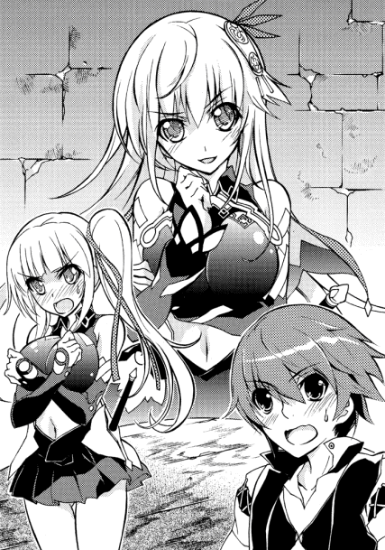

| 魔弾の王と戦姫 5 (MF文庫J) | |
| 川口 士 & よし☆ヲ | |
| メディアファクトリー (2012) | |
ＭＦ文庫Ｊ
魔弾の王と戦姫５
川口士
口絵イラスト●よし☆ヲ
本文イラスト●柳井伸彦
１ 竜の進軍
オルメア平原――銀の流星軍とムオジネル軍が激突した地から、街道を北へ四日ばかり進んだところにペルシュ城砦はある。南北と東西を結ぶ二本の街道が交差するところに建てられた、交通の要衝だ。
城砦を守る兵の数はおよそ四千。
城砦周辺の街道はいま、武装した兵と軍馬の群れ、無数の幕舎に埋めつくされていた。
夜明けの近い灰色に煙る冬空の下、よく見ると兵のいでたちはおろか、軍馬も幕舎も統一感のないことはなはだしい。鉄の甲冑で隙間なく身を固め、その上に毛皮を巻いて寒さをしのいでいる者がいれば、服を重ね着して冬の風に耐えている者もいる。
使い古されてところどころほつれている幕舎があれば、この日のために用意したとでもいうかのような豪奢な幕舎が隣り合って設営されたりしていた。
彼らこそが銀の流星軍である。とはいえ、その構成は非常に混沌としていた。ブリューヌ貴族の私兵に、国内の平和を守るのが務めの騎士団、さらには他国の軍までいる。
言ってしまえば寄せ集めのこの集団を統率しているのは、弱冠十六歳の若者だ。
名を、ティグルヴルムド＝ヴォルン。親しい者にはティグルと呼ばせている。
そのティグルは城砦の奥にある執務室で、膨大な量の書類を懸命にさばいていた。執務室にいるのは彼の他に、マスハス＝ローダントだけだ。今年で五十五歳。亡き父の親友であり、何かとティグルの世話を焼いてくれている老伯爵である。
「夜が明けたか......」
執務室の窓から聞こえてきた鳥のさえずりに、ティグルは疲れきった声でつぶやいた。
徹夜だった。昨日も一昨日も激務が続いたため、さすがに限界が近い。くすんだ赤い髪は乱れて変な癖ができており、目の下にはうっすらとだが隈が浮かんでいる。
「ティグル。昼からは軍議じゃ。それまで寝てこい」
横で手伝っていたマスハスが見かねて、いたわりの言葉をかけた。ティグルも虚勢を張らず、眠たげにまぶたをこすりながら立ち上がる。
「お言葉に甘えさせてもらいます。マスハス卿はだいじょうぶですか？」
「わしは夜のうちに仮眠をとったのでな。もう少しかたづけてから休むとするさ」
侵略してきたムオジネル軍を撃退して以降、私兵を従えて協力を申しでてきた貴族や、取引を持ちかけてきた商人は少なくない。彼らとの会見や交渉、さらに兵の編成、各方面の情報収集、それらに伴う事務処理など時間がいくらあっても足りなかった。
マスハスや、いまここにはいないがリムアリーシャ、ジェラールなどが補佐してくれなければ、とうにティグルは過労で倒れていただろう。
よろよろとした足取りで執務室を出ようとしたティグルに、思いだしたようにマスハスが声をかける。
「すまん、ティグル。部屋に戻るついでに、ルリエ殿を起こしてきてもらえんか」
ルリエ殿、とはリュドミラ＝ルリエのことだ。ジスタート王国に七人しかいない戦姫のひとりであり、愛称はミラ。
ムオジネル軍との戦いにおいて、彼女は思惑があってのこととはいえ、配下の兵を率いてティグルに協力してくれた。その後もミラは銀の流星軍に同行し、この城砦では賓客として一室を用意されている。
ティグルは老伯爵を振り返ると、胡乱げな顔で理由を尋ねた。
「彼女がどうかしたのですか？」
「幕舎の配置の問題で相談があるのだ。あやうく忘れるところじゃったわ」
ペルシュ城砦を囲む人馬と幕舎は、城砦に入りきれなかった者たちだ。その中にはたがいに反目しあっている貴族たちもいれば、誰それという貴族は好かぬと公言する騎士もおり、またジスタート軍を露骨に警戒する者もいた。
あまり仲のよくない者同士を隣接させたりしては、揉めごとの種になる。彼らの配置にもティグルたちは心を砕かねばならなかった。
――仕方がないか......。
意識を侵食しつつある睡魔をどうにか押しのけ、ティグルはわかりましたとマスハスに答えて執務室を出る。できれば他の者に代わってほしいところだったが、ミラは賓客であり、女性だ。よほど緊急の用事でもないかぎり、誰にでも任せられるものではない。
――ティッタには、レギンのことをすべて任せてるからな。
あの健気な栗色の髪の侍女に、これ以上の負担は何であれかけたくはない。
――エレンに頼むのは論外。リムに頼んだら、あとでエレンの反応が怖い......。
それにミラの部屋は、ここから自分の部屋へ戻る通路の途中にある。だからマスハスも頼んできたのだろう。
見張りに立っている騎士たちの敬礼に、鷹揚に手を振って応じる。銀の流星軍がこの城砦を拠点としてから、ペルシュ騎士団の団長レオナールは警備の人数を増やした。急激に兵が増え、見知らぬ者が城砦の中を歩きまわることが多くなったためだ。
ミラの部屋に着くと、扉の前にはジスタート兵が立っている。彼女の部下だ。
「彼女はまだ寝ているかな」
お待ちくださいと兵士は答え、扉の向こう側へ呼びかけてティグルの訪問を告げる。すると、入ってきなさいというぶっきらぼうな声が返ってきた。戸惑いつつも、ティグルは扉を開けて室内に足を踏みいれる。
夜が明けたばかりとあって、部屋の中はまだ薄暗い。奥の方にぼんやりとベッドらしき輪郭が見えた。そのあたりでもぞもぞと何かの動く気配もする。
「朝早くすまないな。でも、入ってよかったのか？」
「当然でしょ。些細なものであれ、廊下で話させるわけにはいかないわ。あなたの言葉の断片が、誰かに変なふうに伝わったりしたらおおごとじゃない」
もっともな話だった。ティグルはベッドのそばへ歩いていく。少しずつ薄闇に目が慣れてきて、青い髪の戦姫の姿を認識した。
ティグルは驚きに目を見開き、うろたえてその場に立ち尽くす。眠気が吹き飛んだ。
ベッドに身体を起こしているミラは、薄地の夜着しか身につけていなかったのだ。ほっそりとした首筋からなだらかな肩、胸元までが露わになっている。
伸びをした拍子に、エレンに言わせれば小さいらしい胸がかすかに揺れた。腰から下を覆っている毛布の端からわずかに覗く太腿が、妙に艶めかしく見える。
「どうしたの？」
ティグルを見上げて、ミラは不思議そうに問いかける。もうすこしティグルが冷静だったら、彼女の声に若干のからかいが含まれていたことに気づいただろう。しかし、ティグルはそれに気づかず、不自然に顔をそらしながら思っていることとは違うことを聞いた。
「さ、寒くないのか？」
「平気よ。私にはラヴィアスがあるもの」
ベッドの傍らに立てかけていた短槍を手にとって、ミラは愛おしげにその穂先を撫でる。氷塊と水晶を削って造りあげたかのような、神秘的な雰囲気をまとった槍だ。
凍漣と呼ばれるこの槍は、戦姫にのみ所持を許される武器――竜具のひとつであり、冷気を操る力を備えている。
「でも、そんなに私の格好が寒そうに見えるなら、あたためてくれてもいいのよ？」
今度のはさすがに揶揄されているとわかり、ティグルは横を向いたまま言い返す。
「もし俺がわかったと言ったら、ここで寝かせてくれるのか？」
半分は本音である。いますぐベッドに横になって昼までぐっすり眠りたい心境だった。
「かまわないわ。この前、いっしょに寝たばかりじゃない」
くすりと笑っての即答に、ティグルははやくも降参した。一言謝ってから、口早に用件を告げる。これについては彼女は真面目な顔で聞き、あとでマスハスのところへ赴き、対処すると答える。
「わざわざご苦労様。それじゃ、おやすみなさい。ティグル」
おやすみと言葉を返してティグルはミラに背を向ける。起きたばかりだからか、彼女のどこかあどけなさを残した笑顔や胸元、太腿などが瞼の裏に焼きついていた。
「そういえば、ティグル」
呼び止められて、ティグルはぎくりとした。不可抗力とはいえ夜着姿を見てしまったのだ。何か要求されるのかと警戒しつつ振り返る。だが、彼女の口から出てきた言葉はまったく違うものだった。
「兵たちから聞いたのだけど、最近この城砦に幽霊が出るらしいわ」
予想だにしなかった単語を聞かされて、ティグルは眉をひそめる。まったく信じないというわけではない。山や森の中で狩りをして、そのまま一晩明かしたとき、理屈では説明できないようなものに遭遇したことはある。
だが、これだけひとの多い城砦でそんな噂が出てくるとは意外だった。
「真っ白なドレスを着た女の幽霊だそうよ。私は見たことがないけれど」
ティグルは首をかしげる。
この城砦にいる女性は五人。エレンにリム、ティッタ、ミラ、レギンだ。もちろん誰も真っ白なドレスなど持ってはいない。
――それとも近隣の村や町から女性を雇い入れて、それを見間違えたとかかな？
ありえる話だ。ひとが増えれば、それだけ洗濯や掃除といった雑用の規模も増す。アルサスでも、似たようなことは数多くあった。
「ありがとう。とりあえず調べさせておくよ」
ミラに礼を言い、ティグルは彼女の部屋を辞す。
静かに閉じられた扉を三つ数えるほどの時間見つめて、ミラはそっと視線を外した。
――やっぱり純朴ね、よくも悪くも。でも、私もちょっと大胆だったかしら......。
青い髪の戦姫は、自分の格好にティグルがどういう反応を見せるか試したのだ。それによってティグルと自分の距離、また彼とエレンの距離も知りたかった。
感触としては満足できるものではなかったが、不満もあまりない。現状としてはこんなものでいいかというところだ。
次はどうしようかと考えつつ、ミラは着替えの準備をはじめた。ひとまずティグルに頼まれたことをすませるつもりだった。
自分の部屋に帰り着いたときには、ティグルの頭の中からミラの姿は消えていた。廊下を歩いている間に夜明けの冷気が落ち着かせてくれたことと、睡魔が再び猛威を振るいはじめたためだ。
服を着替えることもせず、靴だけを脱いでベッドに寝転がる。毛布をたぐりよせてくるまったと思ったら、若者は寝息をたてていた。
それから半刻ばかり過ぎて、城砦の外では炊事の煙が幾筋も立ち昇りはじめ、兵たちの喧騒が無数の幕舎を包む。城砦の中でも、用事を言いつかった兵たちが忙しく駆けまわるようになった。
ティグルはぐっすり眠り続けている。
不意に、ティグルのそばで異変が起きた。もしも誰かがここにいたならば、まるで水に波紋を広げるかのように、音もなく空間が歪む光景を目にしただろう。
しかし、ここにはティグルしかおらず、眠りから覚めることもなかった。部屋の外で見張っている兵たちも、まったく気づかない。
歪んだ空間に、何の前触れもなく白い人影が浮かびあがる。その影は周辺の大気をゆるやかに巻きこみながら徐々に輪郭と色を得て、ひとの形を作っていった。
女性だ。年齢は二十歳前後。白い薔薇も鮮やかな、青みがかった長い黒髪。華奢な身体を包む純白のドレスは、胸元に真紅の、腰に紫の薔薇をあしらっていた。美しい顔は優しさと儚さを帯びて、繊細で可憐な印象を与える。
だが、その手にはそうしたイメージからおよそかけ離れたものが握られていた。
長柄の大鎌である。湾曲した長大な刃は漆黒と真紅に彩られ、竜の爪を思わせる精巧な造りとあいまって、強烈な凄味と神秘性をまとっていた。
このような少女が持つには不釣り合いなことはなはだしい。しかし、実際に手にしている姿は幻想的ですらあった。
ドレスをふわりとひるがえらせ、あたかも風に舞う妖精のように、ゆるやかに彼女は着地する。赤い薔薇を飾った靴が床に接したときも、まったく音がしなかった。
純真無垢な微笑を湛えて一歩、二歩と歩き、彼女はティグルが眠っているベッドの前に立つ。ティグルは依然、目を覚まさない。
どれだけ疲れていようとも、殺気や敵意を感じればこの若者は跳ね起きる。また自分に向けられたものでなくとも、剣呑な雰囲気を察知すれば反応する。長年の狩りと、戦場で鍛えられてきた本能が眠りから叩き起こすのだ。
この黒髪の美女は、ティグルに存在を悟らせないほど見事に気配を消していた。細腕に見合わない大鎌を後ろ手に持って、彼女はティグルの寝顔を覗きこむ。
じっと眺めていると、なんとはなしに頬をつつきたくなる衝動に駆られた。そんなことをすれば、さすがに起きるだろう。おおごとになってしまう。
彼女はおとなしく退散することにした。この城砦にはいまふたりの戦姫がいる。彼女らに見つかると少々厄介である。
それに、少し遊びすぎた。
この城砦の構造やティグルの行動予定を把握するのに何日かかけたせいで、白い女の幽霊が出るなどという噂話ができあがっている。勘付かれる前に去った方がいい。ティグルヴルムド＝ヴォルンの顔を間近で見るという目的は果たしたのだから。
ティグルが寝返りを打った。その手が伸びて彼女の頬に触れ、撫でて、それからドレスに包まれた豊かな胸をなぞってベッドに落ちる。
彼女はおもわずくすりと笑った。眠っているのは間違いないので放っておいたのだが、自分の顔と、胸に触るとは。
「――もしも起きていたなら、不敬罪で死刑ですよ」
左手で大鎌を振りかざしながら、右手のひとさし指を伸ばしてティグルの頬をつつく。
彼女がこの部屋に突如現れたときと同じように、空間が歪んだ。彼女の姿もぼやけ、急速に輪郭と色を失っていく。
一瞬後、彼女の姿は塵一つの痕跡すら残さずに消えていた。
ティグルはまるで気づかず、つつかれた頬を指でかいて昼まで寝ていたのだった。
◎
日が昇るにつれて雲は少しずつ散っていき、冬の陽射しは弱々しいながらも地上を照らしている。
昼と呼ぶにはまだ少し早いころ、ペルシュ城砦を囲む城壁に二人の少女の姿があった。いずれも十六、七歳ぐらい。軍衣をまとい、ひとりは腰に長剣を帯び、もうひとりは槍を抱えて腕組みをしている。
槍を抱えているのはミラだ。そして、もうひとりの、長剣を帯びた少女もまたジスタート王国の戦姫だった。
腰まで届く白銀の髪に、活力に満ちて輝く紅の瞳が見る者に強烈な印象を残す彼女の名はエレオノーラ＝ヴィルターリア。ティグルなど親しい者にはエレンと呼ばせている。
城砦の外に広がり、せわしなく動きまわっている無数の人馬と幕舎を二人は見下ろしていた。
「こうして見ると、私が少しジスタートに戻っていた間にいろいろあったのだと、あらためて実感させられるな」
「そのままジスタートにいてもよかったのよ。ライトメリッツを離れて数ヶ月。公主の不在はそろそろ限界ではないかしら？」
やや悔しさのにじんだため息をこぼすエレンに、ミラは皮肉めいた笑みを浮かべて挑発するような言葉を投げかけた。
本来、ジスタート国王にのみ膝をつく存在であるはずの戦姫たちがここにいるのは、むろんそれなりの思惑や理由がある。
ただし、もしも理由をひとつ述べよといわれたら、エレンもミラもひとりの若者に力を貸すためだと答えるだろう。
それはともかく、ミラの挑発にエレンは乗った。眼下の兵たちを見下ろす顔が、いくばくかの険しさを帯びる。
「......お気遣いいただいて恐縮だが、私の部下は有能ぞろいでな。我がライトメリッツに後顧を憂うようなことなど何一つない。おまえこそ、そろそろ故郷恋しさに泣きだしたくなっているのではないか？」
「......あらあら。私の心配とはずいぶん偉くなったものね、エレオノーラ。肝心の戦に間に合わなかった分際で」
ミラの方がエレンより背が低く、横目で見上げようとすると、やや首を傾けてしまう。その忌々しさもあって、より棘のある声で凍漣の雪姫は銀閃の風姫を睨みつけた。この二人は出会ったときから「狼と狐の方がまだ仲がよいはず」といわれるほど険悪な仲だ。
ちなみに、二人の声はおたがいにしか聞こえないほど小さいものである。また、その表情も態度も威厳に満ちており、離れて見ている兵たちなどにはいかにも歴戦の将軍が今後の戦略について意見をぶつけあっているかのように見えるのだった。
これは錯覚というわけでもなく、エレンもミラも兵たちの手前、言葉以外で感情的な態度に出ることは自重していたのである。大きな戦いを控えているのに、一軍を率いる将同士が喧嘩などしていては士気にも影響することを、ふたりはよくわかっていた。
「肝心の戦か......。そうだな。たしかに私は間に合わなかった」
エレンの声が、急に力を失って弱々しいものになる。どんな反撃がくるかと待ちかまえていたミラは意表を突かれ、おもわず白銀の髪の戦姫を振り向いた。
「話を聞くかぎり、ブリューヌの貴族や騎士たちでもティグルを助けることはできなかっただろう。その点に関してはおまえに礼を言うしかない。――ありがとう、リュドミラ」
最後の感謝の言葉に、ミラは若干の狼狽を示す。それほどに真摯な響きを、エレンの声は帯びていた。どう返したものかとっさに思いつかずに言葉をさがしていると、エレンが再び口を開いた。
「だから、だ。おまえの出番はもう終わった。さっさとオルミュッツに引きあげて、大好きな紅茶でも飲みながらこの思い出を胸に抱いて余生を送るといい。帰れ帰れ」
まるで野良犬を追いはらうような仕草で手を振りながら、冷たい声で言い放つ。何気ない動きで身体を傾けて、手の動きを兵たちの視線から隠すことも忘れない。
ミラの顔はたちまちのうちに呆然から憤怒へと一変した。
「あ、あなたに人並みの心を一瞬でも期待してしまった私が愚かだったわ！ 戦姫ともあろう者が幼児以下の精神性と倫理観しか持っていないなんて恥を知りなさい！」
可能なかぎり声を押し殺して、ミラはエレンを怒鳴りつける。エレンもまた声をおさえて、憤然とした感情を吐きだした。
「その台詞はそっくり返してやる！ 自分の言葉を省みて、幼児以上の精神性であると胸を張れるかどうか考えてみろ！ ――ああ、すまん。張れるほど胸はなかったかな」
急に冷静な声音で、エレンは紅の瞳に優しげな色を湛えてミラを――正確には彼女の胸を見つめる。ないというわけではもちろんないが、エレンよりは大きくなかった。
「ひ、必要以上に胸が大きくて何か得することでもあるっていうの？」
「心にゆとりが持てるぞ？ 損得しか考えられない誰かさんとは違ってな」
顔を真っ赤にするミラを、エレンは肩をすくめて鼻で笑う。青い髪の戦姫は内心で歯噛みした。胸に対する罵倒の言葉が瞬く間に二、三十ばかり浮かんだが、うかつにそれを口にすることはできない。
エレンともミラとも親しい仲である戦姫ソフィーヤ＝オベルタス。彼女はエレン以上に豊かな胸の持ち主だからだ。うっかり口を滑らせれば、エレンがそれをもっともらしい言いまわしで彼女に伝えかねない。
「ところで......ティグルはまだ起きてこないのかしらね」
街道を埋める無数の兵と馬、幕舎、そして立ち昇りはじめた炊事の煙に視線を戻して、ミラは不器用に話題を変えた。エレンも気を取り直し、真面目な表情になって答える。
「そろそろだ。さっきリムが確認に向かった。......できることなら、たまにはあいつの望むようにぐうたらさせてやりたいのだがな」
ミラの青い瞳に、軽い驚きがにじんだ。わずかに首を動かしてエレンの様子をそっと窺う。白銀の髪の戦姫の表情はいつになく優しげで、そして申し訳なさそうに見えた。
エレンはくすんだ赤い髪の若者を心から気遣いながらも、その重荷をほとんど肩代わりしてやれない自分に歯がゆさすら覚えていたのだ。
ミラは慰めの言葉をかけようとして、その直前で口をつぐんだ。
ふたりの男女がこちらへ歩いてくる。エレンたちと視線が合うと、男の方――ティグルは笑みを浮かべて軽く手を挙げた。
くすんだ赤い髪はそれなりに整えられ、黒い瞳に疲労は残っていない。穏和な顔だちに加えて麻の服に革鎧という身なりが素朴な印象を与える。左手には漆黒の弓を持ち、腰には矢筒を提げていた。
その隣に付き添うように歩いている娘は、エレンの副官を務めるリムアリーシャだ。
リムという愛称で呼ばれており、ティグルより三つ年上の十九歳。艶のない金色の髪を頭の左側で束ね、均整のとれた長身に甲冑をまとっている。愛想のない顔の中の瞳は、ミラのそれとはまた若干異なる静かな青。
主の顔を見たリムは、謹厳な表情を崩さずエレンに一礼した。次いでミラにも丁寧に会釈する。
「ご苦労だったな、リム」
堅苦しい副官にねぎらいの言葉をかけると、エレンは笑顔でティグルを見た。
「どうだ。少しは眠れたか？」
「ああ。それにリムがスープを用意してくれていたんだ。おかげでしっかり目が覚めた」
ほうとエレンは感心したような声を発して副官におもしろそうな視線を向ける。リムは視線をそらして床を見ながら早口で答えた。
「すぐに軍議ですから、なるべく早く目が覚めていただくようにと思っただけです。......昨日のように、あくびを噛み殺すのに懸命になられても困りますから」
台詞の前半と後半の間に、不自然なほどの間がある。ティグルが昨日の軍議の最中、眠そうにしていたのは事実だが、どこかとってつけたような言い方だった。
「スープか。いいな、今度は私が作ってティグルを起こしてやろう」
冗談とも本気ともつかぬ笑顔でエレンが言うと、いつもの無表情に戻ったリムが駄目ですとそっけなく切り捨てる。
「エレオノーラ様がそのようなことをされて、城内での噂になったらおおごとです。そうしたことは私にお任せください」
「そうか。私としては残念だが、リムがそんなに自分のスープを飲ませたいのならば仕方ないな。部下の顔を立てるのも主の務めだ」
「そ、そんなことは......」
からかわれたことに気づいてリムの無表情がわずかに崩れ、頬に赤みがさした。
「エレンはスープを作ったりするのか？」
興味と、リムへの助け舟も兼ねてティグルは白銀の髪の戦姫に尋ねる。エレンは胸を張って得意げに答えた。
「昔はよくやってたぞ。大味だが、まずくない自信はある」
「ティグル。スープも悪くないけど、紅茶はどう？ 香りと味とで優雅な目覚めを――」
「おまえはまるでティグルを理解してないな。起きぬけに腹に入れるのだぞ。慣れ親しんだ素朴なものの方がいいに決まっている」
口を挟んできたミラを、エレンは鼻で笑ってはねのける。ミラは引き下がらず、挑戦的な顔つきになって言い返した。
「そこまで言うならティグルに飲み比べてもらいましょう。あなたのまずくないスープやらと、私の紅茶を。それでおいしいと言った方を今後飲んでもらえばいいわ」
「いいだろう。私とティグルはこれまで何度も食事をともにしているからな。厨房に立ったこともない者に、私が負けるとも思えん」
いつになく余裕たっぷりにエレンは応じ、ミラは口をへの字に曲げて黙りこむ。厨房に立ったことがないのは事実だった。一方、蚊帳の外のティグルとリムは顔を見合わせる。
「......俺はどうすればいい？」
ティグルにとってもリムは頼もしい副官であり、自分の知らないさまざまなことを教えてくれる教師でもある。三つ年上の教師は苦渋に満ちた顔で声を振り絞った。
「止むを得ません。まず、できるかぎり機会を伸ばしてください。ティグルヴルムド卿は多忙ですから、どうにかなるでしょう。そして、お二人のを飲んだとしても......答えを保留にしてください。傷つけないように」
「なんとしてでも勝敗をつけるな、ということか」
「個人的にはエレオノーラ様に勝っていただきたいですが、こういう時期の勝負事はよくありません。理想はすべてかたづいたあとです」
ミラがどこまで本気なのかはわからないが、エレンは本気でやる。それがリムにはわかる。そして、本気であればあるほど、その勝敗は彼女の精神に強い影響を与えるだろう。
リムがあえて言葉にしなかったところまで含めて、ティグルは理解した。
「――わかった。答えを出さないのは卑怯だと思うけど......いまはそれでいこう」
リムはエレンを横目で見て、そっとため息をついた。彼女の大切な主である白銀の髪の戦姫は、基本的に自信家である。ただ、その自信に根拠がないことは、あまりない。
――やはりティグルヴルムド卿だから、でしょうか......。
そう考えかけて、リムは頭を振った。他に考えなければならないことは多い。
スープと紅茶の飲み比べとて、戦に勝たねばできないのだった。
ティグルはブリューヌ王国の小貴族である。
正確には、だったというべきなのかもしれない。隣国ジスタートの軍勢を自国に引き入れた罪を問われ、ティグルは爵位も領土も剥奪されたのだ。
だが、ティグルは怯まなかった。それをするだけの理由が彼にはあったのだから。
秋のはじめにディナントで起こった、ブリューヌ軍とジスタート軍の戦い。そこでティグルはエレンとぶつかり、敗北して彼女の捕虜となった。
大陸諸国においては、捕虜の身柄を取り返すには身代金を支払わなければならない。しかし、身代金が用意される気配はなかった。もし何も起こらなければ、ティグルは奴隷となって売り払われていただろう。
そうならなかったのは、テナルディエ公爵が主が不在の領土――アルサスに兵を向け、ティグルがそのことを知ったからだ。
ティグルはエレンの力と兵を借りて、自身が治めていたアルサスをテナルディエ公爵の軍勢から守った。その際、ティグルは指揮官であった公爵の長子ザイアンを討ち取り、戦いに身を投じることを余儀なくされたのだった。
――そうだ。あれからまだ半年も過ぎていない......。
ペルシュ城砦の城壁を歩きながら、ティグルはこれまでのことに思いを馳せていた。半年にも満たない期間ながら、これまで生きてきた十六年間よりもはるかに濃密で、そして血なまぐさい時間。
兵を百人そろえるのが精一杯の、山と森の多い小さな領土を治める自分。
一方、テナルディエ公爵はブリューヌ王国を代表する大貴族であり、その力は一万もの兵を簡単に用意できるほどだ。
ふつうに考えれば、勝負になるはずがない。そして、息子を殺害した男を、テナルディエ公爵が許すはずはない。ティグルは破滅か逃亡のいずれかを選ぶ以外になかっただろう。また、どちらを選んでも、彼の生まれ育ったアルサスは蹂躙されることになったに違いない。
だが、いまやティグルは公爵とぶつかりあえるだけの力を手に入れていた。
それは冬のはじまるころに、南東の王国ムオジネルが大軍をもって攻めこんできたことによる。近隣の貴族や騎士がすぐには動けずにいた中で、二千以下のわずかな手勢でムオジネル軍を迎え撃ったのが、ティグルだったのだ。
紆余曲折を経てティグルは戦姫リュドミラの力を借り、また数少ない味方であるマスハスやオージェが近隣の貴族や騎士に呼びかけてくれたおかげで、ムオジネル軍を撃退することに成功した。これが十日前のことだ。
「我がペルシュ騎士団の守る城砦が、北へ向かって数日のところにございます。快適とは申しませんが、このような草原で過ごすより幾分かはましでしょう」
ペルシュ騎士団を率いて駆けつけたエミールがそう申し出て、ティグルはありがたく受け入れた。
かくてティグルの率いる『銀の流星軍』とジスタート軍、協力してくれた貴族たちや他の騎士団はペルシュ城砦を訪れたのだった。
◎
城砦の奥にある一室で、六人の男女がテーブルを囲んでいる。
顔触れはティグルとエレン、リム、ミラ、マスハス。
六人目は、肩のあたりで切りそろえた淡い金色の髪と、澄んだ碧い瞳を持つ少女だ。端正な顔だちは緊張に強張っており、他の女性たちにくらべてやや頼りなさを感じる。
彼女の名はレギン。レグナスという名前の王子として育てられてきた、ブリューヌの王女である。
だが、彼女が王女だということを知る者は、非常に少ない。それが銀の流星軍にとって悩みの種でもあった。
「――出兵の準備は整った。その気になれば明日にでも出立できよう」
ずんぐりとした体躯を甲冑で包んだマスハスが、一同を見渡して厳かに告げた。最近ティグルに協力を申し出た貴族や騎士たちのまとめ役を、この老騎士は務めている。
正確には、彼にしか務まらなかったというべきだろう。なにしろにわか作りの混成軍である。混沌とした現状を見かねて立ち上がった騎士団もいれば、反テナルディエや反ガヌロンを叫び、私兵を率いて参加した貴族もいる。
その反テナルディエや反ガヌロンにしても、大貴族に味方する気になれないのでティグルに協力した者と、大貴族に協力を申し出たものの、あしらわれたのでこちらへ流れてきた者とがいる。
さらにブリューヌ人だけではなくジスタート人までこの陣営には存在し、それさえもエレンの率いるライトメリッツ軍とリュドミラのオルミュッツ軍とにわかれる。
それらの上に立つのが、たかだか十六年しか生きていない若造である。つい半年前までは、せいぜい百ていどの兵しか率いたことのない辺境の伯爵だ。
むろんマスハス以外にも、ティグル個人の見識や勇気を称賛して従う者はいる。オージェ伯爵やカルヴァドス騎士団のオーギュスト、リュテス騎士団のシャイエ、このペルシュ騎士団のエミールに、団長のレオナールなどだ。
だが、そうした者はまだまだ少ないのが現状である。
マスハスのような、年長で見識もあれば貫録もある人間がいたからこそ、ふくれあがった銀の流星軍は瓦解せずにすんでいたのだった。
「兵の数はどれぐらいになりそうですか？」
「ブリューヌの者だけでいえば騎士が四千。歩兵が六千といったところです。これにジスタート軍の騎兵三千が加わります」
レギンの質問に、マスハスは臣下としての態度を崩さず丁寧な口調で答えた。
老伯爵の挙げた数字を聞いて、エレンは怪訝そうな視線をミラに向ける。騎兵三千ではライトメリッツ軍だけだ。
「私の軍は三百ばかり残してオルミュッツに帰らせるわよ。もともと長期遠征の準備はできていないもの」
当然のようにミラは答え、エレンは眉をひそめた。三百ということは、ミラのまわりを固める親衛隊のようなものだろう。
「だったらおまえも帰ればいいだろうに」
そう毒づいたエレンを、ミラは鼻で笑った。嫌味たらしく口元を歪ませる。
「それは無理ね。私はあなたの監査役だもの」
「頼んだ覚えはない」
憮然としてエレンは言い返したが、それ以上言葉を続けることはせず腕組みをして口を引き結んだ。二人の会話の意味をはかりかねて、ティグルは隣に座っているリムに視線で助けを求める。彼女はそっとティグルの耳に口を寄せた。
「エレオノーラ様がこの戦の経過を国王陛下にご報告申しあげたとき、それに誤りや偽りがあれば指摘して正すのが監査役です。リュドミラ様は普段からエレオノーラ様と険悪な間柄で知られておりますので、適役かと」
「険悪なのにか？」
「親密ですと、不正を疑われます。過去にそういう事例はいくつもありますから」
わかりやすい例でいえば、戦費の横領だ。総指揮官が監査役を抱きこみ、戦費の何割かを二人で山分けするという話は珍しいものではない。そのため監査役は公正な人間か、あるいは総指揮官と親しくない人物が選ばれる。
なるほどと納得するティグルの右隣で、レギンが首をかしげた。
「すべて合わせると、一万三千ですか......。この城内にはそれ以上の兵がいるように思えましたが」
軽い驚きに目を瞠りながらも、マスハスは王女にうなずいてみせた。
「殿下の仰るとおり、この城砦にいる兵の数は二万弱。リュドミラ殿の兵を除いても、一万七千近くはいるでしょう。ただ、城砦の守備に食糧や燃料、飼料、武具......さらに兵の強さなどの問題から、すべての兵を連れていくのは不可能なのです」
「なるほど......わかりました。話を進めてください」
マスハスがテーブルに地図を広げる。ブリューヌ王国全体を描いたものだ。
「さきほどは明日にでも出立できると言ったが、実際にこの城砦を発つのは七日後を予定しておる」
「理由は二つあります」
マスハスの言葉を受けて、リムが口を開いた。
「一つは、テナルディエ公爵とガヌロン公爵を噛みあわせるためです。我々のもとへもたらされた情報によれば、両公爵の軍は王都付近で激突後、テナルディエ公爵軍が劣勢となって南へ後退を繰り返し、両軍は現在ネメタクムあたりにいるとか」
「それぞれの軍を率いているのは誰だ？ 公爵たちが自ら戦場にいるのか？」
リムの指が示す地図の一点を見据えながら、エレンが訊いた。灰色の髭を撫でながら、マスハスは首を横に振る。
「テナルディエ公爵の軍を率いているのはスティードといい、公爵の側近じゃ。ガヌロン公爵の軍を率いているのはグレアスト侯爵。こちらもまた、ガヌロン公の腹心とも呼べる男じゃな」
「グレアスト......。あの男か」
ティグルと、そしてエレンの記憶に不快な映像がよみがえった。黒騎士ロランと対峙する前、ガヌロンの名代として現れた男の姿を思いだしたのだ。
とくにエレンはよほど不愉快だったようで、表情が一気に険しいものになる。
「ムオジネルが攻めてきていたというのに、呑気なものね。それともガヌロン公爵はわかっていて兵を動かしたのかしら」
青の瞳に冷気を宿してミラが鼻を鳴らした。マスハスはうなずく。
「おそらくは。ムオジネル軍は陸と海から兵を動かしており、陸からの軍はティグル......ヴォルン伯爵とあなたが撃退してくださった。海からの軍――船団は、これはテナルディエ公爵が迎え撃ったらしい」
「テナルディエ公爵の勢力圏は、ネメタクムを中心にブリューヌ王国南部に広がっています。ガヌロン公爵との一大決戦を前にして、ムオジネル軍を放っておくことなどできなかったのでしょう。そこを突かれた形ですね」
マスハスの説明をリムが捕捉し、ティグルは複雑な心境で地図を眺めた。
――はからずも俺はテナルディエ公爵と共闘していたわけか......。
自分たちが戦った、いわゆる陸のムオジネル軍が撤退していったのは、海での戦いの結果と無関係ではあるまい。また、自分たちが陸のムオジネル軍を食い止めたからこそ、テナルディエ公爵は海のムオジネル軍と戦えたのだろう。
「ムオジネルが退いた以上、テナルディエ公はガヌロン公との決戦を急ぐじゃろう。そんなところへ、我々がのこのこと姿を現す理由はない」
そう説明しながらマスハスは地図に駒を置いていく。どちらかが倒れるのを待ち、生き残って傷つき疲弊している方を討つ。それが基本方針だった。
「二つめの理由は？」
ティグルの質問に答えたのはリムだ。
「ムオジネル軍は撤退する際、ティグルヴルムド卿を称賛していたでしょう。彼らはその後も、ブリューヌ王国内であなたの活躍を吹聴してまわっているようなのです」
「テナルディエとガヌロンの争いに、第三勢力としてのティグルを登場させて混乱を長引かせるつもりじゃろうな」
あまりにも見え透いている意図に憮然として、マスハスがしかめっ面をつくる。それとわかっていて乗らなければならない現状が、この老騎士には腹立たしかった。
ティグルはたしかに第三勢力としての立場を急速に確立しつつあるが、ジスタート軍を自国に招き入れたという悪評に加え、出自は辺境の伯爵に過ぎないという頼りなさも内包している。
一方、テナルディエとガヌロンはいずれも名門の出だ。彼らの治めているネメタクムやルテティアの豊かさはよく知られており、動かせる兵の数も比べものにならない。
ティグルはようやく一万もの兵をそろえたというのに、彼らはその倍の兵をさほど苦労せずに用意できるのだ。
「私の名を役に立てることは、できなさそうですか？」
かすかに悔しさをにじませた表情でレギンが尋ねた。ディナントの戦いで死んだと思われている彼女が実は生きていたということは、ここにいる者たちを含めたごくわずかな人間しか知らない。王子として生きてきたが、男ではなく女だったということも。
「その案は出たが、私が頼んでやめてもらった」
つまらなさそうな顔でエレンが答えた。レギンは不思議そうに問いかける。
「あなたは、私が王族であることを喧伝するつもりだったと思いましたが」
レギンが王女であることを明かし、それを証明するものがアルテシウムにあると語ったとき、それを広く知らせることを考えたのは他ならぬエレンだった。
「見通しが甘かった」
表情は憮然として返事はそっけない。レギンは困惑気味に眉をひそめ、ティグルに助けを求める視線を向ける。それを見て、マスハスが一つ咳払いをした。
「僭越ながら殿下にご説明を――」
「マスハス卿。殿下には俺から説明します」
老伯爵の言葉を遮って、ティグルはことさらに明るい表情をレギンに向ける。あまり快いものではないが、だからこそ自分の口で言わなければならないと思った。
「ムオジネル軍を撃退したオルメア平原からこの城砦へ来るまでの間......いえ、この城砦に来てからも、俺は多くの貴族や騎士、商人らと会って話をしました」
自虐的にならないよう気をつけながら、ティグルは平坦な声音で言葉を続ける。
「彼らがこの城砦に集まった理由はさまざまです。ムオジネルと戦った俺を認めてくれたひともいれば、両公爵に協力したくないから俺のところへ来たというひともいます。それでわかったことは......俺はまだ、彼らの信頼を勝ち得ていないということです」
「信頼......？」
レギンが碧い瞳を曇らせる。
「理由はどうあれ、俺がジスタート軍を国内へ呼びこんだことは事実です。爵位を剥奪されたことも。彼らはそれを知っている。何人かは、俺がどのような人間なのか見極めようとするふうでさえありました」
もっとも、最初はティグルはそのことに気づかなかった。会談を終えたあとで、同席していたマスハスやリムに教えられてはじめて知ったのだ。わかってからは、相手の言動に注意深く対処するようになったが。
「この状況で俺が殿下のことを話してアルテシウムへ向かうと告げたら、彼らは動揺し、むしろこちらに疑惑の眼差しを向けてくるでしょう。何をたくらんでいるのかと。そうなったら、アルテシウムへ向かうどころではなくなってしまいます」
エレンの言った、見通しが甘かったというのはこのことだ。
彼女の考えていた戦略は次のようなものだった。
まず、レギンの存在を声高に叫んでアルテシウムへ向かう。そうしたら当然、テナルディエとガヌロンは一時的にでも手を結び、今度こそレギンを亡き者にせんと兵を進めてくるだろう。
だが、すでにおたがいの軍を衝突させている二人だ。両者の間に信頼などあるはずがなく、その動きに隙ができないはずがない。たとえテナルディエとガヌロンが組んでこちらの二倍、三倍の兵力を抱えていようと、その隙を突けば勝てる。そう踏んでいた。
しかし、この戦略は味方が結束しているのが大前提だ。
貴族や騎士たちにそれぞれ打算や思惑があるのはかまわない。ティグルを信頼し、従ってくれるのならば。
だが、現状はそうではない。
ジスタート軍を国内に呼びこんだ裏切り者が、今度は亡き王子殿下の名を利用するつもりらしい。姿かたちのよく似た、素性の知れぬ娘を引っ張ってきて......。
そのような陰口が軍内に蔓延したら、もはや戦うどころではなくなってしまう。
「そういった事情から、殿下の名はこれより後の段階で活用させていただきたいと思っています」
「......後の段階？」
無念そうにうつむいたレギンだったが、ティグルの言葉に目を瞠って顔を上げた。
「我々が勝利を得たとき。それをより確実なものにするために、殿下の御名を借りることがあると考えています」
レギンはしばらく若者の顔を見つめていたが、やがて肩の力を抜いて椅子に座り直す。
「わかりました。もとより私はあなたを頼っている身。お任せします」
「恐縮です、殿下。ただ――いま申し上げたことと矛盾するように聞こえますが、あるていどのこと......たとえば『王家に連なる女性を保護している』ぐらいの情報は流すつもりでいます」
テナルディエかガヌロンがレギンの素性を明らかにした場合に備えてのことだった。
『ティグルヴルムド＝ヴォルンはある王族を匿っている。秘密にしていたのは、もちろん己の私欲のためだ』などと吹聴されては、その後どのように弁明しても聞き入れられないだろう。
「明らかにもできず、隠しておくのも危険。難しいのですね......」
「殿下に害が及ぶことのないよう、微力を尽くします」
心配させないようにという配慮から笑顔をつくって王女に答えるティグルを、マスハスは気遣わしげな表情で見守っていた。王女の素性を明確に公表しないことについては、ティグルが口にしなかったもう一つの理由がある。
レギンに、力がなさすぎることだ。
――実は王女であり、事情があっていままで王子として生きてきた。それを明かしても人々の動揺をおさえられるだけのものを、この方がお持ちであれば......。
政事や軍事における非凡な能力や何らかの実績。あるいは、テナルディエやガヌロンに見劣りしないほど強力な者の忠誠。
たとえばガヌロンに謀殺されたロランがレギンのそばにいれば、マスハスは素性を明かすよう強く勧めただろう。事実を知らされた人々も、あのロランが従っているのだからと冷静さを保っていられるに違いない。
――わしやオージェ殿ではもちろん、ムオジネル軍を撃退したティグルでもそれは無理じゃ。もしも味方が狼狽しないのであれば、より有利にことを運ぶことができたのだが。
だが、ないものねだりをしても仕方がない。手持ちの駒を駆使してやりくりしていくしかなかった。それに、現状は数ヶ月前から見れば想像できないほど恵まれている。
そうして軍議は解散となった。
レギンの身分を隠すためには、なるべくひとと接触しないことが望ましい。
現在のペルシュ城砦には、騎士や貴族などさまざまな者がいる。レグナスの顔を覚えている者も当然いるだろうし、レギンの顔を見て何か勘付く者もいるかもしれないのだ。
そのため、彼女は城砦の奥にある自分に与えられた部屋からほとんど出ない生活を送っている。また、レギン自身、あまりひととの接触に積極的ではないようだった。
とはいえ、王女であるからには放ってもおけない。そこで彼女の身の回りの世話をする役目を任されたのが、ティッタである。
レギンの素性を聞かされたとき、ティッタはおおいに驚き、ティグルに彼女のことを頼むといわれると、不安と緊張を全身にまとわりつかせたものだった。
「ティグル様......。あたしにそんな大役が務まるんでしょうか」
「もちろんだと言いたいところだけど、たしかにおまえには難しいかもしれないな。なにせ、うちに来たことのある貴族なんて数えるほどしかいないし、王族なんてお目にかかる機会すらないからなあ」
ティグルは苦笑を浮かべて、すっかり萎縮してしまっているティッタの頭を撫でる。栗色の髪の侍女を優しく見つめて言葉を続けた。
「でも、おまえなら心配ないとも思ってる。殿下といっても、この場合はそう身構えたりする必要はない。いつも俺にやってくれているように、殿下の身の回りのお世話をしてくれ。困るようなことがあれば俺が何とかする」
ティッタを安心させるように、彼女を軽く抱きしめてその背中を叩く。それでティッタも心を決めたのだった。
実際、城砦での生活がはじまってから問題は何も起きていない。レギンが人形のようにおとなしく、何かを要求することがほとんどないというのもあるが、ティッタもまた彼女の邪魔にならないよう控えめに、しかし真摯に尽くしていた。
いま、ティッタはレギンの身体を拭いている。床に敷いた絨毯の上に全裸で座っている王女の背中を、湯を絞った布で力を入れすぎないように拭いていた。
室内にあるのはベッドの他に簡素な造りの机と椅子、明かりのための燭台だけ。その殺風景さ加減は、とても一国の王女に用意された部屋とは思えない。
――あたしはこういうのに慣れてるけど......。
王女殿下は平気なのだろうかと、ティッタはなんとなく考える。
市井の人間には、いわゆる風呂だの浴場だのは金のかかる娯楽に近い。せいぜいが湯を絞った布で身体を拭くていどだ。ティッタは侍女という立場もあり、水浴びなどをして身体を清潔に保つ努力は欠かさなかったが、風呂に入ったことはあまりない。
浴槽に充分な量の水を張り、それを湯にするだけの薪を用意する。そんな贅沢は、年に一、二度ある祭りで提供されることがあるぐらいだ。
ただ、大都市には公衆浴場と呼ばれる集団で湯に浸かれる施設があったり、裕福な商人や貴族はほとんど毎日のように風呂に入っているという話は聞いたことがあった。もちろん王宮にもあるのだろう。
「――ティッタ......でしたね」
突然名前を呼ばれて、ティッタは肩をびくりと震わせた。はいと答えようとして、ひゃいという響きが口から出る。気づかぬうちに、何か粗相でもしてしまったのだろうか。
顔を真っ赤にしてうろたえるティッタの目の前で、白い背中が小刻みに震えた。どうも王女は笑っているらしい。
「そんなに驚かないでください。私はあなたに感謝しているのですから。いまの私ではあなたの働きに何も報いることができず、申し訳ないかぎりです」
「も、申し訳ないなんて、そんな......」
思いもよらない言葉をかけられ、ティッタは激しく首を振る。さらに言葉を紡ごうとしたが、語句よりも、王族に対して失礼でない言い回しかどうかに悩んでしまい、結局何も言えなかった。その葛藤を悟ってか、レギンは静かな声音で尋ねる。
「あなたは何年もヴォルン伯爵に仕えていると伺いましたが」
「あ、はい。ええと、十一のときからなので、四年間ティグル様にお仕えしています」
「ティグル......？ そういえば、他の者も彼をそのように......」
首をかしげたレギンに、ティッタは愛称の由来を簡単に説明した。ようするにティグルが面倒くさがったというだけなのだが、レギンはそれを楽しそうに聞いた。
「よかったら、他にも彼のことを話してもらえませんか？ どんな些細なことでもかまいません。――私に力を貸してくれている彼について、もっと知りたいのです」
台詞の後半は言い訳めいた口調だったが、ティッタは気にしなかった。ティグルが王女殿下に気に入られているらしいということが、純粋に嬉しかったのだ。
「わかりました。そうですね。これは三年前のことですけど......」
そうしていくつかの話をするうちに、王女と侍女は打ち解けていったのだった。
◎
ガヌロン公爵の治めるルテティアは、ブリューヌ王国北部にある。
冷涼な気候で知られ、葡萄の代わりに林檎が栽培されている。
ブリューヌ産の葡萄酒は近隣諸国も認めざるを得ないほど美味だが、この地で造られる林檎酒も負けていない。果実の甘味に若干の酸味が喉に絶妙の清涼感を残してくれる。ひとによっては林檎酒の方が葡萄酒よりうまいと言うほどだ。
そのルテティアで造られた林檎酒を一口飲んで、カロン＝アンクティル＝グレアストは小さく息を吐いた。
二十代前半。貴公子然とした顔だちには疲労の色がにじんでおり、普段は丁寧に整えられているはずの灰色の髪も乱れている。豪奢な絹服にも泥のはねた跡が何ヵ所かあった。
「戦場からここまで十日たらずで戻ってくるのは正直骨の折れる仕事でしたが、この一杯でいくらかは報われた気分になりますな」
胡桃材のテーブルを挟んで、グレアストの向かいに座っているのは十四、五歳の子供と見紛うほど小柄な男だ。毛髪のまったくない頭に絹の帽子をかぶり、華美な服から伸びた手足は細い。目が空いているのかどうか判然としないほどに、まぶたは大きかった。
男の名をマクシミリアン＝ベンヌッサ＝ガヌロン。ブリューヌ王国においてテナルディエ公爵と並ぶ権勢を持つ公爵だ。
ここは、ルテティアの中心都市アルテシウム。そこにあるガヌロンの屋敷だ。部屋を飾る調度品の数々はいずれも高名な職人の手によるものばかりで、そういったものにあまり興味のないグレアストでさえ感嘆の息をつかずにはいられないほどだった。
グレアストとガヌロンの手にある杯も、宝石を埋めこんだ水晶作りである。
「骨が折れるとはいえ、馬車の中ではずうっと眠っていたのだろう？」
林檎酒を自身も飲みながら、ガヌロンは薄い笑みを浮かべた。グレアストはそれに苦笑だけで応じ、林檎酒の瓶をテーブルに置く。端正な顔から、笑みが消えた。
「いったい何事があったのです？ 私にすぐ戻るようお命じになるとは」
数日前まで、グレアストはブリューヌ南部のネメタクムにいた。
ガヌロン配下の兵の指揮を任された彼は、テナルディエの軍勢と王都近くで衝突してから積極的な攻勢を続け、敵に後退を強い続けてネメタクムまで追いこんでいたのだ。
テナルディエ軍の総指揮官であるスティードの性格や兵の動かし方もだいたい把握し、次の一戦で葬り去るつもりだったのである。
ところが、兵たちに進軍の命令を出そうとしたところでガヌロンの使者が訪れ、告げたのだ。「兵はその場に待機させ、ただ一人で一刻も早くアルテシウムへ戻るべし」と。
グレアストにしてみれば、まさにこれからが楽しくなるところだったのだが、彼はあくまでガヌロンの許諾を得て兵を指揮している。なにより、この小さな公爵に逆らうことなど考えられなかった。
「いろいろとおもしろいことが起こってな」
ガヌロンは水晶杯の中の林檎酒に口をつけながら、言葉を続ける。
「まず『弓』が見つかった。ティグルヴルムド＝ヴォルンが持っているらしい」
さすがのグレアストも、ほう、と小さく唸ったきり言葉が続かない。
――この国では非常に珍しい、弓の使い手とは聞いていたが......。
グレアストは、ティグルの弓を見たことがない。かつてガヌロンに降るよう勧めた会談の場では、当然ながらティグルは弓を携えていなかった。その後の戦闘においては、グレアストの方がさっさと戦場から離れている。
――南東の国境から攻めてきたムオジネル軍を、寡兵で撃退したとは聞いていたが......まさか『弓』の力か？
そう考えかけたものの、グレアストはすぐにそれを頭から振り払う。
――もしそうなら、あのクレイシュが彼の活躍を広めたりはしないだろう。弓の力に頼ってのしあがってきたなどと考えては足元をすくわれるかもしれん。この目でじかに見るまで、判断は保留としておこう。
この灰色の髪の侯爵も『弓』についてはガヌロンから教えられて知っている。だが、それで己の考えを曇らせるようなことはなかった。
「二つめだが......。あの小娘が、そのヴォルン伯爵のところへ転がりこんだ」
あの小娘とはレギンのことである。グレアストは首をひねった。
「やはり、殺すか手元に置くかするべきだったのではないでしょうか」
「手元に置いておれば、テナルディエはとうに見破ったろうよ。あの男は嗅覚が鋭い。そばに寄せず、ちょうどいい距離をたもっていたからこそ、小娘が生きていることを悟られずにすんだのだ。とはいえ、遊びすぎたことは認めざるを得んな」
手を首筋にあてて、ガヌロンはこきこきと鳴らす。些細な失敗をしてしまったとでもいうかのような態度と声音で。
レギンが国王ファーロンの子であること――真に王女であることを証明する手段が、このアルテシウムにある。そのことが、ガヌロンに彼女を殺させなかったのだ。いつか、彼女を利用する機会があるかもしれないと考えていた。
また、ガヌロンから見てレギンは取るに足らない相手だったということも、侮る理由だった。凡百とまではいわないが、突出したものはない。加えて、その出自は大きな枷となって彼女を縛っている。それゆえにたかをくくっていた。
さらに、タイミングも悪かった。ムオジネルの進軍がなければ、ガヌロンの部下たちが泳がせていたレギンを見失ってしまうことはなかっただろう。
「それにしても、ファーロンも面倒なことをしたものだ」
国王を呼び捨てにして、ガヌロンはこの男には珍しく苦笑を浮かべた。
「おそらく、レギンに王位を継がせるつもりまではなかったのだろう。ディナントで箔をつけてやったあとに......そうだな、病を患ったことにでもして僧院にでも放りこむというところか。そうすれば、レギンとその母の名誉は守られる」
「ヴォルン伯爵はあの娘をどう扱いますかな」
「お手並み拝見といこう。それと、おまえもここへ戻ってくる間に耳にしたと思うが、ドレカヴァクがテナルディエに竜をよこした」
これまた、遠方の土産話でもしているかのような口調で、深刻さなどは微塵もない。グレアストは口元を歪めてささやかな抗議をした。
「私が引き上げたあとに、ですね。実物を見ることができず残念でしたよ。双頭竜は噂に聞いたことしかなかったので」
「それはすまなんだな。竜を屠る算段はあったのか？」
「頭の中に十ばかり。閣下はいかがです？」
何の気負いもなくグレアストは答え、ガヌロンに尋ねる。禿頭の小柄な公爵は水晶杯をテーブルに置くと、右手を開き、軽く握りしめるという動作を行った。
「これを五回――いや、双頭竜がいるから六回か。そんなところだな」
笑顔での返答に、グレアストの背筋を悪寒が貫く。ガヌロンの仕草の意味を、灰色の髪の侯爵は正確に理解していた。
竜の頭を握り潰す。ガヌロンはそう言っているのだ。冗談などではなく、彼がその気にさえなればたやすく実行できることをグレアストは知っている。同時に、グレアストは今後の予定をガヌロンが完全に決めていることも察した。
「閣下は、これからどうなさるのです？」
「どうしたものかな。この状況は三すくみに見えるが、テナルディエには竜が、ヴォルンには『弓』と戦姫がある。私だけが何もない」
「閣下なら、その二人をまとめて相手にしても勝利を得られるでしょう」
世辞や追従ではない。グレアストは本気でそう思っている。彼自身、一定以上の兵を与えてもらえれば、ティグルやテナルディエと戦い、勝てる自信があった。
「テナルディエはともかく、ヴォルンはな......」
水晶杯の林檎酒を飲み干し、ガヌロンはわずらわしげに首を振る。
「万が一ということもある。私は金喰い蛙と違うのでな。あの『弓』か竜具に滅ぼされたら、二度と復活できん。それに、現状ではヴォルンがどちらに転がるかわからん。生け捕りにして『弓』ごと手元に置いておけるならかまわんが――」
空になった水晶杯に新たな酒を注ぎつつ、ガヌロンは残念そうに続けた。
「ここでの目的は、おおむね果たしてしまったのだ。もうここにいる理由がない」
なるほどとようやくグレアストは納得した。ガヌロンにとって、たとえば王位などは魅力的なものではない。本人の嗜虐的な性格もあったのだろうが、言ってしまえば暇潰しにテナルディエと競っていただけなのだ。
「あの『弓』が誰の手にあるかはわかった。殺すのがもったいないというドレカヴァクの言い分もわからんでもないし、様子を見てみたいとは私も思う。それに、デュランダルの使い手も消した。となれば、ここにいても面倒ごとがあるだけだ」
「新たなデュランダルの使い手が現れるという可能性は？」
「ただの大剣としてならともかく、その力を引きだす者となると早くてもあと一、二年は出てこぬよ。他国の人間が手にできるとも思えん」
なるほどとグレアストは納得し、次にガヌロンが何を言うかも見当がついた。
「焼いてしまおう。おまえにはその指揮を任せる」
「ロランのときと同じですな。派手なことをやって、本来の目的は隠す」
そんな感想が、灰色の髪の侯爵の口をついた。ガヌロンは蜂牢という残酷な処刑法でロランを死に至らしめたが、その本当の目的は、デュランダルの使い手を殺すことだった。
もしもロランがデュランダルを操っていなければ、ガヌロンが彼を葬り去ることはなかっただろう。そして、万に一つでもそれを悟られてはならないと考えたガヌロンは、狂気ゆえに殺害を行ったと思わせる行動に出たのだ。
グレアストの言葉を、ガヌロンは微笑でもって受け止める。
「今後の予定は、こうだ。おまえは私の全財産をこのアルテシウムの外へ運びだす。その後、南方にいる私の兵はテナルディエの竜どもに喰い散らかされるだろう。それを知った私は狂乱してアルテシウムに火を放つというわけだ」
「狂乱......ですか。信じますかな」
グレアストは首をかしげた。ガヌロンの異常性は貴族たちの間でも知られている。
「噂としてならそれでよかろう。疑ったところで真実を突きとめようはない。この都市が焼け落ちても、レギンは来る。あれは地下にあるからな。テナルディエも小娘の存在を知れば、それを阻むためにやはり来る。来るしかないのだ」
――焼け崩れた都市を背景に、万を超える軍勢同士がぶつかりあうのか。
凄惨で醜悪な光景を想像し、グレアストの口元に興奮と感動の笑みが浮かんだ。
「我々は、両者が決着をつけるのを身を潜めて待つわけですな。そのあとは？」
「その決着次第だな。テナルディエが勝ったなら、やつを殺したあとでとりあえずデュランダルと『弓』を回収する。ヴォルンが勝ったら他国に潜りこむ。いまならアスヴァールかジスタートといったところだが......まあ、これはゆっくり考えておこう」
さきほどまでの気怠そうな態度とはうって変わって、ガヌロンの態度は旅の予定を楽しそうに話すこどものようだ。
「そうだ。地下のあれにも仕掛けを施しておくとしよう。囮はいくつあってもよいし、ヴォルンに助けられたことでレギンが幸運を使い果たしたかどうか、見てみたい」
何かを思いついて小さな手を叩くガヌロンに、グレアストは首をかしげる。
「あそこに仕掛けられた罠を復活させるのですか？」
「それでは手間がかかりすぎるな。これは私がやる。どういうものかというとな......」
ガヌロンの話を聞いたグレアストの内心に、いくばくかの不満がくすぶった。
――この方の悪い癖だ。楽しむために、確実性に欠ける行動をあえて行われる......。
だが、それがガヌロンらしさということでもあるのだろう。グレアストは、彼の考えを実現するための手順を頭の中に次々と組み立てていった。
「そういえば――」
グレアストはあることを思いだした。組み立てている手順の中から、忘れていたものが顔を覗かせたのだ。
「ファーロン王はどうなさいますか？」
グレアストは、ガヌロンのように国王を呼び捨てにはしなかった。ただし、だからといって敬意があるわけではない。
「閣下が王都を離れられてから、だいぶ日が過ぎております。そろそろ効き目が......」
「――放っておけ」
ガヌロンの声音は、壊れた玩具について語るかのようだった。
「王宮に残してきた分は、すべて飲ませるよう指示は出してある。とはいえ、たいした量ではないからな。おまえの言うとおり、あと十日かそこらだろう......。だが、もう遅い。すでに血肉はおろか、骨にまで染みこんでおる」
ガヌロンの口元に凄絶な笑みが浮かんだ。
「目を覚ましたとして、それから何日もつかが見どころだな。あの男としては、厄介な大貴族を潰そうという魂胆だったのだろうが、甘い甘い」
空になった水晶杯をもてあそび、ガヌロンは杯に映る自分の顔を見て笑った。
「私は、自分に刃を向けるものを放っておいたことはないのだ」
◎
ガヌロンとグレアストが陽気に話しあっているころ。
アルテシウムから十数日ほど南下したところにあるモントーバンの野では、テナルディエ軍による一方的な虐殺が展開されていた。
モントーバンはネメタクムの北部に広がる草原だ。起伏に乏しいものの、川もあれば丘もある。おたがい万を超える軍勢を運用するには適した場だった。
スティードの率いるテナルディエ軍は、王都郊外でガヌロン軍とぶつかりあって以来、ずるずると後退を重ねてきた。それが、ここでついに反撃に出た。広大な草原で、二万五千のテナルディエ軍と三万を超えるガヌロン軍が激突したのである。
結果、ガヌロン軍は蹂躙され、四散し、圧倒的な敗北を喫した。
草原のあちらこちらから火の手があがっている。火竜の吐いた炎によるものだ。冬の終わりのまばらに生えていた草は、人間とともに焼き尽くされたのである。春や夏ならば、モントーバン全体が炎に包まれたかもしれなかった。
人間たちに混じって、小さな山のような何かが五つ、草原に蠢いている。
角と鱗に覆われ、鋭い牙と爪、何より圧倒的な膂力を持つ巨大な獣――竜。この五頭の竜がガヌロン軍に猛然と襲いかかり、剣や槍をものともせずに人間どもを踏み潰し、引き裂き、喰らって突き進んだのだ。
先頭にいた兵たちが血と脳漿で地面を赤黒く染めてただの肉塊と化したとき、ガヌロン軍はもうほとんど崩壊していた。竜の強靭な鱗はいかなる刃も通さない。その一方で竜がその前脚を一薙ぎすれば、人間は肉も骨も甲冑もまとめて粉砕されるのだ。
戦場の怒号にも怯えないよう鍛え育てた軍馬が悲痛ないななきとともに貪り喰われ、死体は積みあげられては崩されて草原にぶちまけられていく。
勝者の側に立つテナルディエ軍の将兵すら、この無残な光景には背筋が冷えた。これらを正視しても眉一つ動かさなかったのは、総指揮官であるテナルディエ公爵と、その側近スティードの二人だけだ。
フェリックス＝アーロン＝テナルディエは軍の中央で馬にまたがり、睨みつけるかのような表情で戦況を眺めている。長身で、肩幅は広く胸板も厚い。鍛えられて引き締まった巨躯の上には、鋭い眼光を放つ厳つい顔があった。今年で四十二歳。
彼は十日ほど前まで南の海にいた。海を越えて攻めてきたムオジネル軍を撃退するためだ。それを終えると、彼はろくに休まず北上し、ドレカヴァクから五島の竜を受け取ってスティードと合流した。そして、このモントーバンでガヌロンの軍を迎え撃ったのだ。
冬の終わりの朝にはじまった戦は、昼を迎える前に終わりを告げた。
まだ中天にさしかかっていない太陽の陽射しを浴びている草原は、無数の死体と、血と、わずかな炎と黒煙に彩られている。
テナルディエは黙然とそれを眺めていた。
彼の頭の中では、すでに次の戦いがはじまっている。
この戦でガヌロン軍の戦死者は三千ほどだった。
「一千が竜に喰われた者、一千がそれ以外。最後の一千は逃げる仲間に踏み潰された者」
そう揶揄されるが、当たらずとも遠からずといったところだ。実際に竜たちは人間を甲冑ごと噛み砕き、喰い散らかしたし、竜が出る前の段階でもかなりの死者は出ていた。
そして、竜の登場により崩壊したガヌロン軍の兵たちの、敗走ぶりも目を覆うほどのものだったのだから。
逃げた兵はおよそ六千。テナルディエ軍に投降した兵は、二万を超える。
一方で、テナルディエ軍の損害は軽微といってよい。戦死者の数は五百未満。負傷者の数もせいぜい三千ほど。
その夜はモントーバンの北にある丘の上で勝利を祝う宴が催され、テナルディエに従っている貴族たちが次々に総指揮官の天幕を訪れ、祝いの言葉を述べた。それらに対してテナルディエは鷹揚にうなずいたあと、必ずある問いかけをした。
「――今度の戦の勝因は、何だと思う？」
これに対する返答は、だいたい二つだった。
「閣下のお見事な指揮ぶりによる成果以外の何物でもないでしょう」
「やはり、竜ではないでしょうか。あの巨大な獣――いえ、あの怪物が前進する様子は、味方の側から見ても身震いをおさえきれぬほどでございました」
テナルディエを手放しで褒め称えるか、竜の恐ろしさを語るか、だ。テナルディエを前にして不要な発言をできるはずがないということもあったが、それほどに五頭の竜は強烈な印象を諸侯に植えつけたのだった。
やがて夜も更けて宴が終わると、テナルディエは天幕を出た。闇に覆われた空には銀色の三日月が煌々と輝いている。風は生温い。
「閣下。どちらへ行かれるのですか」
怪訝な顔をする見張りの兵たちに、テナルディエはそっけない声音で竜を見てくると告げた。兵たちは夜目にもあきらかなほどうろたえる。
「お叱りを覚悟で申し上げますが、閣下。不用意な真似はお慎みください」
「何卒、天幕の中へお戻りくださいますよう」
テナルディエは鼻を鳴らすと、もはや兵たちには目もくれず歩きだした。他にも寝ずの番についている幾人もの兵がテナルディエの姿を見たが、彼らは焦りと戸惑いも露わに主を見送ることしかできない。
無数の幕舎の間を通り抜けて、陣営の外に出た。そこから少し歩くと、壕が現れる。
この壕は、竜が突然暴れ出した際にすこしでも時間をかせぐためのものだ。五頭の竜は二重の壕と柵に囲まれている。彼らを守るためではなく、壕と柵の外側にいる人間たちを守るための。
壕に浮橋をかけさせていると、闇の中から手に松明を持ったスティードが現れる。腰に剣を佩いただけの軽装だが、いつも通りの無表情だった。
「何事ですか、閣下」
「竜の様子を見ようと思ってな」
そう答えると、当然のようにスティードは随従してきた。テナルディエもまた、彼を下がらせたりはしなかった。
二重の壕と柵を越えて、テナルディエとスティードは闇の中を行く。月と星の明かりに加え、スティードの持っている松明の炎のおかげで歩くのに支障はない。
二つめの壕を超えてほどなく、頑丈な木材で組み上げ、厚手の布で覆った竜舎とでも呼ぶべきそれが見えてきた。
壕の内側には、見張りの兵はいない。ここにいる人間はテナルディエとスティードの二人だけだ。
元々鎖につながれていた双頭竜を除いて、他の四頭の竜は地面に深く打ちこまれた杭から伸びた鎖につながれている。もっとも、これで竜の動きを制御できるはずがない。どちらかといえば、兵を安心させるための処置だった。
人間用の幕舎を二十近くばらばらにして繋ぎ合わせた巨大な天幕の下、組み上げられた柵の中に、一頭ずつ竜がおさまっている。いずれも目を覚まし、竜舎の中へ入ってきたテナルディエとスティードをじっと見つめていた。
「スティード。こいつらは猫だとでも思え」
唐突に、テナルディエが言った。それまで無表情を貫いていた金髪の腹心は、青白い顔にむしろ驚きの色をにじませる。彼を振り返りもせず公爵は続けた。
「怯えるな。その瞬間に喰われる」
「......ご配慮、感謝いたします」
テナルディエはもっとも奥にたたずんでいる双頭竜へと歩み寄る。人間など、この怪物の前では取るに足らぬ存在なのだと自覚させられる圧倒的な巨体。闇の中で白く光る四つの瞳が、無感動にテナルディエたちを見下ろしている。
もしも双頭竜が気まぐれにテナルディエを撫でようものなら、彼は瞬く間に血まみれの挽肉となるだろう。スティードが割って入ったとしても挽肉が二つになるだけだ。
それをわかっていながら、テナルディエは双頭竜の足元に立つ。その分厚くて硬い鱗に手を添えた。双頭竜が身じろぎし、漆黒の太い鎖が重々しい響きをたてる。
「スティードよ。今日の戦の勝因は、何だと思う」
竜の鱗のざらざらとした感触をてのひらでたしかめながら、テナルディエは尋ねた。
「竜の強さと、敵の動きの劣悪さによるものでしょう」
テナルディエの忠臣はそう答えた。
「理由はわかりませぬが、総指揮をとっていたグレアスト侯爵が突然ルテティアへ引き返して以降、敵の動きは非常に緩慢で統制のとれないものとなりました」
今日の戦の経過を思いだしながら、スティードは説明する。
モントーバンの野に展開したガヌロンの軍は中央に一万三千、右翼と左翼に七千ずつ、そして後方に予備の部隊を三千ばかり置くという基本に忠実なものだった。
間違っているとはいえない。数で上回る側が、起伏のない草原で戦うのだ。数に任せて正面から潰しにいくのは常道である。
一方、テナルディエの軍も中央と右翼、左翼、後方の予備部隊というほとんど同じ形で布陣した。ただし、中央が五千。右翼と左翼が七千ずつ。予備が六千というもので、しかも予備の部隊は本隊からかなり距離がある。
そして、五頭の竜は中央の部隊の後ろに控えていた。
戦いがはじまると、ガヌロン軍は猛然と中央を崩しにかかった。なにしろ一万三千対五千である。左右の部隊が同数ならば、そちらを膠着状態に持ちこんで時間をかせぎ、その間に中央を突破しようと考えるのは当然のことだった。
はたしてテナルディエ軍中央の五千はガヌロン軍の攻勢を支えきれなくなり、武器を捨てて逃げ散りはじめる。勢いづいたガヌロン軍は予備の部隊を早々に投入し、一気に決着をつけようとした。
王都付近で最初の戦いを演じてから、ガヌロン軍は常に攻め続ける側だった。無様に後退し続けるテナルディエ軍に追いすがってきたのだ。彼らは、前へ進むことに慣れきっていた。
そして中央を突破した瞬間、命令を受けた竜たちがいっせいにガヌロン兵へ襲いかかったのだ。六つの咆哮が、人間たちのあげていた怒号や悲鳴をかきけした。
一万三千に予備の三千を加えたガヌロン兵たちは恐慌状態に陥った。戦意はたちまちのうちに吹き飛んで我先にと敗走し、右翼と左翼もその光景を目にして降伏する。
さらに、ガヌロン兵たちの退路に立ちふさがった集団があった。テナルディエ軍の予備部隊六千だ。戦いがはじまってすぐ、スティードが指揮して戦場の外から回りこんでいたのである。
すなわちテナルディエは、ガヌロン軍よりも先に手持ちの兵を使いきっていたわけで、竜がいるとはいってもこれはかなりの賭けだった。
「もしもグレアスト侯爵が今日のガヌロン軍を指揮していたら、敗北したのは我々やもしれませぬ」
スティードはそう述べる。グレアスト指揮下のガヌロン兵ならば、より慎重に動いてきただろう。竜の存在を知りながら突撃してくることも、敗走に移った段階でテナルディエ軍に退路をふさがれるといった醜態も見せなかったに違いない。
「グレアストが指揮を執っていれば、早い段階で敵の退路を断つなどという案をおぬしは述べなかったであろう」
スティードは沈黙した。肯定であり、テナルディエにはこの側近のこうした謙虚さがいささか物足りない。竜以外の勝因がついに見出せなかった他の貴族や部下たちとは一味も二味も違う優秀な男なのだが。
「スティード。おぬしにはたびたび言っていることだが、優れた者や強者がひとの上に立つのは当然のことだ。そうでなければこの世は成り立たぬ。そして、ときには優れていることやその強さをはっきりと見せてやらねばならぬ」
「承知しております」
淡々とスティードは答える。この主従の間でよくかわされるやりとりだった。スティードの返答がいつも通りのものだったことに内心で嘆息しつつ、テナルディエは話を戻す。
「もしおまえが指揮していたら、竜にはどう対処した？」
「混戦にて」
テナルディエの質問に、スティードは簡潔に答える。混戦。つまり敵味方の兵を入り組ませることで、竜に攻撃させないようにするという手だ。
「それでも我が軍が竜を後退させなければ？」
「後退させずとも、陣容に綻びは生じましょう。その隙をついて総指揮官を狙います」
「では、おまえが我が軍の指揮官だとして。敵がその手を使ってきた場合はどうする？」
今度の問いかけには、さすがにスティードも即答できずいくばくかの時間考えこむ。その間も、テナルディエは竜の鱗に触れて静かに佇んでいた。
その姿にはわずかな恐怖もなく、虚勢さえもうかがえない。テナルディエを毛嫌いする者がいても、彼の豪胆さは認めざるを得ないだろうというほどに。
「私の息子は、二頭の竜を率いてアルサスへ向かい、そして死んだ」
ザイアンのことだ。テナルディエの声が強い感情を帯び、それに反応して竜たちが太く長い首を動かす。スティードもまた、緊張から無意識のうちに身を硬くしていた。
「案ずるな、スティード。私は冷静だ」
その言葉を鵜呑みにして安心できるような男では、スティードはない。また、主を恐れず疑念を口にできるからこそ彼はテナルディエの腹心であり続けることができたのだ。
だから今回も彼は尋ねた。
「本当に、そう言い切れるのでございますか？ ティグルヴルムド＝ヴォルンは、閣下から見ればあまりにも卑小な存在でしょう」
息子の仇、という言葉は避ける。
「そう思っていた」
スティードの言葉を、テナルディエは率直に認めた。そのことを珍しいと、この青白い顔の部下は思った。テナルディエは続ける。
「だが、ことここに至っては認めるしかあるまい。私はあの小僧を知らぬ。しかし、本当に惰弱で力なき者ならば、とうに幸運を使い果たしてのたれ死んでいるはずだ」
ティグルやガヌロンらと同様、テナルディエも今日までにさまざまな情報を集め、分析し、考え続けている。ティグルの活躍についてもむろん知っていた。
「あの小僧はディナントの戦を生き抜き、捕虜になっても命を落とすようなことはなく、それどころかジスタートの協力を得てブリューヌへ戻ってきた」
その後の勇戦ぶりにも目を瞠るものがある。ヴォージュ山脈を根城にする野盗たちを一掃し、テナルディエの放った暗殺者を返り討ちにした。黒騎士ロラン率いるナヴァール騎士団を撃ち破り、ムオジネル軍さえも退けてみせたのだ。
そこまで考えて、テナルディエはもう一つ思いだしたことがあった。
――レギンを匿っているという噂もあったな......。
事実かどうかは判然としない。ただ、王族の娘を保護したという噂を耳にしたとき、テナルディエは落雷に打たれたような衝撃を全身で味わったものだった。
これが王子を助けた、というものであれば笑い飛ばすことができただろう。
だが、レグナス王子はいわば虚像であり、レギン王女こそが真実の存在であることをテナルディエは知っている。
もはやただの辺境の小伯爵とは侮れぬ。このフェリックス＝アーロン＝テナルディエの全知を傾け、全力を尽くして葬り去らなければならぬ。これまでも、彼は強敵と認めた相手をそうして打ち倒してきたのだ。
「ジスタートの兵がいかに精強だとて、竜と戦えるはずがない。アルサスの兵は論外だ。では、竜を撃ち倒したのは何か」
唐突な話題の変化ではあったが、スティードはすぐに理解した。彼の主はすでに、ティグルとどのように戦うのかについて思案を巡らせている。
そして、その戦の鍵となるものは、こちらにおいては竜であり、敵においては戦姫なのだということも。
「あの戦に参加した兵の話では、戦姫が剣を振るうと竜が吹き飛んだとのことですが」
――その報告を聞いたときは戯言かと思ったものだったが。
しかし、竜の強さをあらためて目の当たりにすると納得するしかない。そのような、超自然的な力でしか竜を倒すことはかなわないのではないかと思わされるのだ。テナルディエやスティードのような、武芸に卓越した者たちですら。
テナルディエは手を止め、スティードを振り返る。スティードの持つ松明は、闇の中に凄絶な表情を映しだしていた。おさえがたい激情と凍るような冷酷さが、テナルディエの両眼を彩っている。
「次はヴォルンとの戦になる。スティード。策を練っておけ」
ペルシュ城砦から北西へ馬を一刻ばかり飛ばすと、街道から外れたところに山を背にした森が見えてくる。森の中には小さいなものながら湖もあって、周辺の村の狩人は冬でもよく森の中へ入るそうだ。
その話を城砦の兵から聞いたティグルは、ふうんと気のない反応を見せただけだった。
やがて日が暮れ、夜も更けて皆が寝静まったころ。
城砦の奥の部屋で、ティグルはむくりと身体を起こした。すばやく着替えて弓と矢を用意し、身につける。顔には布を巻きつけて目元以外を隠した。
側仕えのバートランはこちらの味方だ。すでに口裏は合わせており、明日の昼までは、ティグルは体調が悪くて寝ているということになっている。
――いまから城砦を出て、夜が明ける前には森に着くな。一刻ほど歩きまわって引きあげれば、昼ぐらいには帰ってこれるだろう。
もう十日も滞在しているので、ペルシュ城砦の構造はだいたいわかっているし、準備も万端だ。隠しておいたロープを使って窓からするすると中庭へ降り立ち、気配を消してすばやくティグルは城砦の中を進む。目指すは北側にある裏門だ。門衛への言い訳も用意してある。なにしろ総指揮官ティグルヴルムド＝ヴォルン直筆の密書が懐にある。封をしてある蜜蝋も本物だ。本人が用意したのだから間違いない。
ある部屋に入る。使っていない机や椅子をしまってある部屋で、ここの窓から裏門のそばに出られるのだ。ところが、雨戸を開けたところで、ティグルの背中に声がかけられた。
「こんな夜更けに、どこへお出かけですか？」
詰問するような冷たい声。ティグルは反射的に身をすくませる。ところが、次いで聞こえてきたのは呆れ混じりの笑い声だった。さきほどの声の主とは別人だ。
振り返ると、エレンとリムが立っている。エレンは楽しげな笑顔で、リムはいつもの愛想のない顔で。
「......どうしてわかった？」
エレンは得意げな顔で腕組みをして説明する。
「気づいたのはリムだ。おまえがもし抜け出すなら裏門を選ぶだろうし、この部屋を通るだろうとな。ここ数日のこいつの、おまえに対する心配っぷりは私でも呆れるくらいでな。もういっそ嫁になればいいのではないかと思ったほどだ」
「な......と、突然何をおっしゃるのですか！」
主の思いもかけない発言に、リムはたちまち愛想のない表情を崩して顔を真っ赤にする。ティグルも赤面してエレンとリムを交互に見つめた。
「いやか？ ティグルはブリューヌ人だからな。ジスタートで暮らすようになったとき、より早くなじんでもらうには悪くない手かと思ったのだが。それに、二人ともおたがいを知らぬ仲ではあるまい？」
あからさまに揶揄する口調である。ティグルもリムも思い当たる節があり、言葉を失ってしまう。
かつて井戸で水浴びをしているティグルを見てしまったことが、リムはある。ティグルもまた、毒を吸いだすためとはいえ彼女の服を脱がしたことがあった。
ティグルの視線はなんとなくリムへと向いてしまい、視線が合う。普段が無愛想なだけに、狼狽を露わにした彼女の顔は新鮮に感じた。
ところが、その視線を誤解したのか、あるいはそのときのことを思いだしたのかリムは胸を守るかのように自身を抱きしめ、怒るにも怒りきれないといった顔でティグルを睨みつける。
ティグルは誤解を解こうと口を開きかけたが、適切な語句が思い浮かばなかった。見ていない、気にしていない、では逆効果だ。

そんなふたりをしばらく眺めて、エレンはひとしきり笑ったあとティグルに優しげな眼差しを向けた。
「あまり困らせるなよ」
「......すまない」
ティグルは素直に頭を下げた。総指揮官が己の欲求に負けて夜の狩りなど、軽率どころの話ではない。
「よし。じゃあ行くか」
エレンは上機嫌な口調で言うと、窓に手をかけて、裏門の側へ出る。ティグルがきょとんとしていると、振り返って笑った。
「狩りはさすがに駄目だが、ちょっと気晴らしに散歩するぐらいならいいだろう。私におまえにリムもいる。それに――ちゃんと謝れたからな」
ご褒美だと優しい笑顔で告げて、エレンは歩きだす。リムが静かに続き、ティグルも慌てて後を追った。
三人で裏門を出る。吹き抜けた夜風に、ティグルはおもわず首をすくめた。
空にはたった一つの月と無数の星が瞬き、地面に近いほど闇は濃い。
月と星の明かりだけを頼りに、ティグルたちは街道を歩く。冬の終わりが迫っているとはいえ大気はまだ冷たい。
――こんな気分はひさしぶりだ。
暗闇の中、ただ歩いているだけなのに、ティグルは気分が安らいでいくのを実感していた。思えば、ムオジネル軍侵攻の知らせを受けてから今日まで、落ち着いた状況は一日もない。休んでいる暇などなかった。
そして、これから待ち受けているのはティグルだけでなく、この国の未来を左右しかねない、さらにはジスタートにも影響が出るだろう決戦だ。知らず知らずのうちに、鬱屈した気分が溜まっていたのだろう。
「私も戦姫になったころはそうだった」
ティグルに語りかけているというよりも独白に近い口調で、エレンが言葉を紡いだ。
膝を折る相手は国王しかいない、圧倒的な権力。竜をも屠り去る強力な竜具。それらが戦姫に与える重圧はどれほどのものだろうか。
「心から信頼できたのはリムだけだった。先代が遺していった臣下は皆優秀で、私が戦姫というものに慣れるまで支えてくれたのだが、かつての私はそのことにすぐには気づけなかった。おかげで、皆にはえらい手間をかけさせてしまった」
ティグルに向けられたエレンの双眸が、優しげな色を湛える。
「おまえが担いでいる荷物を、代わりに持ってやることはできない。だが、おまえを支えることなら多少はできる。私やリムもそうだし、ティッタなんかもな。だから、もうちょっと辛抱しろ」
「――そうだな。楽しみは、もう少し先にとっておこう」
それから、ありがとうとティグルは礼を述べた。もっと自分は強くならねばならない。自分を支えてくれる者たちのために。
不意に、エレンの腰にある長剣が彼女の髪を軽く巻き上げる。紅の瞳の戦姫は苦笑を浮かべ、白銀の髪を手で梳いてから、なだめるように長剣の鞘を軽く叩いた。
「むろんおまえのことも信頼しているさ。ただ、はじめて会ったときはあまりに突然だったものでな」
風を操るこの竜具は、どうやらさきほどのエレンの台詞の中で、自分への言及がなかったことに抗議したらしい。
エレンとアリファールのやりとりを見て、ティグルはふと鞍に差している黒弓へと視線を向ける。生まれたときにはすでに家宝として鎮座しており、薄気味悪くてなるべく避けていた。
――俺は、エレンがアリファールを信頼しているように、こいつを信頼しているのか。
複雑な感情が胸をよぎる。何度もこの弓の力に頼っておきながら、ティグルはまだこの弓を全面的に信頼はしていない。どこかで、危険で恐ろしいものだと思っている。
かつての薄気味悪さは拭えたものの、この弓に関わりがあるらしい闇の女神ティル＝ナ＝ファがティッタに乗り移ったことには、いまでも怒りを覚えていた。
――ライトメリッツに行く前に、この弓について解決することは無理かな。
とはいえ、と考え直す。ブリューヌとジスタートでは、信ずる神々に共通点がある。あるいはジスタートに、ティル＝ナ＝ファについて何らかの手がかりがあるかもしれない。
「――ティグル」
不意に、エレンに名を呼ばれた。こちらを振り返った戦姫は、真剣な表情でティグルを見据えている。
「戦いを決めたあの日の夜。私とかわした言葉を覚えているか？」
それは秋の半ば、あと数日で捕虜から奴隷になるはずだったティグルの運命を変えた夜のことだ。ティグルもまた雑念を拭い去った顔でうなずいた。
「君の兵を借りる対価として、アルサスが君のものとなる」
「そうだな。ついでに言っておくと、おまえは私のものだ。リュドミラへの態度といい、最近のおまえはどうもそのへんを忘れがちな気がするが」
露骨に念を押してから、エレンは話を戻した。足を止め、銀砂を散りばめたような夜空を見上げる。
「領土を得ることがあれば、国王に献上する。それを条件に、私は国王のお墨付きを得て軍を動かすことができた。このまま戦が終わればアルサスは国王の直轄地となる」
「前にも聞いたと思うが......ジスタート国王は善政を敷かれる方なのか？」
ティグルの問いかけに、エレンは口の端を吊り上げて皮肉っぽい笑みを浮かべた。
「基本的に、己の領土に対してはな。だが、絶対安全とはかぎらん。功績をたてた者に領土を下賜することや、ブリューヌとの交渉次第ではアルサスを譲渡することもあるだろう」
楽観からは遠い返答に、ティグルは難しい顔になって地面に視線を落とす。足元までは光が届かない。ティグルの未来と同じく闇に包まれている。
ふと疑問に思った。なぜ、急にこんな話をはじめたのだろうか。
不意に、エレンはティグルをまっすぐ見つめた。
「いい機会だ、話しておこう」
あの日以来、ティグルには不思議に思っていたことがある。エレンは自分のために兵を出してくれたのだが、どこに彼女の利益があるのかティグルにはわからなかった。
戦というのは消費だ。食糧や燃料を潰し、武具をすり減らし、人馬を死なせる。
それでも戦をするのは、そうしなければ得られないものがある、もしくはあると信じているからだ。
今日までの戦いを振り返っても、アルサスを得たところで大赤字はまぬがれない。そして、エレンがそのていどの計算もできないはずはない。
「......私の狙いはヴォージュだった。それだけだった。最初のうちは、な」
苦笑混じりの台詞に、ティグルは首をひねった。ヴォージュは、ブリューヌとジスタートの間を縦断する険しい山々の連なりだ。山道は少なく、場所によっては山賊が棲みついていることもある。とくに何かが採れるということもなかったはずだ。
「話は変わるが、リュドミラのやつはしょっちゅう紅茶を飲んでいるだろう？ あれはムオジネル産だ。ムオジネルから北上してきた商人は、まずオルミュッツに入る。街道は整備されているし、治安も悪くないからな」
エレンの口元から笑みが消え、彼女はおもしろくなさそうな顔つきになる。
「頭の中に地図を描け。――彼らはオルミュッツを抜けたら、どこへ行くと思う？」
「......シレジアか？」
ジスタート王国の王都。その国の中でもっとも栄えている都市。大商人であれば、そこを目指さないはずがない。
「そうだ。彼らは私の治めるライトメリッツへ来ることはない。当然だな。シレジアの方がひとも多く、金の回りもいい。ブリューヌをはじめとする周辺諸国の産物で市場はにぎわっている。私が商人でもシレジアへ足を向けるだろう」
エレンは空から視線を外すと、腕組みをしてティグルを見た。紅の瞳には、どこかおもしろがっているような輝きがある。彼女の意図がわからずにティグルが内心で戸惑っていると、それまで黙っていたリムが助け舟を出した。
「ティグルヴルムド卿。先日、エレオノーラ様が救援に駆けつけたレグニーツァには、海を渡ってきたブリューヌやアスヴァールの商人がよく訪れております」
愛想のない副官の説明に、ティグルはもう一度頭の中に描いた地図をじっと眺める。
――オルミュッツにはムオジネルの商人。レグニーツァには......。
はっとして、ティグルはおもわず自分の手を打っていた。その反応に、エレンは期待するような微笑を浮かべる。アルサスの若き領主は、自分のたどりついた答えを頭の中で検証し、それから白銀の髪の戦姫に視線を向けた。
「君の目的は、ヴォージュ山脈の――アルサスとライトメリッツを結ぶ山道をブリューヌの金銭で整備させることなのか？」
はたして正解だったらしく、エレンは満面の笑みを浮かべる。
「満点ではないが、及第点はやろう。我がライトメリッツはたとえばオルミュッツあたりとくらべても決して貧しくはない。だが、他国の文化や産物の流入という点では劣る」
「王都の商人がライトメリッツを訪れることはありますが、やはり値段は高くなってしまいますし、多くもありませんからね。もっとも、これはこれでライトメリッツ地方独自の風習が保たれるという面もありますが」
リムが穏やかな声音で付け加える。
「これは先代の戦姫のころからどうにかしたい問題でな。かねてから目をつけていたのがヴォージュ山脈の山道だ。ここが整備され、治安もよくなればシレジアとブリューヌの王都ニースを結ぶ最短距離の街道が生まれる」
そこまで考えていながら手つかずだったのには、いくつか理由がある。
整備には金も人手も時間もかかる。ましてやヴォージュ山脈はライトメリッツの西端であり、そこまで人夫や資材を運ぶ手間は膨大なものになるだろう。
そして、国境付近であるためにブリューヌをおおいに刺激してしまう。国境の近い街道を整備するというのは、軍の迅速な移動を可能にすることでもある。侵略の意図を疑われても仕方がない。
「しかし、そればかり考えているわけにもいかぬ。時間をかけてじっくり取り組もうと思っていたのだが――こんなことになった」
エレンは口元に苦笑をにじませた。
「領土や財貨を得るばかりが戦争ではない。道を切り開き、つなぐことだって戦争だ」
テナルディエを打ち負かし、彼の財力でもってヴォージュの山道を堂々と整備する。むろんブリューヌ王国公認の下で。妨害や遅延の可能性に対して目を光らせておく必要はあるだろうが、それだけですむと思えば安いものだ。
ジスタート国王も、ことがすんだあとでは黙認するしかないはずだ。ブリューヌへ睨みをきかせることになり、彼の直轄地となるだろうアルサスの治安を守ることにもつながるのだから。
「どうしていま、それを教えてくれたんだ？」
「あのころのおまえに話しても、わかるかどうかは疑問だったからな」
あっけらかんとしたエレンの答えに、ティグルは苦笑して肩をすくめる。率直な物言いだが、不快感はない。たしかに、アルサスの外側へあまり目が向いていなかった当時の自分では理解できなかっただろうからだ。
「そして、何より――いまのおまえには、どうしても知っておいてほしかった」
ティグルに背を向けたまま、エレンはそう続けた。
それから四半刻ほど夜の草原を歩いて、ティグルたちは城砦へ戻った。
だが、すぐに休むことはできなかった。驚くべき知らせが舞いこんできたのだ。
「さきほどルテティアから戻ってきた斥候より、報告がありました。アルテシウムが燃えた......焼け落ちたとのことです」
ティグルは一瞬、その兵士の言葉の意味を理解できなかった。三呼吸分の間を置いてようやく理解すると、目を瞠ってその場に呆然と立ち尽くしたのだった。
２ 火竜と双頭竜
「......特使、でございますか？」
ソフィーヤ＝オベルタスは膝をついた姿勢のままきょとんとした顔になり、不思議そうに小首をかしげてみせた。
エレンやミラなど親しい者にはソフィーと呼ばれている。ゆるやかに波打つ淡い金色の髪と緑柱石の色の瞳を持つ、長身の美女だ。おっとりとした仕草と、薄緑のドレスに包まれた豊かな肢体は同性でさえも魅了するといわれる。
その手にあるのは、鈍い金色の輝きを放つ錫杖。彼女は『光華の耀姫』の異名を持つ戦姫なのだ。二十歳と若いが、これでも戦姫たちの中では上から三番目の年長者である。
ここはジスタート王国王都シレジア。その王宮の奥にある、謁見の間だ。玉座まで伸びる真紅の絨毯にソフィーは膝をつき、玉座に座っている老人を見つめていた。いま謁見の間には、ソフィーと老人の二人しかいない。
「そうだ。おぬしには、秋の終わりにブリューヌへ行ってもらったばかりだが」
老人はむろんジスタート国王ヴィクトールであった。灰色の髪と髭は風格があるといえなくもないが、黒ずんだ肌と、青い瞳に宿る生気の弱さがむしろ印象に残ってしまう。豪奢な絹服から伸びた手は、骨と皮だけでできているかのようだ。
「ムオジネル軍の侵略やら、またブリューヌの様子が変わってきたようでな。それに、エレオノーラ＝ヴィルターリアが戦をはじめて、そろそろ半年になる。目処がつきそうならばよいが、これ以上長引くようであれば引きあげさせねばならぬ」
――どちらかといえば、そちらが主な理由かしら。でも、もっともかしらね。
内心でそうつぶやいて、ソフィーは国王の考えの正しさを認めた。
いかに公国内の政事を信頼できる者に任せているとはいえ、戦姫が半年もの間己の国を空けているのはよろしくない。
国王にとっては、戦姫の力を削ることができる機会は貴重なものだが、ジスタート王国全体へ悪影響が及びそうな事態が訪れるのは避けたいというところだった。
「陛下のご配慮には、ここにいない戦姫に代わって感謝の言葉を申しあげます。ですが、エレオノーラについては、リュドミラ＝ルリエが監査役としてついております。二人の友誼を思えば、エレオノーラも無謀な真似には出ないと愚考いたしますが」
エレンとミラの不仲は、王宮でもよく知られている。だからこそ、ソフィーとしては国王が突然自分を呼んだかと思えば、こんなことを言いだしたのが不思議だった。
「おぬしの言う通り、あの二人の仲はよいとはいえぬ」
枯れ木を擦り合わせたような老王の声が、いくばくかの感情を帯びる。
「それがために余の耳に届かぬ情報があるやもしれぬ。その点、ソフィーヤ。おぬしはエレオノーラと親しい仲と聞いている。また、先日ブリューヌに行ったばかりでもある。ゆえに、おぬしに命じるのだ」
「......拝命、謹んで承ります」
命令とあっては、ソフィーにはそれ以上の言葉を紡ぐことができなかった。頭を垂れながら、彼女は国王の意図について思索を巡らせている。
――エレンとミラの仲が悪いのを逆手にとられたわ......。
ソフィーに命じたのは、国王の言ったように彼女が特使としてブリューヌを訪れたばかりだからというのもたしかにあるのだろう。
ブリューヌ王国専門の外交官はむろん別に存在しているが、国王に次ぐ地位である戦姫という存在は相手も粗略にできないため、使者として何かと有効なのだ。
謁見の間を出て、ゆっくりとした足取りで廊下を歩きながら、ソフィーは考える。
――陛下は、私とエレンの仲がよいというのを口実に、戦後の処理に口を挟む気ね......。
ヴィクトール王の狙いをソフィーは悟っていた。
珍しいことではない。こうしたことはヴィクトール王にかぎらず、歴代の諸王によく見られたことだからだ。
戦姫の権勢を削ぐため積極的に首を突っこんできた王もいれば、鷹揚な態度を示しつつも一線だけは決して越えさせなかった王もいる。
――ヴィクトール陛下が前者寄りなのは間違いないことだけれど。
ただ、どこまで介入してくるつもりなのかまではソフィーにもわからない。最善を尽くしつつも、その介入が酷くならないことを神々に祈るよりなかった。
「――ソフィーヤ＝オベルタスではありませんか」
穏やかな声がソフィーの思考を遮る。そちらへ目を向けると、ひとりの女性がこちらへ歩いてくるところだった。
白い薔薇の映える青みがかった黒髪、清楚な印象を与え、紅や紫の薔薇がささやかな彩りを添えている純白のドレス、そして調和を破壊するようにしか思えないにもかかわらず、溶けこんでいるうえに神秘性を増している長柄の大鎌。
ソフィーは緑柱石の色の目を瞠り、驚きの声を漏らした。
「ヴァレンティナ......」
「おひさしぶりですね、ソフィーヤ」
ヴァレンティナと呼ばれた美女は、にこりと微笑んだ。その笑みもどこか繊細で、触れれば崩れ落ちそうな脆さを感じさせる。ソフィーも一拍遅れて笑顔を返した。
「ええ、ひさしぶりね。どうして王宮に？」
「自分の国にこもっていると、どうしても情報に疎くなってしまいますから。王都も王宮も、私には賑やかすぎて疲れてしまいますけれど」
口元を手でおさえながら、疲労感のこもったため息を彼女は吐いた。
ヴァレンティナ＝グリンカ＝エステスもソフィー同様戦姫のひとりであり『虚影の幻姫』の異名を持つ。姓が二つあるのは、彼女が貴族の生まれだからだ。
彼女の治めるオステローデはジスタート王国の北東部にあり、普段のヴァレンティナは健康が優れないという理由であまりそこから出てこない。
たまに姿を現すことはあっても、体調を崩したとかですぐに帰ってしまう。
「大変ね。あなたがもっと健康で、その竜具を自由に使えればいいのに」
緑柱石の瞳が、ヴァレンティナの持っている大鎌に注がれる。
これは竜具だ。虚影エザンディス。『封妖の裂空』の二つ名を有し、ソフィーでさえ信じ難いことに、一瞬にしてどこへでも行ける能力を持つのだという。どんなに遠くだろうと、高く分厚い壁がそびえていようと、想った通りに使い手を運んでくれると。
「駄目ですね」
ソフィーの言葉に、ヴァレンティナは儚げに微笑んでゆっくりと首を振る。
「これは、遠くへ行こうとするほど体力を使ってしまうんです。あまり体力のない私にはことのほか厳しくて......。先日も、自分の部屋から隣の部屋へ渡ったあと、三日間は疲れがとれずに寝ていたぐらいなんです」
どうしてこの子は私は選んだのでしょうか。大鎌を愛おしげに撫でながら、ヴァレンティナはそんな愚痴をこぼした。ソフィーは話題を変える。
「でも、あなたが王宮に来るなんて珍しいわ。よかったらお茶でもどうかしら」
「そうですね......」
ヴァレンティナは考えるようにうつむいたが、すぐに顔を上げて微笑を浮かべた。
「あなたさえよければ、ぜひ」
――さて、このひとから何か聞けるかしら......。
ヴァレンティナと並んで歩きながら、ソフィーは笑顔を崩さずに内心では別のことを考えている。それほど親しくない彼女を誘ったのには、いくつか理由があった。
彼女の病弱ぶりをソフィーは信じていない。証拠はないが、これは擬態だと思っている。そして、彼女の目的について、そのごく一部だけでもつかんでおきたかった。ヴァレンティナは人前にめったに姿を現さず、彼女について知る機会はほとんどない。
ソフィーには、彼女が何か秘めたる野心というものを抱いているように思えてならなかったのだ。
◎
一夜明けて、ペルシュ城砦の会議室には緊張と不安に満ちた空気が渦巻いている。テーブルを囲んでいるのはティグルにエレン、リム、マスハス、ミラ、レギンの六人だった。
「燃えたというのはどういうことだ？」
口火を切ったのはエレンだ。顔をしかめ、腕を組んで苛立たしげに椅子を揺らす。答えたのはマスハスだった。
「言葉通り、の意味のようですな。ガヌロン公爵が己の都市に火を放ったと......」
「誤報ではないの？ 都市のどこかで小火があって、それが誇大に伝わったとか」
ミラも首をかしげる。マスハスは灰色の髭を撫でながら深刻な顔で答えた。
「たしかにこの季節、失火から火事になることは珍しくない。ましてルテティアはブリューヌでも北にあり、より風の冷たい地域。じゃが、いわばガヌロン公のお膝元でそうした事態になるのは考えにくい」
「大都市が燃えるとしたら、他に敵軍が火を放つというものが考えられるが......テナルディエ公の軍は、まだ王都ニースよりも南にいるのだろう？」
エレンの問いにリムがうなずいた。そちらへ放った斥候の報告では、テナルディエ公爵の軍勢はガヌロン公爵の軍を破ったあと、ゆっくり北上しているということだった。
――テナルディエ公爵じゃないのか。じゃあ誰が......？
深刻な表情で考えこんだティグルだが、顔面蒼白でさきほどから無言でいるレギンに気づいて表情をあらためた。自分たちより、彼女が受けた衝撃の方がよほど大きいはずだ。
「殿下。我々の予定は変わりません。ともかくアルテシウムへ向かいましょう」
彼女を安心させるように笑いかけながら、内心では皮肉を感じずにはいられない。レギンが王女であったから、全面的に頼ろうとは誰も思っていなかった。はからずもそれが、この場にいる者たちへ与えたダメージを小さなものにしている。
「ありがとうございます、ティグルヴルムド卿」
レギンも健気ににこりと笑顔をつくって、小さく頭を下げた。
降伏した二万近い兵を受け入れて四万を超える大軍となったテナルディエ軍だが、ネメタクムから遠く離れて王都が見えてきたあたりで、厳つい黒髪の公爵は彼らを容赦なく切り捨てた。
「弱兵は不要だ。ことごとく斬るにも手間がかかる。どこへでも落ち延びるがいい」
一千以上を指揮していた指揮官や爵位、領土を持つ貴族の首を刎ねさせると、残った約二万の兵から武器や甲冑を奪い、食糧も与えずに放りだしたのだ。
もともと、テナルディエは彼らを受け入れるつもりは毛頭なかった。
二万五千もの兵に、五頭の竜がいる。これが倍近くまでふくれあがったのだ。当然、消費する食糧や燃料も倍になる。用意できないわけではないが、それだけの価値を、テナルディエは投降した兵に見出せなかった。
にもかかわらず、受け入れたふうを装ってここまで行軍させてきたのには、理由がある。
一つは、彼らが投降した戦場が、ネメタクムに近かったからだ。武具も食糧もなくなれば兵たちはおそらく野盗になるだろう。己の領内を荒らされてはたまったものではない。そのため、離れたところへ連れていく必要があった。
それに、テナルディエにとっては味方が増えすぎるというのはあまりありがたいことではない。敗北させた相手の領地を奪って、味方に分け与えねばならないからだ。
また、この兵たちがティグルヴルムド＝ヴォルンのところへ駆けこむことも期待している。一時的にティグルの兵力は増大するかもしれないが、この兵たちは忠誠心が高いわけではなく、竜に対する恐怖心を植えつけられたばかりでものの役に立つとは思えない。
しかも彼らを受け入れれば、ティグル率いる銀の流星軍の食糧と燃料の消費は一気に増大するだろう。
しかし最大の理由は、テナルディエが彼らに告げた台詞そのものだった。
弱者や無能な者を、テナルディエは極端なまでに嫌ったのである。
その例外は、彼の息子だけだった。
『銀の流星軍』がペルシュ城砦を発ったのは、翌日である。本来なら三日後のはずが、予定を早めたのだ。
中核となるのはティグルとマスハス、オージェらの率いていた兵に加え、エレンの率いるライトメリッツ軍と、ミラの束ねるオルミュッツ軍だ。異国の軍が主軸となっていることには不満も出たが、マスハスが彼らをなだめ、説得した。
それ以外には、今回のムオジネル軍との戦で戦列に加わった騎士団や貴族の兵がいる。
ルテティアへ通じる街道を進みながら、ティグルは随時斥候を多方面へ放った。周辺の地図をつくらせるためだけの部隊もあれば、テナルディエ軍の動きをさぐるための部隊もいる。もちろんルテティアの様子を調べるための部隊もいた。
空は薄く曇り、風は冷たいものの身を切るような鋭さはない。道端には時折淡紅色の花が咲いているのが見られ、冬の終わりを告げているかのようだった。
一日進むごとにもたらされる情報は多くなり、正確さを増していく。まれに、隊商や旅人と遭遇するとティグルは幕舎に彼らを招き、食事や酒をふるまいながら話を聞いた。
ちなみにこの場には、エレンとミラ、バートランが臨席している。
マスハスは軍全体の統率で手が離せず、リムやルーリックもまたライトメリッツ軍を指揮せねばならず、ジェラールは後方の輜重隊を管理してそこから動けなかったのだ。
レギンの姿がないのは、ティグルが気を遣って同席させなかったからだ。現状でもっとも詳しく聞きたいのはルテティアのことだ。どのような答えが返ってくるかわからない以上、彼女をいさせることはできなかった。
「あなたたちはどこから来たんだ？」
「へえ。ルテティアの方からです」
隊商を統率しているらしき中年の男が、精一杯の虚勢を張りながら答える。この男の態度は当然のもので、軍や傭兵団などに遭遇した隊商や旅人は、身ぐるみを剥がされることを覚悟しなければならなかった。
軍にしても、彼らは敵の密偵であるかもしれず、疑わしきは放っておくなどというわけにはいかないという事情もある。そして、いわゆるがらの悪い軍隊や傭兵団などの場合だと、話を聞いたり持ち物を調べたりするだけですませるはずがなかった。
ティグルも彼らの持ち物を調べさせはしたが、自分と彼らの立ち会いのもとで行い、銅貨の一枚さえも奪うような真似はしない。時間はかかったものの、軍の大半は先行させたのでとくに問題は生じなかった。
「ルテティアのアルテシウムが燃えたと聞いたんだが、詳しい事情を知っているか？」
「あくまで又聞きではございますが」
念を押すように前置きをして、その男は訥々と話しはじめた。
「なんでも、ご領主さまは戦に負けて狂ってしまわれ、ご自分の屋敷はもちろん、都市のいたるところに火を放ったとか......。アルテシウムを囲む城壁には五つの門があるのですが、その門をすべて閉じてのことだそうです」
この話にはティグルだけでなく、臨席していたエレンたちも顔色を変えた。およそまともな話ではない。
それでもティグルはすぐに気を取り直し、質問を重ねてより詳しい話を聞きだした。
話を終え、男をさがらせるとティグルは小さく息をつく。
「いまの話が事実だとすれば、尋常じゃないな......」
忌々しげにエレンが鼻を鳴らした。ミラも眉をひそめる。
「二日後にはルテティアに入るわ。テナルディエ公爵の軍も王都ニースを素通りして北上しているというし......」
悩みどころだった。バートランは気難しげな顔をして、無言で佇んでいたが、意を決したようにティグルの前へと進みでる。
「若。わしには難しいことはようわかりません。ただ、陣取り合戦てえのは、敵の城に足跡をつけねえことには決着にならんと思います」
「陣取り合戦か」
側仕えの老人のもの言いにおもわず口をほころばせかけたティグルだが、すぐに真剣な表情になって考えこむ。
――敵の城に足跡をつける、というのは間違ってはいないか。
焼け崩れてしまっていようと、アルテシウムはルテティアの中心都市であり、ガヌロン公爵の居館があったところだ。そこに『銀の流星軍』の軍旗がひるがえれば、政治的な効果はたしかにある。
ブリューヌ王国全土の地図を、ティグルは頭に描く。アルテシウムはブリューヌ北部と中央の半ばにある。ここをおさえれば、北部の流通はほぼ掌握できるといってよい。
――なにより、焼けたのが本当だとすれば明日をも知れない人々がいるはず。できることなら助けてやりたい。
ティグルはエレンとミラを振り返り、自分の考えを話してみた。
だが、二人の反応は決して芳しいものではない。エレンは眉間に皺をよせ、ミラは目をすがめてティグルを見上げた。
「正直それは危険よ。負ける可能性の高い博打ね」
「今回ばかりは私もこいつの意見に賛成だ。やめておいた方がいい」
「......そんなに難しいことを言ったか？」
歴戦の戦姫二人にそろって反対され、ティグルもさすがに内心でひるんだ。
「ブリューヌを代表する貴族の住む北部最大の都市、なんでしょう？ 私たちの倍以上の住民がいたはずよ。はっきりいって手に負えないわ」
「仮に都市の半分が焼けたとして、万を超える死体が転がっているわけだ。疫病が蔓延している恐れもある。何より、住民たちに手間取っている間にテナルディエ公爵の軍が現れる可能性があるのが怖い」
二人の言うことはもっともだった。何より銀の流星軍も食糧や燃料をそんなに余分に持っているわけではない。
「殿下かマスハス卿を通じて王都に働きかけ、食糧と水、燃料など必要なものを運んでもらうというのはどうだろう」
必死に提案するティグルに、エレンは肩をすくめておおげさに溜息をついた。
「まあ、まったく何もしないというのも寝覚めはよくないな。王都に援助を求めるのはいい案だ。それから、このあたりを治めている貴族や、城砦を守っている騎士団に呼びかけるというのはどうだ」
「あなたにしては珍しく悪くない考えね。その反応次第で味方に取りこむかどうかを考えることもできるでしょうし」
「ほほう。負け惜しみ以外の言葉を吐くこともできたのだな。それともこれは天変地異の前触れかな」
「もしも天変地異が起きたら、それはあなたが頭を働かせた結果でしょうね。よさそうに見えることをしてもすぐにだいなしにしてしまうあなたらしいわ」
二人の美少女の顔からはたちまちのうちに溌剌さや可憐さが失われ、彼女たちはたがいの肘をぶつけあい、睨みあう。竜具の発した風と凍気が絡みあって、幕舎の中は身震いするほどの冷気に満たされた。
「喧嘩はやめてくれ。俺は二人とも頼りにしてるんだから」
ティグルは懸命になだめようとしたが、その台詞は逆効果だった。
「私の方があきらかにこいつよりも頼りになっているだろう？ 新参者を甘やかすとつけあがるぞ」
「長さしか誇れるものがないような古株に気遣うことなんてないのよ、ティグル」
これは時間がかかるとふんだティグルは、この寒さにも健気に耐えているバートランに幕舎の外で待っているよう視線で合図を送ると、あらためて二人に向き直る。
今回の口論は、止めるのに四半刻ほどかかった。
翌日。銀の流星軍は、アルテシウムから徒歩でおよそ一日半ほど離れたところの草原で進軍を止めた。偵察部隊の報告で、テナルディエ軍もまたアルテシウムへ向かってこの近くを行軍中であることを知ったためだ。
「テナルディエ公爵の軍は、我々から五、六十ベルスタ（約五、六十キロ）の距離にいます。おたがいに近づいていけば、今日中に接触するやもしれませんが......」
そこでティグルはこれ以上の進軍を止めて、幕営を設置させたのだった。兵たちに長い行軍の疲れをとらせなければならなかった。
また、軍を再編する必要もある。三日ほど前からガヌロン公爵に従っていたという兵の集団が現れてはティグルに従うと言ってきたのだが、その数がついに七千に達したのだ。
これで銀の流星軍は実に二万もの大軍となった。
「もうこれ以上は一人でも無理です。兵士どころか犬や猫でも受け入れられません。受け入れ条件に槍百本とか馬五十頭とか食糧五十日分とか設定してください」
食糧の分配や武具の調整などを担当しているジェラール＝オージェが、憎々しげにこめかみを引きつらせながら報告してきたものである。その剣幕にたじろぎながらも、ティグルは目を瞠って褐色の髪の青年に聞いた。
「そんなに厳しいのか？」
「大雑把に申し上げて、五割増しですからね。兵士というものは、自分の食いものが減るということについては異様に敏感なんです。たとえば野菜スープ――」
ジェラールの瞳が険しさを増し、声の響きは鋭さを増す。
「ニンジンと、豆と、ジャガイモを煮こんで塩で味をつけたスープがあるとしましょう。この豆がなくなった。これだけで全体の二割は不安を抱きます。塩が薄くなることについては個人差があるので数日はごまかせますが、これも四、五日でばれます」
背を丸めて身を乗りだし、手にしていた書類の束をぐしゃりと握りしめてジェラールはなおも続けた。
「兵たちの間で内緒話が増えます。食糧はどうなってるんだ、敵に奪われたのか、無能な味方が遅らせてるのか、明日の食事はどうなる、とね。まして目前に迫った敵が強大であればあるほど、逃げる方向へ意識は傾いてしまうのです」
一気にまくしたてられて、ティグルはわかったと何度も言う羽目になった。実際、テナルディエ軍が近くにいる以上、兵を受け入れることなどもうできない。テナルディエ軍の兵が偽装している可能性があるからだ。
ブリューヌ王国の紅馬旗、ジスタート王国の黒竜旗、さらにヴォルン家とライトメリッツの軍旗と四つの旗がひるがえる総指揮官用の幕舎の中で、ティグルたちは軍議を開いた。
「テナルディエ公爵は、四万の軍を率いていると称している。だが、これは誇張じゃ」
兵力を実数より多く叫ぶのは、珍しいことではない。
それを信じた敵が兵力差に怯えれば儲けものだし、実際に対面したときもどこかに兵を隠しているのではないかと疑念を抱かせることもできるからだ。もちろん、敵の斥候をだますために軍旗を増やしたりなど数を多く見せるような手は打てるだけ打つ。
「誇張ではあるが......斥候の報告や噂などを総合するかぎり、二万以上は確実におる」
マスハスが灰色の髭を撫でながら、これ以上ないほどのしかめっ面をつくる。手に力が入りすぎ、髭をむしりかねない勢いだ。
ティグルも内心では冷や汗を滴らせている。銀の流星軍は寄せ集めの二万だ。
そして、あいかわらずこちらはあとがないのに対し、テナルディエ公爵はネメタクムに戻れば補給も軍の再編も可能なのだ。
「これ以上は望めん。むしろ、よくここまで差を縮めたといってもいいくらいじゃが」
「それにしてもテナルディエ公の軍は、ガヌロン公と戦ったのにほとんど減っていないのですか」
リムが無表情のまま小首をかしげる。マスハスがその疑問に答えた。
「テナルディエ公爵の軍には五頭の竜がおる。それが前進するだけで戦は終わってしまったらしい」
竜、という単語に身震いしたのはティグルとマスハス、レギンの三人だけだった。エレンとミラは泰然としており、リムも緊張に顔を引き締めているが、動揺は見られない。
「まあ、それは私とこいつとで何とかする。というより、兵士では何もできないからな」
こともなげな口調でエレンが言った。ティグルも苦渋に膝をつかみながら頭を下げる。
「すまないが、頼む」
「気にすることはないわ。適材適所よ。それと、言っておくけどあなたは総指揮官なんだから動いては駄目よ」
ミラが気楽さすら感じさせる声音で言い、ティグルは苦笑を浮かべてうなずいた。
「ガヌロン公爵は、もはやいません。テナルディエ公爵にとっても、我々にとってもこれが最後の決戦となるでしょう」
レギンが緊張に張りつめた顔で地図を見つめる。その視線はアルテシウムへと注がれていた。この都市で起きた惨劇を、ここにいる者たちはすべて把握している。
それは、吐き気すらもよおすほどのおぞましい代物だった。
前触れらしきものがあったとすれば、二つ。ガヌロン公爵の屋敷と北の門とを何度も往復している馬車があったこと。もう一つは、ガヌロン配下の兵がアルテシウムの十数か所にいわば燃料の保管所を設置したことだ。
その二つとも四、五日かけて行われており、勘の鋭い者の中にはこの数日の内に全財産をまとめ、家族をともなって都市から離れた者もいたという。だが、それは都市人口の中ではごく少数といってよく、ほとんどの住民は昨日と変わらぬ今日を過ごしていた。
もちろん彼らにも不安はあった。そもそもガヌロンは残虐非道で知られる領主であり、気まぐれで何をしでかすかわからない。加えて、はるか南の方でガヌロン軍がテナルディエ軍と戦って敗北したという話も、噂ではあるが人々の耳に届いていた。
しかし、不安だからといって長年住んできた都市を簡単に離れられるものではない。
なによりその都市の主が、己の居館もろとも都市を焼こうなどと考えていることを見抜ける者がいたとすれば、それはもはや人間ではないだろう。
最初の火は真夜中。ガヌロンの居館に放たれた。三階建てで、街並みをほとんど見下ろせる位置にそびえていた豪奢な館は炎に包まれ、闇を背景に火をゆらめかせてごうごうと燃えさかったという。
そして、それが合図とばかりに都市の各処に設置されていた燃料の保管所が燃え上がった。薪が積まれ、油脂を満たした樽が並んでいた保管所は紅蓮の炎の塊となり、北から吹く夜風に煽られてほうぼうに火の粉を振りまいた。火は、瞬く間に広がっていった。
アルテシウムは歴史のある都市だ。ブリューヌ王国が興る以前から、ここはひとつの町として存在していた。
ブリューヌの版図に組みこまれて発展していっても、もともとあった町の外側に居住区や店ができていくというふうで、中心に近いところの景観は昔のままだった。
すなわち石造りなのは壁ぐらいで、天井も梁も、床も扉も窓にも木材が使われており、かつ住居同士の間隔が狭いのだ。火が燃え移るのはあっという間だった。
真夜中であったために大半の人々は逃げるのが遅れ、家から飛び出しても炎に行く手を遮られ、運よく城門までたどり着いた者はほとんどいなかった。
アルテシウムは中央と北東部にそれぞれ川が流れており、炎から逃げるために川に飛びこんだものも多くいたが、ほとんどは助からなかった。
冬の去る気配が近づいているとはいえ、真夜中ともなれば川の水は冷たい。また、風に煽られた炎が川に沿って長大な壁をつくり、人々を圧迫した。溺死か、黒煙や炎を吸いこんでの窒息死を突きつけられたのだ。
だめ押しとなったのが北から吹きこんでくる寒風で、これが火をおおいに煽り、アルテシウムの南東部分にあたる街区は全焼に近い被害を出したのだった。
都市の治安にあたる衛兵たちが必死に消火活動にあたり、住民たちも協力したが、火は都市を覆わんばかりに燃え続けた。夜が明け、さらに日が沈んで月が空高く昇り、その月も西の空へ消えかかったころにようやく火は消えたという。
火を駆逐した人々は、今度は廃墟同然となった都市に加え、おびただしい数の死体と向き合わねばならなかった。
同時に、ガヌロンが死んだという知らせがブリューヌ王国北部を駆け巡った。ルテティアの諸都市はもちろん、ガヌロンに従いつつも今度の戦には参加せずにいた貴族たちは深い衝撃を受け、動揺と狼狽のただなかにある。
一方で、先日の戦でテナルディエ軍に敗北したガヌロン軍の兵たちは、完全に四散していた。
テナルディエ軍にも銀の流星軍にも受け入れてもらえなかった者たちは、もはや頼るべき主もおらず、ブリューヌの地をさまよい歩くしかなかった。
「......一度、テナルディエ公爵に休戦を申しこんでみようか」
仲間をぐるりと見回して、ティグルはそう提案してみた。もっとも早く反応したのはエレンで、紅の双眸を鋭く光らせる。
「それは、アルテシウムを救うためか？」
ティグルはうなずき、迷いながらも頭の中から言葉をさがし、選んで言った。
「ムオジネル軍が海から攻めてきたとき、テナルディエ公爵は海に面した諸都市を守るために兵を率いて向かったと聞いている」
テナルディエがブリューヌ王国の覇権を狙っているのであれば、アルテシウムはいずれ自分のものになるだろう都市だ。早く再建できるなら、それに越したことはないと考えるのではないか。
そうティグルは述べてみたが、ここにいる者たちからはよい反応が得られなかった。
「おまえの考えは正しい。しかし、おそらくテナルディエ公は乗ってこないだろう」
エレンがそう言い、ミラも首を振った。
「ティグル。あなたがいまそう申し出ても、相手は時間稼ぎを疑うだけよ。あなたはムオジネル軍を撃退したという声望でもって、兵を集めることができるもの」
二人の戦姫にそろって反対され、ティグルはリムとマスハスを見つめる。しかし、やはり期待したような返答は得られなかった。
「私がテナルディエ公爵の立場なら、ティグルヴルムド卿の殲滅を優先します。現在の彼の立場でいえば、いますぐ手をつけなければならないことではないのです。勝ってしまえば、あなたが妨害をしたと責任をなすりつけることもできます」
「ティグル。おぬしのこころばえは貴いものじゃが、何もかもできるわけではない。せめてテナルディエ公爵に一勝したあとなら、また変わってくるやもしれんが」
「......わかりました」
どれも、正論である。無茶を言っているのはティグルの方なのだ。ここで我を通せば、自分に従っている二万もの兵を危険にさらすこととなる。本末転倒だ。
「ティグルヴルムド卿」
落ち着いた声が、ティグルにかけられた。それまで黙って座っていたレギンだ。
「責めを負うべきは私です。必要以上に苦しまないでください」
「ですが、殿下......」
彼女にも非はない。そう言おうとしたときだった。幕舎の外側から、謁見を求める兵士の声が響く。マスハスが立ち上がり、外に出て応対した。老伯爵はすぐに幕舎に戻ってくると、気難しい顔で告げる。
「テナルディエ公爵からの使者が来たそうじゃ」
テナルディエ公爵の使者が告げたのは、こうした戦において慣例的な要求だった。
すなわち、降伏してティグルヴルムド＝ヴォルンの首をさしだせば、他の貴族たちはすべて助け、領土や爵位も安堵するというものである。
『また、私はジスタート王国とことをかまえる気は毛頭ない。エレオノーラ＝ヴィルターリア、リュドミラ＝ルリエの両名には即刻、兵とともにジスタート王国へご帰還いただきたく願う次第である』
――レギンのことについては言及なし、か......。
「どうする、ティグル？」
使者を別の幕舎で待たせて、エレンはティグルに尋ねた。
「いっそ、さきほどおぬしが言った休戦を提示してみるか」
そう言ったマスハスの顔は憮然としており、怒りをおさえかねているのがよくわかる。
実際、どこまで信用できるだろうかというと難しい。領土や爵位の安堵にしても、早い段階からティグルに味方したマスハスやオージェを、テナルディエはおそらく許さないだろう。いまはともかく、一年後か二年後には何かしら仕掛けてくるに違いなかった。
また、レギンのことはこのまま闇に葬るつもりかもしれない。テナルディエの妻は国王ファーロンの姪にあたる人物であり、遠縁ながらも王家の血が流れている人物はすでに手中にある。また、ここでティグルをかたづけさえすれば当面の敵はすべていなくなる。
レギンの存在に固執するとは思えなかった。
「休戦を呑む代わりに何を要求してくるものやらという感じですね。これを見ると......」
「向こうは、一応降伏を勧めたという形がほしいだけだろう。向こうに負けず劣らず高圧的な要求をしてやれ」
けしかけるようなエレンの言葉に乗って、ティグルは次のような返事を使者に持たせて帰らせた。
『あなたの息子が、アルサスに鉄靴で踏みこんだことへの詫びはまだか？』
鉄靴は甲冑の一部であり、この場合は兵を率いてという意味だ。
そうなることが決まっていたかのように交渉は決裂した。
アルテシウムから南東へ行ったところにビルクレーヌと呼ばれる平原がある。北と南を森に挟まれ、森をつなぐかのように川が流れ、東には小さいながら丘もある。
ここで銀の流星軍二万とテナルディエ軍二万四千は対峙した。
銀の流星軍は陣営を中央部隊と左右両翼、さらに後方の予備隊にわけて配置する。
中央部隊はそのほとんどが元ガヌロン軍で構成されており、ティグルが直接指揮する。その傍らにはマスハスとリムの姿があった。右翼はエレンとミラの率いるジスタート軍、左翼はムオジネル軍との戦から従った貴族の兵や騎士団である。
ティグルとしては、エレンやミラとともに竜と戦おうと思ったのだが、総指揮官という立場がそうさせなかった。
「たしかにおまえの弓の力があってくれれば竜を早々にかたづけることはできよう。しかし、おまえが先頭に立つことによって生じる不利益の方が、大きいんだ」
ジスタート軍を率いて右翼へ向かうとき、エレンはそう笑ってティグルをなぐさめた。ミラもまた、可愛らしくも不敵な笑みを浮かべて言った。
「そんな顔をしないの。ジスタート国内でもないのに、戦姫が二人並んで戦うなんて例のないことよ。これで負けるなんてありえないわ」
「ああ。俺が言うまでもないことだけど、二人とも気をつけてくれ」
励まされて、ティグルも笑顔で二人を送りだしたのだが、不安はぬぐえない。
竜の恐ろしさは、身をもって知っている。
一度目は、狩りで山奥に迷いこみ、野生の竜に遭遇したとき。二度目は、ザイアンとの戦いにおいて。
「――ティグルヴルムド卿」
過去を思い出して難しい顔をしていると、傍らにいるリムが声をかけてきた。
「安心してください。エレオノーラ様とリュドミラ様が、負けるはずはありません」
「そうだな......」
鞍に差していた黒弓を握りしめながら、ティグルはうなずいた。
「マスハス卿。敵の様子はどのような感じでしょうか」
「落ち着いておるな。竜は後方に下がらせているが......ガヌロン公の軍との戦いでも同じようにしていたというからの。油断はできん」
あえて敵に突破させて竜の前へと誘き出し、一気に粉砕する。それが、テナルディエ軍の使った策だった。
そのテナルディエ軍だが、兵の配置に関しては銀の流星軍とほぼ同じだ。
中央に歩兵一万。左右両翼が五千ずつ。中央部隊の後ろには五頭の竜がさながら攻城兵器のごとく控え、そのさらに後方にテナルディエ公爵のいる本隊四千があった。この本隊のうち三千は騎兵で、予備隊でもある。
陣容に奇をてらわなかったのは、傲岸不遜なまでの公爵の自信によるものだった。もともと数で相手を圧する以上、奇策に走る必要はない。正面から堂々と攻めて潰せばよい。
朝と昼の半ば、太陽が中天を目指してゆるゆると上昇を続け、地上にわだかまる冷気を徐々に吹き払っていくころ、両軍は甲冑を鳴らしながら動きだした。
銀の流星軍からはジスタート軍が突出し、敵に向かっていっせいに矢の雨を浴びせる。テナルディエ軍は前進を止め、長盾をかざしてそれを防いだ。
無数に引き裂かれた大気の悲鳴が兵たちの身体を萎縮させ、数十人が矢を防ぎそこねて倒れる。だが、テナルディエ軍それ自体はまったく綻びを見せなかった。
矢を射尽くしたジスタート軍は後退し、角笛が吹き鳴らされ、両軍の中央部隊が怒号をあげて激突する。歩兵同士の激突は、一見互角に見えた。
突きこまれた槍を長盾で防いだ兵士がそのまま動きをとれず、敵の接近を許して剣で斬り伏せられる。その兵士は勝利を実感する暇もなく戦斧で頭を叩き割られた。戦斧を担いだ兵士は次の獲物を見つける前に三方向から襲いかかられ、斬り刻まれて地面に倒れる。
殺し、殺される連鎖が戦場の各所で起こっていた。悲鳴がひとつあがるたびに大地は死体を押しつけられ、草は赤黒い血を吸わされた。
腹を割られた兵がうつろな瞳でその場に座りこみ、はみ出てしまった臓物を押し戻そうと懸命になっていたが、彼が手にしていたものは近くにあった死体の臓物だった。
自分が正しいから相手を殺すのではなく、敵が非道であるがゆえに武器を振るうのでもなく、ただ生き残るために、誰もが剣で薙ぎ、槍で突き、斧や鉄鎚を振りまわした。
もちろん彼らも教えられている。自分たちの総指揮官の正しさと、敵と戦う理由を。だが、血にまみれた刃を持った相手が目の前に立っていて、襲いかかってくる現実を前にしては、そんなことはどうでもいいことだった。必死さだけが、彼らの頭の中にあった。
中央部隊同士が激しい攻防を繰り広げている横で、右翼のジスタート軍は敵の攻勢を支えきれないかのように、徐々に後退する。この反応にテナルディエ軍左翼は勢いこんで前進したが、これはジスタート軍の罠だった。
敵に気づかれぬよう五百ばかりを率いて離れていたミラが、テナルディエ軍左翼に強烈な横撃を加えたのだ。
さらに、それに合わせるかのようにジスタート軍は猛反撃を開始する。テナルディエ軍左翼の先頭はほぼ一瞬で粉砕され、たじろいだ彼らはひとまず大きく後退して体勢の立て直しをはかった。
――よし。
ジスタート軍の後方で兵たちを指揮しながらエレンはほくそ笑む。このときティグルの指揮によって、銀の流星軍は相手を誘導しながら少しずつ戦場を移動していた。ジスタート軍のすぐそばに川と森が迫り、一見して進軍を困難なものに見せている。
だが、それこそが狙いだった。エレンはミラと合流するや森の外側を駆けて戦場を大きく迂回し、テナルディエ軍の側面へと回りこむ。右翼ががら空きになってしまう無謀とすらいえる用兵だが、勝算はあった。
テナルディエ軍左翼は体勢を立て直している真っ最中であり、森と川が阻んで突撃をさせづらくしている。さらに、ティグルの指示を受けたリムが予備隊を率いて右翼後方へと動いていた。強引に攻める敵がいれば、彼女の部隊の苛烈な攻撃を受けただろう。
また、リムはもう一つティグルから命令を受けている。それゆえに彼女はティグルから離れて予備隊の指揮についたのだ。
「マスハス卿。こちらの左翼はどうですか？」
ティグルに尋ねられた老騎士は、ずんぐりとした身体を揺らして若者を咎める。
「総指揮官殿。いまはわしに敬語など使ってはいかんのです」
「それはわかっていますが......」
言われたそばからまた敬語になり、ティグルはばつの悪い顔になった。マスハスは苦笑を浮かべて首を振る。
「あちらにはペルシュ、リュテス、カルヴァドスの騎士団がおります。めったな相手には負けぬでしょう」
「......あなたに敬語を使われると、どうも頬のあたりがむずむずしますね」
「慣れてください。なに、しばらくの間と思えばおもしろい体験でしょう」
ふたりのやりとりを、側仕えのバートランは微笑ましげに眺めている。
半刻ほど過ぎて、太陽がより中天に近づいたころ、戦場に変化が起きた。エレンとミラの率いるジスタート軍が、テナルディエ軍の左翼に喰らいついたのだ。
「遅れたら一生笑いものにしてやるからな」
「その言葉、そっくり返すわ」
指揮官とその監査役であるにもかかわらず、二人とも部隊の先頭に立っている。全体の統率は、後方でルーリックがとっていた。
この禿頭の若い騎士としては、ひさしぶりにティグルのそばから離れたかと思えば大役をおおせつかることになり、甲冑の上から緊張という衣を身にまとっている。
風を操る長剣をかざし、あるいは冷気を帯びた短槍をかまえて、二人の戦姫はためらうことなく敵陣へ突っこんだ。テナルディエ軍左翼は突然側面に現れた敵に驚いたものの、長盾を並べ、その隙間から長槍を突きだして迎え撃つ。
しかし、槍の穂先はエレンにもミラにもかすりすらしなかった。一瞬の後には彼女たちは長盾を粉砕して敵兵のただなかに馬ごと身を躍らせる。エレンが長剣を振るうつど血風が吹き荒れ、ミラが短槍を旋回させれば凍りついた脳漿が地面に叩きつけられた。
テナルディエ兵たちは三人がかり、四人がかりで剣や槍を手に挑みかかるが、彼らの攻撃はことごとくはねのけられ、反撃の刃が一瞬で命を奪い去る。彼らの目に彼女らは、美しい姿をした死の女神に見えた。
まるでぼろ布を引き裂くかのように、ジスタート軍はテナルディエ軍左翼を真っ二つに割りながら突き進み、蹂躙する。彼女らに従う騎兵たちも指揮官に後れはとれぬとばかりに奮戦した。馬上から槍を振るって敵を叩き、打ち据え、刺し貫く。
「......新手か」
あと少しで左翼を突破できるというところで、不意にエレンは眉をひそめた。おそらく予備の部隊を投入してきたのだろうが、敵が変わったのだ。
まず甲冑が重く、しかし隙間なく身を固めた頑丈なものになっている。武器もありふれたものではなく、槍斧と呼ばれる長柄の武器で統一されていた。
槍斧は、馬上の敵へ対処するために造られた武器とされる。槍の穂先の両端に小さな斧と尖った突起をつけたもので、突く、切る、引っかけて引きずり倒すという三通りの行為を可能とする。
難点は、その長さと重さと扱いづらさから使い手が少ないことだろう。
三通りの行為が可能であるというのは、この場合は三通りともできなければ、ただの槍を使った方が軽い分まだましということである。そのような武器の使い手を、部隊一つ組織できるほどにテナルディエはそろえていたのだ。
「だが、そんなもので私たちを止められると思うな」
「――そうね。私はともかく、ね」
つい複数形で言ってしまったエレンの隣で、ミラが皮肉っぽい口調で言葉を添える。紅の瞳と青い瞳が一瞬交錯し、敵意の火花を散らして外れた。
事実、槍斧の兵たちでもエレンとミラを止めることはできなかった。槍斧を突きだしたと思ったときには柄を斬られている。あるいは、突如として伸びた冷気の槍が、甲冑ごと兵を貫いた。
「このあとは竜を出してくるだろう。それを破れば、本隊だ」
「敵の竜の鱗の色は？」
「黒はいない」
ミラの問いかけに、エレンは短く返す。ジスタートでは、幼い竜と、黒い鱗を持つ竜は殺してはならないと定められている。ジスタートの建国神話にちなんだことであり、彼女らにはごく当たり前の認識だった。
もう二人の目にも見えてきている。敵兵たちのはるか後方に、まるで丘のようにそびえる五つの巨獣が。
三つは黄土色の鱗をしており、もうひとつは煉瓦を思わせる赤茶けた鱗。
一際巨大な最後のひとつは、鉄の色だった。黒も混じっているように見えたが、それは竜にはめられた巨大な鎖だ。
「双頭竜なんてはじめて見たわ......」
ミラが嫌悪感をおさえきれずにつぶやく。エレンも口にはしないが同感だった。
双頭竜は奇形であり、ジスタートでは凶兆を運ぶともされる。どこで従えたのかは知らないが、およそ尋常な神経ではない。
そして、エレンにはひとつ気になることがあった。
――火竜と双頭竜だけ鎖が絡みついているな。鎖で動きを封じているというふうではない。いや、そもそも竜を拘束できる鎖などあるはずがない。なんだ、あれは......？
「それにしても、本当にちゃんと従えているみたいね。我が国ですら、そんな例はないのに......。いったいどんな手を使ったのかしら」
「興味がないわけではないが、まともな手ではあるまい」
刹那、奇妙な音が二人の戦姫の耳朶を打った。耳鳴りにも似たあまりにも不快で金属的な響きに、エレンたちは顔をしかめて視線をかわす。だが、それについて言葉をかわしている余裕まではなかった。
あと数十アルシンで敵兵の壁を突破できるというところで、竜たちが咆哮をあげる。六つの咆哮は怒号も悲鳴も剣戟さえもすべてかき消し、敵も味方も人馬すら問わず仰天してその場に立ち尽くした。
エレンとミラは軽くのけぞったていどだったが、彼女らの駆る馬まではそうはいかなかった。目を瞠り、鼻を鳴らしてがくがくと身体を震わせる。
風が、臭気を伴って唸りを発した。五頭の竜たちの中からまず三頭――黄土色の鱗を持つ地竜が動きだしたのだ。
一旦前進をはじめると、竜にとっては敵も味方も関係ない。神殿の柱を思わせる太く強靭な前脚を持ち上げ、叩きつけるように振り下ろす。そこにいたテナルディエ兵が、逃げる間もなく甲冑ごと粉砕されて、赤黒い肉塊と化した。
自分たちが殺されてはたまらぬとテナルディエ兵は押し合いながら左右に逃れる。そうしてできあがったまっすぐな道を、三頭の地竜は咆哮をあげて直進してきた。一歩ごとに大地が揺れ、血を含んだ土煙が湧き起こる。
「――時間が惜しい。まとめていくぞ」
「そうね。五頭もいることだし、いちいち相手にしてられないわ」
エレンとミラは、自分たちに迫ってくる巨大な獣を目の当たりにしても顔色一つ変えない。白銀の髪の戦姫が高々とかざした長剣には風が渦を巻いて集まり、ミラが下段にかまえた槍の穂先は冷気をつくりだして身にまとわせる。
時間が惜しいというのは嘘ではない。ここで竜に手間取っていては、テナルディエ公爵自身に逃げられてしまう。だが、エレンたちにはもう一つ狙いがあった。
テナルディエ軍とガヌロン軍との戦いを聞くかぎり、この竜たちが得難い戦力なのはあきらかだ。それはテナルディエ軍の兵たちもわかっているだろう。
その竜を一撃で、まとめて粉砕することで彼らの士気を落としておきたかった。
風は見えざる刃を形成し、凍気は氷の結晶を大気に浮かび上がらせる。
竜たちが、戦姫に迫る。
「大気ごと薙ぎ払え！」
「空さえ穿ち凍てつかせよ！」
エレンがアリファールを振りおろし、ミラがラヴィアスを突きだす。二つの竜具がまじわり、風は冷気を巻きこんで荒れ狂い、冷気は風の中の刃にまとわりついた。
それは、ジスタートの北端で時折吹き荒れるといわれる冬嵐そのものだった。竜たちしかいないその空間に、冷気を宿した暴風が襲いかかる。地面は深くえぐられ、大気はもてあそばれ、竜たちは逃れる間もなく氷の刃を全身に浴びることとなった。
鉄の刃すら通さぬ竜の鱗が無数にも斬り裂かれ、傷口は瞬時に凍りついて破裂する。黄土色の鱗は枯れた花弁のようにぼろぼろと崩れ落ち、そこから流れでようとした血は凍りついて赤黒い模様を竜の全身に彩らせた。
爪も牙も角も冷気によって白く凍りつき、風によって削られ、折れ砕ける。
竜から逃れていたテナルディエ軍の兵たちは、直撃こそまぬがれたもののその余波だけでも尋常でない打撃を受けていた。甲冑が凍りつき、あまりの寒さに身体が震えてその場から動けなくなる。
三頭の地竜が咆哮をあげる間すらなく絶命して倒れると、えぐられたまま固く凍りついていた地面はずんと揺れた。テナルディエ兵たちは声も出せずに立ち尽くしている。
エレンとミラは、勝ち誇るような真似はしなかった。まだ二頭残っているのだ。手綱を引いて馬に指示を出し、竜の死骸を乗り越えて走らせる。
「......まだやれるだろうな？」
「まさか私に聞いてるの？」
憎まれ口に減らず口を返して、二人の戦姫は前進を続ける。ようやく我に返ったジスタート兵が喊声をあげて彼らの主に続いた。一方、テナルディエ兵たちは完全に浮き足だってしまい、武器を握る手まで震わせてろくに動けない。
テナルディエ軍本隊で、黒髪の公爵は険しい表情で戦況を見守っていた。
――あれが戦姫の力か。
内心の驚愕は、微塵も顔に出さない。彼以外で顔色一つ変えなかったのは、側近のスティードぐらいだったが、この二人の冷静極まる態度が幕僚たちを立ち直らせた。
「やはり、中央部隊は四槍の陣にて攻めるべきだったのでは」
スティードがいつも通りの青白い顔でぼそりとつぶやく。四槍の陣は、テナルディエ公爵の考案した歩兵中心の陣形だ。これまでの戦いでも確実な成果をあげてきた。
それを用いなかったのは、竜たちを、戦姫をおびき寄せるための餌として後方に下げていたからだ。戦姫が竜に勝るなら、まず竜を討ちにくるはずだと公爵は考えていた。
竜を討ちたくなるよう一部の部隊を薄く配置し、そうして突破してきた戦姫を五頭の竜と、兵の厚みで粉砕、圧殺するつもりだった。戦姫を完全に潰すことさえできれば、五頭の竜をすべて失ってもかまわないとすら考えていたのだ。
だが、この策では本陣と中央部隊の間に竜を配置するため、中央部隊への指示が遅くなる。そのため、高い指揮能力を必要とする四槍の陣を用いなかったのだった。
戦姫を失えばジスタート軍は崩れるはず。味方と敵の士気にも格段の違いが出よう。数では依然こちらが上。勝率は格段に上がる。
だが、その計画をテナルディエとスティードは急いで修正しなければならなかった。いったい何をやったのか判然としなかったが、結果だけを見れば二人の戦姫は無傷で三頭の地竜を屠り去ったのである。
「兵の再編を急げ。あの戦姫が竜を打ち倒した瞬間を狙って、囲んで潰せ」
戦姫といえど人間には違いない。であるからには疲れもするだろう。
「二人の戦姫に六千の兵を投入してもかまわん。確実に仕留めろ」
冷徹なほどの命令を、テナルディエは容赦なく下した。
一方、エレンとミラは残った二頭の竜に肉迫している。さきほどの地竜たちはほとんど一塊になってまっすぐ向かってきたので対処もしやすかったが、火竜と双頭竜はそれぞれ左右にわかれている。
双頭竜はその巨体のため、火竜は口から炎を吐くために、この二頭の竜にはより広い空間をあてがっておかなければならなかったのだ。
「そちらは任せた」
その言葉を発したのはエレンとミラのどちらが先だったか。彼女らは自然と己の敵を定めて馬を走らせていた。エレンは双頭竜に。ミラは火竜に。
「さきほどの地竜もそうだが、おまえたちも望んで戦場に来たわけではあるまい。だが、いま戦場に在る以上は斬らねばならん」
そう言ったとき、再び、あの耳鳴りのような不快な音が耳の奥底に響く。戦場の叫喚や喧噪に決してかき消されることのない、鋭い異音。
だが、それについて考えを巡らせている余裕はなかった。
双頭竜が二つの首をもたげてエレンを睥睨する。エレンは四つの瞳を睨みつけ、長剣をかかげた。ほとんど間を置かずの二撃目だが、まだ体力に余裕はある。
大気は唸りをあげてアリファールへと集束し、風の刃を無限に重ねた竜巻を形成した。
「大気ごと薙ぎ払え！」
叫びとともに、エレンはそれを双頭竜に叩きつけた。いかに双頭竜が巨躯で強靭といえど、これをまともに受ければ骨すら粉々に砕け散って残らないだろう。
だが、大地をえぐり、大気を引き裂いて猛々しく迫る暴風の刃は、双頭竜のまさに眼前で前進を止めた。まるでそこに見えざる壁があるかのように暴れ、荒れ狂い、せめぎ合うように震えたあと、弾けるような音を残して霧散する。
「......何？」
まったく予想しなかった光景に、エレンは呆然と竜を見上げた。しかし、それは一呼吸分にすら満たない時間で、我に返ると戦姫は再びアリファールを振るう。
「――風影」
鐙から足を外して跳躍。ほぼ同時、双頭竜が、その二本の首でもって左右から襲いかかった。エレンが駆っていた馬の首と尻とにそれぞれ喰らいつき、持ち上げながら真っ二つに引きちぎる。重く鈍い音に、流血が空中から地上へと振り撒かれる乾いた音が続いた。
ジスタート兵だけでなくテナルディエ兵も、これには顔を青ざめさせて恐怖に身を震わせる。中央部隊の先頭では、変わらず銀の流星軍と激しく刃を交え、血を流していたが、竜の周辺にいる兵たちはこのわずかな時間、戦いを忘れていた。
竜の顎から逃れたエレンは地上に降り立つと、目を凝らして双頭竜の頭部を観察する。いま『風影』で逃げる瞬間、竜の額に斬りつけたのだが、そこに傷らしきものはない。
――逃げながらの浅い一撃だったとはいえ、アリファールの刃で傷つかないとはな。
火竜に挑んでいったミラへと視線を向ける。
そこでもいままさに、ミラが火竜に向かって竜技を放っていた。
「空さえ穿ち凍てつかせよ！」
ミラの凍漣から発した膨大な冷気は瞬く間に大地を凍りつかせる。そこから伸びた無数の氷の槍が火竜すら串刺しにするはずだった。
しかし、エレンのときと同様、やはり竜技は何かに阻まれたかのように動きを止め、そのまま消滅していく。愕然として動けずにいる彼女へ、火竜は口を開ける。暗い口腔のその奥に、紅蓮の炎が瞬いた。
エレンが駆ける。突風のごとき速さでミラへと走っていき、身体ごとぶつかる勢いで彼女を抱きかかえて地面を転がった。
直後、火竜の口から吐きだされた猛火はミラの造りだした氷を溶かしつくし、大地を舐めるように這う。炎の発する熱がエレンの肩や背中を焼いたが、直撃だけはまぬがれた。もしもまともに炎を浴びていれば、その部分は炭化して崩れ去っただろう。
――どうにか、間に合ってくれたか......。
それぞれが竜を仕留めるつもりだったため、二人の間にはかなりの距離があった。そのため『風影』の速さをもってしても、炎を避けるのが精一杯だったのだ。
「エレオノーラ！ あなた、何てことを......！」
自分をかばって火傷を負ったエレンを、ミラはすさまじい形相で睨みつける。エレンは苦痛に耐えて顔を上げ、皮肉めいた笑みを浮かべてみせた。
「おまえが......戦姫らしからぬ、不甲斐ない動きを見せるからだ」
「黙ってなさい」
ミラの槍から放たれた凍気が、エレンの負った傷に薄い氷の膜を張りつかせる。その二人に向かって、火竜が炎を吐いた。
放射状に叩きつけられた紅蓮の炎は二人の戦姫を包みこみ、それだけにとどまらずあたり一帯に広がる。戦姫を助けようとしていたジスタート兵十数騎が炎に包まれ、瞬時に絶命した。地面は黒く焼け焦げ、死体は炭化し、草は灰となって崩れ去る。
後続のジスタート兵たちはその火勢に圧されて近づけず、悲痛な顔で彼らの主が炎に包まれるさまを見つめることしかできなかった。敵であるテナルディエ兵たちですら、とうてい快哉を叫ぶ心境ではなく、息を呑んで竜と炎を凝視している。
「――なるほど」
凛とした、冷たい声が炎の中から聞こえたのはそのときだ。火の中から冷気をはらんだ風が巻き起こり、炎を吹き散らす。ある者はその光景を奇跡と思い、また別の者は夢か幻だと信じ、そのように考えなかった者たちでさえ己の目と現実を疑った。
エレンを守るようにして、ミラが氷の槍をかまえ、毅然とした表情で立っていた。ラヴィアスが膨大な量の冷気を発し、アリファールもまた大気の膜を何重にも形成し、炎と熱と煙から彼女らを守ったのだ。
「おまえに竜技が効かない、というだけなのね」
無事でいる戦姫たちを、きょとんとした顔で火竜は見下ろしている。これまで炎を浴びたものは、例外なく彼の食糧たる灰や炭と化したのだ。しかし、この二人の人間は髪の一本すら焼けていない。それが、この獣には不思議だった。
一方、ミラは氷塊の色をした双眸で火竜を見上げる。どのようにして屠り去るかを頭の中で冷静に構築していたが、その案はここでは実現されなかった。
大地を揺らして、双頭竜がこちらへ向かってきたからだ。いくらミラでも、竜技の通じない竜を二頭同時に相手にするのは難しい。
そこへ数千の馬蹄の轟きがすさまじい勢いで近づいてきた。肉を断つ音、甲冑を割る音、悲鳴に絶叫が入り混じった戦の響き。
テナルディエ兵たちを斬り破って姿を現したのはリムの率いる騎兵部隊だった。
「エレオノーラ様、リュドミラ様、ご無事ですか！」
いままさにラヴィアスを地面に鋭く突きたてようとしていたミラは、その叫びに反応して手の動きを止める。リムを振り返った。
「あなた......どうしてここに？ ティグルは？」
「そのティグルヴルムド卿のご命令でまいりました。あなたがたの撤収を補佐せよと――」
馬上から短く答えたリムだが、ミラのそばに倒れているエレンに気づいて目を瞠る。
「エレオノーラをお願い。問題ないわ。軽傷よ」
ミラの言葉が終わる前に、エレンの身体が動いた。長剣を支えにして、白銀の髪の戦姫はよろよろと立ち上がる。
「少々身体が痛みはするが......私は自分で歩けるぞ」
「では、私の後ろにお乗りください」
リムの差しのべた手につかまり、エレンは馬上のひととなる。それを見届けてから、ミラも敵兵の馬を奪って跨った。そこへ、火竜の炎が迫る。
「空さえ穿ち凍てつかせよ！」
三度目の竜技を、ミラが放った。大地をえぐり、引き裂いて生じた幾本もの氷の柱は竜の背すら超える氷の壁となって炎を阻む。
いきりたった火竜は氷の壁に向かって猛然と体当たりをかけた。二度、三度と大地を揺るがす勢いでぶつかり、四度目に氷の壁を吹き飛ばして氷のかけらをまき散らす。
だが、そのときにはジスタート兵はすでに撤収に移っていた。
テナルディエ軍後方では、テナルディエ公爵と副官のスティードがいまの様子を冷静に眺めている。驚きの連続だったが、彼らにはそれでも顔色一つ変えない胆力があった。
「――してやられたな」
忌々しげに、テナルディエ公爵が吐き捨てる。彼のまわりに控えていた側近たちは一様に肩を震わせたが、スティードだけは淡々と言葉を返した。
「地竜を三頭とも失ったのは痛いですな」
「それもあるが、まだ動かしかたをつかめていなかった。失策だ」
苛立ちを隠さず、テナルディエは己の拳を固く握りしめる。エレンたちを誘いこめた時点でさっさと竜を後方に退がらせ、兵の物量で押殺するべきだったのだ。
「竜どもには敵兵の相手をさせ、こちらの兵は一人でも多く戦姫にぶつけるべきだった」
そうした決断ができなかったのは、テナルディエとて竜を操る戦がこれで二度目であることと、戦姫に対する情報が少なすぎたからだ。なにより、竜に怯えてしまってこちらの兵が命令通りに動かなかったのは、テナルディエにとっては不愉快なことだった。
こちらの左翼は半壊し、地竜も三頭まで失いながら、結局戦姫を仕留められなかった。
「中央と右翼の様子はどうだ」
「右翼はほぼ互角。中央はこちらが押しています」
スティードが即答する。予想通りの状況だ。敵の左翼には騎士団がいる。簡単に崩せるとは思っていない。そして、中央部隊に目を向ければこちらは一万で向こうは七千。むしろ、敵はよく持ち応えている。
「だが――それももう終わる」
リムを送りだしたティグルは、不安と焦慮に身を苛まれながら報告を待っていた。
――何を心配することがある。エレンは、ザイアンとの戦いでは竜をたやすく撃ち倒していたじゃないか。今度はミラもいる。
そう言い聞かせても、ティグルの内心に生まれた不安は拭えなかった。かつて竜と対峙した恐怖が思い起こされているのだろうか。
しかし、リムを送りだした以上ティグルにできることはもうない。それに、総指揮官としてそのことばかりを考えてもいられなかった。
さしあたっては、敵に押され気味の中央部隊の戦局を打開しなければならない。
「マスハス卿。何かいい策はありますか」
「難しいですな......。こちらは敵より三千少ない。それを考えれば、よく持ち応えております。いまは......ジスタート軍を信じるしかないかと」
老伯爵の返答は重苦しい。エレンたちが敵の左翼部隊を突き崩し、そのまま中央部隊に打撃を与えれば。あるいは中央部隊の後方に控えている竜たちを屠り去るか。
そうすれば、敵は勢いを失うだろう。そのときにこそ銀の流星軍に勝機が訪れる。ジスタート軍の――エレンとミラの実力を考えれば、それは実現可能な策だ。
――変化......変化を。
黒弓を握りしめ、奥歯を噛みしめる。総指揮官という立場の、後ろでただ見守っていなければならないことの、何と辛いことか。
変化が訪れたのは、そのときだった。
最初に聞こえたのは「裏切り」という叫び声。だが、ティグルもマスハスも、それだけですべてを理解した。この中央部隊の先頭に、裏切り者が出たのだ。
「――マスハス卿。あとを頼みます」
弓の具合も矢の数も、何度も確認してある。ティグルは黒弓を握りしめた。
「......どうするつもりじゃ」
マスハスは顔を青ざめさせ、普段の口調で尋ねていた。
「無茶はしません。持ち応える、ただそれだけです。総指揮は、殿下に」
その声には、有無を言わせぬ迫力がある。マスハスは止めるための言葉を口の端にのぼらせたものの、結局言ったのは別のものだった。己の部下の名を呼んで、ティグルについていくよう命じたのだ。
「死ぬなよ。よいか、絶対に死ぬな」
ティグルはそれに弓をかざす形で応じ、味方の中に馬を躍らせ、突き進む。事態は一刻を争う。瞬き一つの差で、銀の流星軍は崩壊するだろう。なにしろ、すでにいままわりにいる兵たちの間にも動揺が走りはじめているのだ。
――見抜けなかったか。
中央部隊は、言ってしまえば元ガヌロン軍の寄せ集めである。彼らがテナルディエ公爵に降伏したときなどに、よからぬことを吹きこまれていた可能性は高い。ティグルやマスハスはむろんそれについて調べたが、短い時間の中では限界があった。
弓に矢をつがえながら、兵の波をかきわけるようにしてティグルは進む。ティグルの姿を見つけて、駆け寄ってくる者がいた。年のころは三十前後。鼻の下ではねるように伸びている細く短い髭が印象的な男で、手には長柄の鎚矛と盾を持っている。
――たしかディーニュ男爵だったな。
ブリューヌ王国では、爵位を持つ貴族の中でも最下級である男爵は領土を与えられない。年にいくばくかの俸給を王国から受け取り、あとは自力で生きていくのだ。たいていは貴族の親戚がいるので、どこかの町や村の統治を任されたりする。
しかし、シモン＝ディーニュは自らを鍛えることと、旅をすることにしか関心がないという男だった。ただ、その実力と逆境における平常心はたしかなものだとマスハスに推薦され、ティグルは彼に五百ほどの兵を任せたのだった。
「総指揮官殿。なぜこちらへ」
「裏切り者というのは、誰だ」
ディーニュの疑問に答えず、ティグルは率直に知りたいことだけを訊いた。ディーニュの双眸に、ティグルをさぐるような不鮮明な光がよぎったが、彼は小さくうなずくとよどみなく答える。
「シャトール子爵とヴァタン伯爵です。突然彼らはこちらへ向き直り『テナルディエ公にお味方する』と叫んで......」
「ありがとう。この場はどうにか持ち応えてくれ」
礼を言い、ティグルはさらに馬を進ませる。シャトールも、ヴァタンも、彼らがティグルの傘下につくと申し出てきたときに会見したきりだが、その顔は覚えている。マスハスとリムに、絶対に覚えるようにとくどいほど言われたからだ。
――こんな形で役に立てたくはなかったが。
見つけたと思ったときには弓弦を力強く引き絞り、矢を放っている。兵たちのはるか頭上を風を切る速さで飛んだ矢は、先刻までの味方に剣を振るっているシャトール子爵の頭部を貫いた。
地面に倒れるシャトールには目もくれず、二本目の矢を弓につがえながらティグルは後ろを振り返る。思った通り、側仕えの老人はすぐそこにいてくれた。槍を握りしめているバートランにうなずいてみせると、彼もそれだけで呑みこみ、兵たちを振り返る。
「おめぇら。声を出せ！ 何もかもかき消しちまうぐれぇにおもいっきり叫ぶんだ！」
小柄な身体のどこから出ているのかと思うほどの大声を、バートランは張りあげた。ティグルに従ってきていた兵たちは了解し、剣や槍を高々とかざして鬨の声をあげる。その喊声を背に浴びながら、ティグルは弓弦を引き絞りつつヴァタンをさがした。
すぐにヴァタンは見つかった。だが、彼は配下の兵すら見捨ててテナルディエ軍の中へと逃げていく。ティグルもさすがに唖然としたが、逃がしはしなかった。
このとき、ティグルの集中力は怒りと興奮、緊張のため極限まで高められている。まず矢を三本引き絞って放ち、射線上に立つテナルディエ兵を三人同時に射倒した。そして、弓弦の震えもおさまらぬうちに次の矢をつがえ、射放ったのだ。
ヴァタンの身体が力を失って地面に転がると、奇妙な空白が戦場に生まれた。裏切ったばかりのシャトールの兵とヴァタンの兵は呆然としてその場に立ち尽くし、テナルディエ兵と銀の流星軍の兵たちもまた、ティグルの神技に目を見開いて棒立ちになる。
その中を、ティグルは胸を張り、傲然さすら感じさせる態度で前へと進む。己の兵たちに叫んだ。
「踏み止まれ！ ここで退いたら、何も得られないばかりか、いま持っているものさえもことごとく失うぞ！ おまえたちは、何のためにここにいる！」
新たな矢をつがえる。標的は、もっとも近くにいる――といっても二百アルシンは離れているのだが――テナルディエ軍の指揮官だ。軍装ですぐにわかる。
風を切る音に続いて、肉をえぐる乾いた音が響く。その指揮官は数百の兵を指揮する者であり、さほど重要な立場を占めているわけではない。
しかし、その一撃が戦場の空気を変えた。バートランたちが再び鬨の声をあげ、激励を浴びた兵たちの四肢が活力を取り戻す。
あと一押しで間違いなく崩壊しただろう銀の流星軍は、その一歩手前で踏み止まった。血濡れた剣や槍を握りしめ、彼らはテナルディエ兵に襲いかかる。シャトールとヴァタンの兵たちは瞬く間に呑みこまれ、見えなくなった。
総指揮官が戦場のただ中にいるのだ。士気が上がらないはずがない。中央部隊は息を吹き返し、これまでの劣勢を覆すかのような猛反撃に出た。だが、テナルディエ兵も負けてはいない。盾を並べ、槍を突き、投石すら行って頑強に抵抗する。
ティグルは戦場の渦中から動かなかったが、その弓はいつもの冴えを見せることはできなかった。
いまティグルを守って戦っているのは、エレンやミラのような卓越した技量を持つ戦士ではない。護衛していた兵が倒れ、間近に迫る兵が剣や槍を突きだしてくれば、ティグルとしては回避に専念せざるを得ない。
いつしかティグルの腕にも脚にも、裂傷が刻まれて服を赤く染めていた。革鎧も傷だらけだ。それはまた、幾人もの兵がティグルを守り、倒れていったということでもあった。
そうして太陽が中天に達したころ、テナルディエ軍は徐々に後退をはじめた。銀の流星軍の勢いに押されてではない。それを悟ったティグルもまた、兵たちに後退を命じる。
――あの後退は一時的なものに違いない。こちらも、急いで再編しないと......。
冬の終わりの太陽を見上げ、くすんだ赤い髪をかきまわしてティグルは嘆息した。
交代での休憩と、傷の手当て。重傷を負っている兵はまとめて戦場から離脱させ、残った兵に武器の補充と食糧、水を配る。酒はわずかな量も与えなかった。出血が激しくなるし、このあとすぐに戦闘があるからだ。
食事は硬く薄いパンや炒り豆、野菜の切れ端などだ。肉や魚はない。こちらについては健康や体調を慮ってというよりも、生き残ることと勝つことへの欲望を煽った結果だ。
兵たちは戦場での緊張と興奮を維持したまま、それらを貪り、水を飲んだ。
そしてティグルは、帰還したエレンたちを出迎えに行ったのだが、彼女らの姿に息を呑まずにはいられなかった。ミラとリムは隠しきれない疲労が顔に出ており、エレンにいたっては肩から背中にかけて火傷を負っている。
「すまん。地竜しか仕留められなかった」
だが、白銀の髪の戦姫は笑顔を絶やさず、むしろ明るい声音でそう言った。
マスハスに軍の再編をゆだね、ティグルはエレンたちに詳しい事情を尋ねる。幕舎を設営させている暇はない。兵たちに周囲を見張らせ、めいめい地面に座り、地図を囲みながらの軍議となった。
竜を三頭減らしたのは大きい成果だが、火竜と双頭竜を残したのは予想外だった。一方で、戦姫たちも中央部隊の状況に顔を曇らせる。
「無理をするなと言っただろう」
ティグルが腕や脚に負った傷を、エレンは痛ましげに見つめた。いまティグルは服を脱ぎ、ティッタの懸命な手当てを受けている。
「たしかに事態を収めるには、他の手はなかったでしょうけれど......」
ミラもまた、気遣いの中にティグルを責める眼差しを向けた。そこへとりなすように割って入ったのはリムだ。
「ティグルヴルムド卿のことは後回しに。いまは、この戦いのことを考えなければ」
冷静な声に、エレンとミラはすぐに気を取り直す。ティグルは心の中でリムに感謝を述べたが、彼女はいつにもまして冷たい瞳で若者を見下ろして言った。
「念のために申しあげておきますが、あくまで後回しにする、だけですからね」
時間に余裕ができれば叱るという意味だ。マスハスにこちらを任せて自分が軍の再編をするべきかと後悔したが、それで彼女の怒りが解けるはずもない。ティグルはおとなしく肩をすくめて降参の意思表示をした。
「それにしても、どうしてあの竜たちに竜技が効かなかったのかしら」
ミラが腰に手をあてて小首をかしげる。それに答えたのはエレンだ。
「おそらくだが、あの竜たちをつなぎとめている鎖。あれが私たちの竜技を打ち消した」
「打ち消した？」
おうむ返しに驚きの言葉を発し、ミラは疑惑と憤りの眼差しでエレンを見上げる。
「ずいぶんあっさり言うわね。そもそも竜技を打ち消せるなんて......」
「あいにく、私には心当たりがある」
エレンの瞳がティグルに向けられた。
「このブリューヌ王国の宝剣デュランダルにはな、竜技を打ち消す不思議な力がある。私のだけでなくソフィーのも効かなかったんだ」
ナヴァール騎士団を率いていた黒騎士ロランとの戦いで、それは起こった。それだけではない、ティグルの弓の力に竜具の力を乗せた一撃を受けても、デュランダルには傷一つつかなかったのだ。
「あれが何でできているのかは、わからん。ただ、そういう金属でできた剣が地上にある以上、同じ金属を鍛えてできた鎖があってもおかしくはなかろう」
そこまで冷静に観察することができたのも、エレンにとってはいわば二度目の体験だからだった。だからこそミラの反応に思い当たり、彼女を助けることができたのだったが。
「あなたの言うことが本当だとしたら、厄介ね......」
ミラが忌々しげな呻きを漏らす。
戦姫といえど、その肉体は生身の人間と同じなのだ。竜の爪で一薙ぎされればたちまちのうちに原形を留めない死骸に変わるだろう。
「手はふたつある」
これまた自信たっぷりの笑顔で、エレンは言った。
「出し惜しみしないでさっさと言いなさい。いま時間は黄金より貴重なのよ」
「この場合はリュドミラ様の仰ることがもっともです、エレオノーラ様」
二方面から責めたてられたエレンは視線で助けを求めたが、今回ばかりはティグルも毅然として首を横に振る。その傍らで包帯を巻きながらティッタが小首をかしげた。エレンはやれやれとこれ見よがしな溜息をつく。
「まあいい。一つは、竜か鎖のどちらかを直接斬る。あの鎖が何でできているのかはわからんが、叩き斬れれば竜技は通じるようになるはずだ。鎖が無理なようなら、竜を狙う。やつらは案外頑丈だが、私の銀閃やおまえの凍漣で傷つけられないことはないだろう」
「二つめは？」
「あの竜たちに命令を下しているやつを仕留める」
エレンの笑みに、不敵な戦意がにじむ。
「竜のそばに近づいたとき、私は何度か奇妙な音を聞いた。おそらく、その音が竜に命令を出しているのだと思う。他に、竜に命令を出しているものが見当たらん」
そういえば、とリムが首肯する。竜の背に誰かが乗って操っているようなこともなければ、すぐそばに竜に命令を出しているらしい者の姿はなかった。
それなのに、あの竜たちはジスタート軍が攻めかかるまでは戦場の空気にさらされてもその場から動かず、またテナルディエ兵たちに襲いかかろうともしなかった。
「竜の相手をしつつ、アリファールで音の出どころを探る。そしてそいつを叩く。制御できなくなれば、やつらも竜を使ったりはしないだろう。このどちらかだ。それと――」
エレンは思いだしたようにティグルを睨みつける。
「おまえは絶対に動くなよ。そんな暇があるなら、敵軍を叩き潰す策でも考えていろ」
機先を制されてティグルは唸った。いままさしく、そう言おうとしていたのだ。
「そうね。竜のことは私たちに任せて、あなたはテナルディエ公に集中なさい」
ミラもことさらにつっけんどんな調子でそう言う。エレンはさらに言い募った。
「ティグル。総指揮官という役目は、私はもちろんこいつやリムにはできないんだ。口はばったい言い方をするが、マスハスやレギンでもおそらく無理だろう」
異国人であるエレンやミラが総指揮官となっては、ブリューヌ人がついてこない。マスハスは貫録があるが、第一人者ではない。レギンは立場が不安定すぎる。
「――わかった」
ティグルはうなずいた。エレンやミラは、きっとやってくれる。リムやマスハスも。バートランもティッタも。ルーリックやジェラールも。やってくれると皆を信じるのだ。
――それにしても難問だな。
さきほどの戦いの結果を踏まえて、テナルディエが次にどういう手を打ってくるかを予測し、その裏をかかねばならないのだ。テナルディエの半分も生きていない自分が。
「では――まず状況の整理からはじめましょうか」
リムが一枚の地図を手に取る。その口調と仕草はやや芝居がかった、いかにも教師じみたものだった。彼女なりに緊張をほぐそうとしてくれているのだと悟り、ティグルも笑顔でうなずく。
「よろしくお願いします、先生」
再び両軍が対峙したのはそれから二刻後。太陽は西へと大きく傾いているころだった。雲のわだかまる西の空はまだ灰色だが、朱色に染まるのは時間の問題かと思われた。
テナルディエ公爵の軍は二万を切っている。死者、重傷者を合わせても二千に届かなかったが、軽傷の者も後方へ送ったのだ。中央に左右両翼という配置は変わらないが、今回は中央の部隊が薄く見える。また、騎兵が左右に多い。
肝心の竜は二頭とも中央部隊の後ろで、テナルディエはそのさらに後ろにいる。
一方、銀の流星軍だ。こちらも数は一万六千に達していない。ただしこちらは軽傷の者を戦場に立たせての数字だった。ただ、士気は高い。ティグルが戦場に立って裏切り者を容赦なく処断し、また弓弦の音を響かせて敵を打ち倒していったのが効いている。
さきほどと違うのは数だけではない。
川を挟んで対峙していたのが、銀の流星軍は大きく後退し、左翼は丘の上にいる。丘のふもとに中央部隊が、その隣に右翼が列を組んでいた。
その丘のふもとにいる中央部隊の、装備が整っていない。
鉄の甲冑よりも革鎧が目立ち、槍を持っている者は剣を腰に帯びておらず、剣を手にしている者に盾がない。不揃いなことはなはだしく、またよく見れば、どの武器も傷ついたものばかりだった。
「......敵の意図を、どう思う」
斥候の報告を受けたテナルディエは、副官のスティードに尋ねる。他の幕僚にも同じ問いかけを投げかけてみたが、敵は臆病ゆえに後退したのだ、だのしょせん田舎伯爵風情に充分な装備は整えられなかったに違いない、だのと満足できる答えは帰ってこなかった。
「敵の左翼には騎士団がおります」
騎士の機動力と突進力を、丘の上に配置することで充分に活かそうというのではないかということだ。丘の下にいる相手に対して強烈な突撃をかけられるし、丘の上から戦場全体を見渡し、味方の救援にも、敵の側面や背後へ回りこむ手もとれるからだ。
「それならジスタート軍を丘の上に配置させた方がよかったのではないか」
「ジスタート軍はそのままでも強いでしょう。こちらの左右両翼のいずれかを早い段階で撃破し、敗走させ、竜を使わせないまま閣下を狙ってくるつもりかと」
「敵の中央部隊の装備については？」
これにはスティードも納得できる結論を出せなかったようで、すぐには返答しない。
「武器の調達ができなかったとは思えませぬ。もしかしたら――」
偽装ではないか、と短い金髪と青白い顔の副官は述べた。
「竜との戦いを避けるためには、敵味方が入り乱れる状態が望ましい、ということぐらいは気づいていると思われます。そこで、弱々しく見せることでこちらの戦意を煽り、積極的に混戦に持ちこむつもりではないかと」
テナルディエは太い腕を組んで考える。ありそうに思えた。敵が積極的に攻撃をしかける姿勢を示していたら、こちらとしては後退しつつ竜を出して迎撃すればいい。そう考えていたこともあったからだ。
再度、敵陣の様子を遠望する。
――中央が乱戦に持ちこんで時間を稼いでいる間に、左右両翼からこちらを突き崩す。敗走するこちらの兵に追いすがり、入り混じることで竜の攻撃を防ぎつつ、私のもとへ向かってくるか。
臆病ゆえに後退、だの武器の調達ができなかった、だのよりははるかに納得できる。敵は、たった百の兵しか率いることができなかった半年前からここまで急成長した男だ。自分に勝つために知恵を巡らせないはずがない。
「わかった。こちらは手はず通りに動く」
風が冷たさを増し、空では雲が厚みを増していく。
今日二度目の戦は、一度目のときのように、中央部隊同士が衝突するという形でははじまらなかった。テナルディエ軍の陣営で角笛の音が高らかに鳴り響く。
すると、テナルディエ軍中央部隊は奇妙な動きを見せた。一部の兵が右か左へとすばやく動き、次々と仲間の後ろへ滑りこんだのだ。
そうして二本のまっすぐで幅広い道が、テナルディエ軍中央部隊の中に生まれた。竜さえも問題なく通れるほどの。
直後、笛の音にも似た奇妙な音が戦場に響き渡る。その音が耳に届いた者は半分もいなかったが、聞いた者はほぼ例外なく痛みに顔をしかめた。
だが、そのような音のことなど兵たちの意識からは吹き飛んでいた。火竜と双頭竜が、テナルディエ兵たちのつくった道を通って猛烈な速さで突進してきたからだ。
――その手で来たか......！
中央部隊の後方で、ティグルは咆哮をあげて迫りくる小さな山のごとき二頭の巨獣を睨みつけた。
竜を戦力として使う場合、どう用いるか。これについてティグルは短い時間の中で必死に考えたのだが、二つの手しか思いつかなかった。
ひとつはガヌロンとの戦でテナルディエがそうしたように、戦の開始早々に敵陣へ突っこませる。もうひとつは、終盤で決着をつけるための予備兵力として温存する。
そのどちらでもなく、一戦目において中央部隊のすぐ後ろへ配置したのは、竜を倒せる存在である戦姫を誘いこむための囮だったのだろう。この策の狡猾なところは、他に竜を倒せる手段がないために、わかっていても飛びこまざるを得ないことだった。
――ただし、その策はエレンやミラを危険視した場合だ。
エレンもミラも、たしかに地竜は倒した。だが、火竜や双頭竜にはかなわず、撤収するしかなかった。この結果を見て、テナルディエはどう考えるだろうか。
――もう誘いこむ策は通じないと彼は考えるはずだ。エレンやミラの攻撃は、残った二頭の竜に効かなかったんだから。
では残った二つの策のどちらを選択するか。
温存はしないじゃろう、というのがマスハスの意見だった。
「たしかに双頭竜と火竜とで、エレオノーラ殿とリュドミラ殿を撃退できたかもしれん。だが、地竜が討たれたことに変わりはない。兵たちの動揺を払拭するために、序盤から竜を投入してくるじゃろうな。こちらにはガヌロンの下で戦った兵たちもおることだしの」
「私もマスハス卿と同じ意見です。それに、さきほどの戦いでわかったことですが、敵味方が入り混じっての戦いになると竜は使いづらくなります」
そう述べたのはリムだ。ふたりの意見をもとに、ティグルは策を練った。危険な賭けになるが、テナルディエ公爵のような百戦錬磨の強者を引っかけるには、やむを得ない。
「後退せよ！」
竜が向かってくるのを見た瞬間、ティグルはそう叫んでいた。マスハスもリムも驚くことなく、どっしりと落ち着いて、あるいは無愛想な顔で淡々と命令を下す。
銀の流星軍の中央部隊は、敵が驚くほどの速度で後退をはじめた。それは、潰走といってもいいくらいの無秩序さだった。隊列など無視し、武器を放り捨て、兜を投げ捨てて、誰もが竜に背を向けて必死に逃げていく。
先刻の戦いでは勇戦ぶりを示した敵のおもわぬ醜態に、テナルディエ軍の兵たちは呆然としてそのさまを眺めるしかなかった。竜は命令されるままに銀の流星軍を追う。逃げ遅れた数十人がその炎を浴びて絶命し、あるいは二つの首に襲いかかられて貪り喰われた。
転倒し、起き上がる前に踏み潰されて骨ごと粉々になった兵もいれば、前脚の爪が背中をかすめて上半身が吹き飛んだ者もいる。
わずかにでも呼吸が乱れれば、ほんの少し何かにつまずいたら、そこで死が訪れるすさまじい逃走だった。
そうして数百アルシンも中央部隊が後退したとき、大地を揺るがして猛然と疾走する二頭の竜に左右から襲いかかった人影がある。刃のきらめきとともに風が唸りをあげ、あるいは冷気が大気を貫いた。
獲物ではない。敵の存在を知覚して、竜たちははじめて前進を止める。
「よしよし、ちゃんと止まったな。よく躾けられている」
跨っていた馬から降りながら、悠然とそう言ったのは白銀の髪の少女だった。長剣を肩に担ぎ、余裕の笑みを浮かべている。
「例の笛は、ここまで届くのかしらね。まあ、引きずり出した以上は関係ないけれど」
竜たちを挟んでその反対側にいるのは、槍を手にした青い髪の少女だ。彼女もまた駆っていた馬から鐙を外してかろやかに地上に降り立ち、竜を見上げる。
エレンとミラ。ふたりの戦姫だった。
一方、後退どころか逃走に逃走を重ねた銀の流星軍だが、ある地点でぴたりと動きを止めた。そこには、無数の武器が置かれていた。どれもよく磨かれ、丁寧な手入れがほどこされたものだ。これらが、後退の終了を告げる目印だった。
兵たちは隊列を立て直して二つの部隊にわかれ、呼吸を整えて、地面に置かれていた武器を手に取る。一つはティグルが、もう一つはマスハスが指揮するのだ。
「それではマスハス卿、ご武運を」
ティグルとマスハスは固く握手をかわす。
「おぬしもな。リムアリーシャ殿、これが無茶をせんようよく見ておいてくれ」
「心得ております」
ティグルの傍らに控えているリムは淡々とうなずき、若い総指揮官は気まずさをごまかすようにくすんだ赤い髪をかきまわした。彼らは竜と戦姫を大きく迂回して、ティグルは右翼のジスタート軍を援護し、マスハスは丘の上の左翼部隊を助けに向かうのだ。
ふと、ティグルは首を巡らせて遠くに視線を向ける。ここからではよく見えないが、エレンとミラが竜を相手に奮戦しているはずだ。
顔が強張り、手綱を握る手に力がこもる。本当にこれでよかったのかと迷いが生じる。
そのとき、背中を軽く叩かれた。
「ティグルヴルムド卿。行きましょう」
リムだった。ティグルは意外だという表情を彼女に向ける。愛想のない顔も、淡々とした声音もいつも通りだが、背中を叩くという行動は彼女にしては珍しいものだった。
「エレオノーラ様やリュドミラ様のことが気になって集中できなかったとなれば、あとでお二人から叱られますよ」
「そいつは強烈だな......。でも、君は叱らないのか？」
「私も叱られる側でしょう。指導不足ということですから」
どこまで本気で言っているのかはわからないが、彼女の言葉にはティグルの逡巡を拭い落とし、緊張を解きほぐす響きがあった。
ティグルは気を引き締め、手綱を握り直す。それからリムに笑いかけた。
「ありがとう」
「副官として、当然のことをしたまでです」
「そうか。それじゃあ行こうか、リムアリーシャ先生」
冗談めいた最後の一言に、リムが頬を赤く染める。その反応を見ずとも、ティグルには容易に想像できた。若い総指揮官は兵たちを振り返って声を張りあげる。
「反撃に移る！」
戦姫と竜たちの戦いは、早くも終局へと近づいていた。
一対一で戦うなどという真似を、戦姫たちはとらなかった。火竜に斬りつけ、突きかかりながらその赤茶けた巨体を盾として双頭竜を接近させず、優位に戦いを進めていく。
「黒騎士は恐ろしい相手だったが――」
大きく踏みこんで火竜の前脚に長剣を叩きつけながら、エレンはつぶやいた。岩を斬ったような音が響き、風をまとった白刃は溶岩にも似た鱗を打ち砕く。噴出した赤黒い血液は己の熱ですぐに凝固し、奇妙な模様と化した。
火竜は苦悶の咆哮をあげた。怒りのあまり前脚を振りまわし、尻尾で地面をえぐるようにして薙ぎ払い、空中といわず地上といわず灼熱の炎を吹きつける。そばにいた双頭竜が数歩後退するほどの暴れようだった。
しかし、鋭く太い爪も、大木ですらたやすく薙ぎ倒す尻尾も、ことごとく空を切る。炎はそれを押しとどめるほどの冷気の壁に阻まれてむなしく霧散する。
「それは、ロランの戦士としての技量が尋常ではなく、強靭な精神力の持ち主だったからだ。ただ竜技を防げるというだけなら、難敵ではあっても強敵ではない」
この竜たちは強敵ではない。むろん甲冑を溶かし、すべてを焼き尽くす炎は恐るべきものだが、自分の風やミラの冷気で防げないものではない。火傷を負った身体は痛むが、それで後れをとりはしない。
ただ二人が閉口したのは、火竜の巨躯に絡みつく黒い鎖の存在だった。隙を窺って何度か斬りつけ、突いたのだが、傷一つついていない。
「竜の鱗の方がまだ斬りやすいなんて......」
ミラがそうこぼしたほどだった。
目標を鎖から竜に絞る。エレンは風影によって、すばやく斬りつけては距離をとるという攻撃を繰り返して火竜の全身をずたずたに斬り裂き、ミラは冷気をまとって踏みこんでは、浴びせられる炎を意にも介さず火竜の背や胸を深くえぐった。
ミラが自分の名を叫んだ。彼女の方を見ずに、風だけを送る。
青い髪の戦姫の小柄な身体が空中に舞い、柄の伸びた槍が、火竜の額を鋭く貫いた。
死はあっけなく、静かなものだった。鋭い牙が並んだその口からは炎も、断末魔の悲鳴すら漏れない。
目を大きく見開き、火竜の巨躯は焼け焦げた草原に倒れた。その身体は依然として高熱を発しており、まだわずかに残っていた雑草がちろちろと火をゆらめかせている。
火竜を倒したエレンたちには、しかし呼吸を整える余裕すら与えられなかった。間髪を入れず、その死骸を乗り越えて双頭竜が襲いかかってきたのだ。二つの咆哮で大気を激しく震わせて。
鉄や岩だろうと噛み砕く牙の並んだ二つの顎が、左右からエレンに迫る。肩から背中にかけて走る火傷の痛みが、エレンの行動を一瞬遅らせた。
牙は辛うじてかわしたものの、頬がエレンの服をかすめる。それだけで服が裂け、白い肌に裂傷が刻まれた。嵐に巻きこまれたかのようなすさまじい勢いで身体全体が引っ張られ、エレンは勢いよく地面に叩きつけられる。
「エレオノーラ......！」
急いで駆け寄ろうとしたミラに、双頭竜の左の首が襲いかかり、右の首は地面に倒れたままのエレンへと喰らいつく。
「どきなさい！」
怒りの声とともに放たれたミラの渾身の氷槍が、竜の首をのけぞらせた。同時に、エレンも地面を転がって避けながら右の首へと斬りつける。右の首は勢いあまって地面に鼻先を突っこみ、盛大に土砂を噴き上げた。
激情を両眼に宿して唸る左の首を見上げて、ミラは苛立たしげに舌打ちする。双頭竜の顔には、予想よりもはるかに小さな傷しかなかったのだ。
「地竜や火竜なんかとは比べものにならないほど硬いわね......」
双頭竜の首から垂れ下がる黒い鎖を見ながら、ミラは悪態をつく。
「地道に斬っていくのは、ちょっと辛いな......」
巧みに双頭竜との距離をとりつつ、白銀の髪についた泥を払い落としながらエレンが思案顔になる。視線は竜に固定させたまま、ミラに呼びかけた。
「リュドミラ、手を貸せ」
「説明なさい」
ぶっきらぼうな口調でミラがそう返すと、エレンは意外だという感情を紅の瞳ににじませて笑みを浮かべた。
「ずいぶん素直だな」
よりにもよって自分の提案に、一言も反発せず耳を傾けようとするなんて。青い髪の戦姫の返答は、冷笑を浮かべながらのものだった。
「素敵な提案であることを期待してるわ。愚策ならあとで笑いものにしてあげる」
エレンは長剣を一振りすると、己の声をミラの耳元まで送る。まさか竜に人間の言葉が理解できるとも思えないが、ここは戦場だ。用心するに越したことはない。いやがるだろうかと思ったら案の定、ミラは眉間に皺をよせて顔をおおいにしかめた。
「手垢まみれの策ね。まだあなたが地面に穴を開けてこいつを落とし、私が氷の塊でそれをふさぐ方がましに思えるわ」
「それでこいつが死ぬという確証はない。私の案はたしかに陳腐だが、この手で、この剣で、確実に仕留める手だ。それとも、代案はあるか？」
ミラは答えずに首を振る。賛成ということだ。エレンは双頭竜を睨みつけ、叫んだ。
「アリファール！」
主の意思に応え、白刃が青い光を帯びる。砂塵が巻き上がるほどの猛々しい風が渦を巻いてエレンの身体を包みこむ。地面を滑るように、エレンはミラの方へ疾走った。
双頭竜が咆哮をあげて襲いかかる。だが、エレンの方がはるかに速い。ミラを風の中へ取りこむと同時に轟音を響かせて大気が破裂し、二人へ振り下ろされた鋭い爪を弾いた。
前脚の痛みに驚きつつも双頭竜が体勢を立て直したときには、エレンとミラは空へと飛翔し、はるか上空から巨獣を見下ろしている。
「この高さから見て、あの大きさ。二度とやりあいたくないわね......」
エレンの生みだした風に身体を支えられながら、ミラは凍漣を振りかざした。
「――空さえ穿ち凍てつかせよ！」
槍の生みだした尋常ならざる凍気は、大気中に無数の氷の槍を作りだす。それらは長大で鋭い雹と化して、双頭竜に降り注いだ。
人間ならば粉々に吹き飛び、竜であってもその身体を貫かれて絶息しただろう氷槍の豪雨に、しかし双頭竜は耐えた。鱗にもわずかな傷しかつかない。その巨躯をよろめかせたものの、双頭竜は踏みとどまり、上空のミラを見上げて威嚇すらしてみせる。
そして、そのとき竜は気づいた。もう一匹の人間が、空にいないことに。
直後、双頭竜の背中を細くて小さな何かが刺し貫いた。
「さすがにこれだけ勢いがつけば、貫けるようだな」
双頭竜の背に、エレンが膝をついている。髪は乱れ、泥だらけで、身体中に傷を負いながら、紅の双眸を輝かせて彼女は不敵に笑っていた。両手で握りしめた長剣は、分厚い鱗を砕いてほとんど根元まで竜の体内に突き刺さっている。
いまの疲労した自分の力だけでは、この竜の鱗を貫いて傷を負わせることはできない。そうエレンは判断していた。竜技を放っても、黒い鎖によって打ち消されてしまう。
ゆえに、空からの落下をアリファールの風でさらに速め、すさまじい速度でエレンは双頭竜へ突っこんだのだ。ミラの放った氷槍の雨で竜を攪乱して。
竜の鱗を貫いた瞬間、エレンの全身も意識を失いかけるほどの衝撃に襲われたが、白銀の髪の戦姫はそれに耐えた。耐えきった。
一度だけ呼吸をして、両手に力をこめる。
――外がだめなら内からだ。
「――大気ごと薙ぎ払え」
竜の体内に、嵐が生まれた。アリファールの刀身を中心に発生した風の刃は、文字通り肉をえぐり、骨を砕き、臓腑を粉砕して竜の腹部までを貫き通す。
双頭竜の二つの顎――口の端から、赤黒い血が幾筋もこぼれ落ちた。丘を思わせる巨躯を痙攣させ、双頭竜はぐらりと傾いて倒れる。
その弾みでアリファールが抜けて、エレンは空中に放りだされた。長剣の発した風の衣が主を優しく包みこみ、エレンの身体はふわりと地面に着地する。剣を支えにどうにか倒れずにいるエレンの目の前で、双頭竜の首から力が失われて二本とも地面に落ちた。
「......ようやく終わったわね」
地面に降り立ったミラが凍漣を肩に担いで歩いてくる。その表情はしかし、勝利を誇る類のものではなかった。
二つの竜の死骸を前に、昂揚感よりも疲労感が二人を色濃く包んでいる。一千人の兵と斬り結んだとて、これほどの疲れを感じることはないだろう。また、肉体的なものばかりでなく精神的な疲れもあった。
「ティグルたちを助けに行くの？」
「この状態で行っても何の助けにもならん」
そっけなくエレンは言葉を返す。
彼女らの駆っていた馬も、いつのまにか逃げ去っている。
「私たちはやるべきことをやった。あとはティグルに任せて問題ない。――まあ、私はあと百騎ぐらいなら討ち取れるが」
「だらしないわね。私ならまだ百五十騎はいけるわ」
「......言い間違えた。二百騎だ」
「あらそう。だったら行ってきなさい。歩いて」
結局二人はその場に座りこみ、戦が終わるまで動かなかった。
エレンとミラが竜相手に激闘を繰り広げていたころ、ティグルの率いる歩兵部隊は戦場の外を猛然と走っていた。二度ほど立ち止まっては呼吸と隊列を整えさせ、右翼のジスタート軍のところへたどり着く。
ジスタート軍は正面と左側面から敵に攻められていた。もともと正面からぶつかりあっていた敵左翼に加え、敵中央部隊のおよそ半分が側面から襲いかかってきたのだ。
指揮官のルーリックは守勢にまわって耐え続けていたが、それも限界に近づいていた。まさに間一髪だったのである。
ティグルはまっすぐ突撃させるような真似はしなかった。ここに来るまでに二回も進軍を停止させたのには、もうひとつ理由がある。
「投石せよ！」
ティグルが叫ぶと、歩兵たちは武器を地面に置き、手に持っていた小石をかまえた。テナルディエ軍に向かっていっせいに投げつける。突撃がくるものとばかり思っていたテナルディエ軍は、予想外の攻撃に驚き、たじろいで、激昂した。
「しょせんは田舎貴族の軍よ。戦に石ころなど、恥を知るがいい」
しかし、その石ころで彼らの攻勢が止まり、足並みが乱れたのもたしかである。
「来てくださいましたか。待っていましたぞ」
ルーリックは歓喜の笑みを浮かべ、この隙を見逃さず反撃に転じた。
それを見たティグルは、リムの補佐もあって敵の側面から背後へとすばやく回りこみ、猛然と突きかかる。
さきほどまでジスタート軍を二方向から攻めていたテナルディエ軍は、今度は自分たちが二方向から攻撃されることとなった。
しかも、銀の流星軍は強い。ティグルという総指揮官がすぐそばにいて戦闘にも参加している現実は兵たちを勇気づけ、果敢に戦わせた。しかも、ティグルは黒弓に矢をつがえて、指揮官や軍旗を次々に射倒し、射落としていく。
部隊の先頭ではなく後方にいるため、大きな成果こそ上げられなかったが、黒弓を携えた総指揮官の姿は敵を畏怖させるには充分すぎた。しかも、矢が命中したのを見たジスタート兵たちが、そのたびに歓呼の叫びをあげるのだ。
「流星落者！ 流星落者！」
ジスタート人が、ムオジネル語の称賛を、ブリューヌ人に向けるというのはどこか奇妙さとおかしさを伴ったが、テナルディエ軍にとっては呪詛か何かとしか思えない。たちまちのうちにテナルディエ兵たちは崩れ、背を向け、逃げだした。
一方、左翼の貴族や騎士団を救援に向かったマスハスは、丘の上にいるカルヴァドス騎士団のオーギュストから一つの提案を受けた。オーギュストはアルサス出身の騎士で、ティグルはもちろんのことマスハスとも旧知である。
「なるほど......。やってみようかの」
オーギュストの提案を受け入れたマスハスは、ただちに伝令を丘の上に送った。
それからほどなくして、丘の上で防戦一方だった銀の流星軍の兵たちは移動を開始した。丘をいっせいに下ってマスハスの部隊に合流する。
「ついに我々の攻撃に耐えきれなくなって、放棄したか」
オーギュストらの行動を、テナルディエ軍はそう判断した。無人の丘を放っておく手はない。テナルディエ軍の二つの部隊は競うようにして丘を駆け上る。もっとも早く頂上に着いた兵は、誇らしげに軍旗さえ掲げてみせた。
そして、彼らは丘の上で陣形を再編し、眼下の敵へ攻撃をしかけることにした。自分たちは敵を後退させて高所を手に入れたという思いが、戦意を増幅させている。
猛然と丘を駆け下りて突撃してくるテナルディエ軍に対して、丘の下にいる銀の流星軍は整然と後退した。盾を隙間なく並べさせ、投石で牽制しながらマスハスは兵たちを後退させ続ける。テナルディエ兵はそれを敵の弱気と見て、必死になって追いすがった。
新たな変化が起きたのは、その直後だ。丘の上で鬨の声があがった。
何事かと丘を振り返ったテナルディエ軍の目に、驚くべき光景が出現していた。丘の上に残っていた味方が、どこからか現れた銀の流星軍に駆逐されつつあるのだ。
「まず丘を放棄して相手にくれてやる。次に、わしらが囮になって敵の注意を惹きつけている間に、オーギュストらが丘を迂回して敵の背後へ回りこむ。最後に、オーギュストらが丘を再び占領し、前後から敵を撃つ......か」
狼狽し、右往左往する敵を見ながらマスハスがつぶやいた。それが、オーギュストが提案した策だった。丘の上で防戦している間に、敵の動きからその戦意の高さやこちらを侮っているらしいことに気づいたのだという。
「我々は騎士です。このぐらいの丘を迂回するのはたいした手間ではありません。一気呵成に駆け上るのも」
その眼力はたしかだった。敵は迂回していたオーギュストらに気づかず、マスハスに攻めかかってその陣形を不必要に伸ばしてしまった。そしていま、丘に残った味方を助けるか、目の前のマスハスらを攻撃するかで迷い、動きを鈍らせている。
半刻後、正面と背後から斬られ、突かれたテナルディエ軍は四散した。一部が崩れて敗走すると、抵抗していた兵も浮き足立って逃げだし、急速に瓦解したのだ。
マスハスは追撃をかけなかった。西の空が朱色に染まっていたからだ。なにより、これは今日二度目の戦いであって、兵たちは疲労の極みにあった。
この日の戦いで、テナルディエ公爵はすべての竜と全軍の二割を失った。
一割は戦死し、もう一割は敗走したまま軍に戻ってこなかったのだ。死んだのかもしれないし、逃げたのかもしれない。
銀の流星軍の死者は一千に達しなかった。
３ 幕間
ぱちぱちと焚き火の爆ぜる音に、水のはねる音が混じる。
薄い雲をまとってぼんやりと輝く月の下、川のほとりで思い思いにくつろぐ少女たちの姿があった。
川辺には四つの焚き火が赤々と燃えており、そのいずれにも水を張った鍋がかけられてぐらぐらと湯を沸かしている。少女たちはその湯を絞った布で身体を拭くか、冷たい川の水を浴びていた。人数は、五人。エレンとミラ、リム、レギンにティッタである。
冬の終わりとはいえまだ夜風は冷たいはずだが、エレンのアリファールとミラのラヴィアスが夜気を冷たくないていどにまでしている。
もっとも、長時間それを持続させるためには力の及ぶ範囲を絞らねばならず、五人の少女はあまり間隔をあけずに寄り集まっていた。エレンとミラは川辺に羊の皮の絨毯を敷いて座り、リムはそのすぐ後ろで、湯を絞った布で身体を拭いている。
レギンは彼女らにもっとも近い焚き火に手をかざしながら座っており、その背中をティッタが丁寧に拭いていた。ペルシュ城砦でティグルの話をきっかけに打ち解けてから、この王女はティッタを信用し、頼りにしているようだった。
焚き火の明かりが届かない範囲は闇に包まれているが、百アルシンほど先へ視線を向ければいくつもの火が灯り、喧噪も聞こえる。銀の流星軍の野営地だ。
テナルディエ公爵との戦いが終わったときには、ほとんど日が沈みかけていた。
銀の流星軍は死者の埋葬をすませ、敵の動きを警戒しながら川に沿って移動して、野営地を定めたのだ。
そして、エレンたちは女性だけで集まって水浴びをしているのだった。四つも焚き火を熾すのは現状を考えると贅沢だったが、テナルディエ軍に勝利したこともありティグルがジェラールを説得した。
エレンやミラにしても、今日ばかりは湯を絞った布で身体を拭くていどではすませたくなかったので、ティグルの好意に素直に甘えることにした。
夜の川の水は冷たすぎて、さすがに潜ることまではできない。エレンは顔ごと銀色の髪を水面につけ、ざばりと引きあげる。水滴がはねて髪が肩や胸元にまとわりつき、水が肌を幾筋もつたって流れ落ちた。
エレンは小さく息をつく。普段はともかくいまだけは、この感触は心地よかった。
「エレオノーラ様、だいじょうぶですか？」
リムが気遣うような声をかける。肩から背中にかけての火傷のことだ。エレンは川の中に入れた脚をばしゃばしゃと動かしながら闊達に笑ってみせた。
「痛まぬといえば嘘になるが、軽傷だ。このあと薬も塗るし、数日もすれば治るだろう」
その隣で、ミラはばつの悪そうな顔をしつつ横目でエレンを見ている。その火傷はミラをかばったためにできたものだった。
「それにしても――リム。おまえ、また胸が大きくなったんじゃないか？」
「いきなり何をおっしゃるのですか」
リムはあからさまな渋面をつくって、腕で自身の胸を隠す。それから彼女は自分に注がれる複数の視線に気づいた。振り返ると、レギンとティッタが興味津々という目で彼女の身体を見つめている。
「たしかに、その......すごいですね」
「背が高くてすらりとしているから、均整がとれていますしね」
なんとはなしに、彼女らは自分の身体を見下ろした。レギンはこれまでの旅によって、ティッタは普段の仕事によって鍛えられて無駄な肉などついておらず、それでいながら身体の線は女性らしい丸みをたしかに帯びている。
だが、二人とも華奢という印象は拭えない。リムと並んでみれば、たしかに見劣りしてしまうのかもしれなかった。
エレンは腰をひねって振り返り、リムの胸に触れる。反射的にリムが身を引くのと、エレンが苦痛の呻きを漏らしてうずくまるのはほぼ同時だった。
「エ、エレオノーラ様？」
振り返った姿勢が火傷に障ったのだろうか。心配してリムがエレンの顔を覗きこむと、白銀の髪の戦姫はさっと手を伸ばし、金色の髪をした腹心の胸をわしづかみにする。
「じかにさわってみると、よくわかる。やはりティグルも胸は大きい方がいいのかな」
「そ、そんなことはないわよ」
舌をもつれさせながらも強気な口調で反論したのはミラだった。私もそう思いますとティッタも同意する。レギンは無言だが、憮然としたその表情からエレンに対して否定的なのはあきらかだ。
リムはといえば、主の傍若無人な振る舞いに絶句したものの、すぐに立ち直って軽い拳骨をひとつ、エレンの頭に叩きこんだ。
「――お戯れにもほどがあります」
「すまんすまん。まあ、私はこれぐらいには元気だということだ。おまえは少し心配しすぎるからな。安心したか」
仏頂面のリムに、エレンは悪びれない笑顔で軽く手を振る。その台詞は大切な部下だけでなく、隣でそっぽを向いている青い髪の戦姫にも向けたものであり、その意図を察したミラは憮然として、小さく鼻を鳴らしたのだった。
水浴びをすませたエレンたちは野営地に戻ると、総指揮官用の幕舎へと向かった。幕舎と幕舎の間に土を盛り固めた炉が作られ、その上で鍋が煮えている。漂ってくる酒や羊乳の匂いが少女たちの空腹を刺激した。
「チーズの匂いか。ジスタートのものとは少し違うみたいだが......」
「このブリューヌでは、村ごとに違うチーズが作られている、なんて言い方もあるぐらいたくさんの種類のチーズがあるんです。マスハス様の受け売りですけど」
何とはなしにつぶやいたエレンに、ティッタが答える。レギンもうなずいた。
「村ごとに、というのは大げさかもしれませんが、数百ものチーズがあるのは本当です。匂いや味も別々で......。私も何種類か食べたことはあります」
すべての食糧を運んでいるわけではもちろんなく、肉や魚、チーズなどはだいたい現地調達している。むろん金を出して買い上げるのだ。
鍋の中ではキャベツやジャガイモ、塩漬けの魚や肉がよく煮込まれており、鍋を囲んで暖を取りつつ食べはじめている兵たちもいれば、鍋の様子を見つつ賭け事に興じている兵たちもいる。エレンたちに気づいて、その美しさに見惚れる者もいた。
四本の軍旗が夜風にひるがえる総指揮官用の幕舎には、二人の見張りが立っている。彼らに尋ねると、ティグルは中で休んでいるとのことだった。
「いるなら入ってかまわないな」
そう言うと、兵の返事を聞く前にエレンは幕舎の中へと足を踏みいれる。燭台の灯に照らされた幕舎内の光景に、白銀の髪の戦姫は目を丸くした。
ティグルは地面に敷かれた毛布の上に寝そべって、いびきをかいている。
「エレオノーラ様。ティグルヴルムド卿の様子は？」
リムがそっと幕を持ち上げてくぐり、ミラ、ティッタ、レギンと続く。ティグルは起きる気配もない。
「あの......できればこのまま寝かせてあげた方が」
「そうしてやりたいのだが、さすがにいまは無理だ」
遠慮がちなティッタの発言に、エレンは首を振る。
「意地悪で言ってるのではないぞ。今日の戦で敵は退けたが、叩き潰したわけではない。先手を打つにせよ、あえて打たせるにせよ、早いうちに決めておかねばならん」
説明しながら、言い聞かせ、かつ慰めるようにエレンはティッタの頭に手を置いた。その様子に、リムとミラは珍しいものでも見るような目を向ける。この銀閃の戦姫が、こうした直接的な優しさを示すのはめったにないことだった。
わかりました、と納得しつつそれでもしゅんとしながらティッタはうつむく。
「では、こいつをどのように起こすかだな。並みの方法では目を覚まさんからな」
エレンの台詞に、リムとミラ、ティッタが一様に理解を示す表情になる。きょとんとしているのはレギンだけだ。
「あまりに大声を出しては外の兵が何事かと思うだろう。何か案はあるか？」
エレンは四人を振り返り、少女たちはそれぞれ考えこむ。レギンがティッタに尋ねた。
「ティッタは、彼があまりにも起きないときはどうしていたのですか？」
「いろいろですが......その、毛布ごと引っくり返したりとか」
恥ずかしそうに答えるティッタに、横からミラが訊く。
「鼻と口をふさいでみたことは？ すぐに起きるわよ」
「そ、それは......ちょっと乱暴なんじゃないでしょうか」
「おまえは以前、剣を口の中に突っこんだのだったか」
エレンがからかうような目をリムに向けると、愛想のない顔の副官は憮然とした顔で視線をそらした。そうしていろいろと話している間も、いびきがやむことはない。
「――一つ、試してみるか」
何か思いついたらしく、エレンは腰の長剣をリムに預けると、大の字になって寝ているティグルへ歩み寄る。毛布の上に膝をつき、ティグルの両脇あたりに手を置いて、いまにも覆いかぶさるような姿勢をとった。
あどけない顔で寝息をたてているティグルを微笑ましげに見下ろし、それから険しい顔で睨みつける。尋常でない殺気を、紅の双眸にこめた。
刹那、ティグルの身体が勢いよくはねあがる。警戒していたにもかかわらず、その速さと力強さにエレンは反応できなかった。
次の瞬間にはティグルは彼女を押し倒し、右手でその乳房をわしづかみにしている。左手は腰の短剣に伸びていた。エレンだけではない、他の少女たちも目を丸く見開き、唖然としてその光景を見つめている。
自分に向けられていた殺気が瞬時に消えたことと、相手が何の抵抗もしてこないこと、さらにはこの場に満ちた奇妙な空気によってティグルははっと我に返った。
自分の下には、驚きとおかしさの入り混じった顔で自分を見つめるエレンがいる。右手には何かやわらかい感触があり、指を動かしてみると心地よいまでの見事な弾力が伝わってきた。
「そういえば、ずいぶん前にもこうしておまえに押し倒されて胸を揉まれた気がするな」
むしろこの状況をおもしろがるような声音と、楽しそうな表情。ティグルは慌ててエレンから離れて飛び退ったが、バランスを崩して派手に転倒した。それからようやくリムたちに気づく。
ミラは呆れたような顔で肩をすくめ、リムは失態を悔いるかのように顔を手で覆っている。ティッタとレギンはまだ事態を理解できいないようで、瞬きを繰り返していた。
「......ひどい起こし方もあったもんだ」
ことの次第を聞いたティグルは、あぐらの上に肘をつき、手の上に頬を乗せた姿勢でため息をついた。エレンは頭をかきながら、笑って応じる。
「まあ、それは認める。たしかに悪かった。だから私を押し倒したことも、胸に触れたことも不問にしてやる」
「今回にかぎっては、エレオノーラ様の自業自得というものでしょう」
リムが厳しい声音で横から口を挟んだ。毛布は幕舎の隅にかたづけ、ティッタが食事を皆の前に並べている。レギンがそれを手伝っていた。
「なんだ、リム。私の味方をしてくれないのか」
「さすがにあの起こし方はどうかと思うわ。私なら間違いなくラヴィアスで串刺しにしているもの。あなただって自分がやられたらどうするの？」
ミラも冷淡な反応だ。熟練の戦士であるほど、エレンの行為の危うさに眉をひそめたくもなるのだろう。二人から突きあげられて、さすがにエレンもばつの悪い顔になった。
実のところリムとミラの態度にはいくばくかの嫉妬とでもいうべき感情が混入していたのだが、そのことに気づいたのはこの幕舎内にいる者の中ではレギンだけだった。
「......すまん。さっきのような真似は二度としない」
「そうしてくれるとありがたいな。たしかに一発で目が覚めるけど、強烈すぎる」
肩を落としてうなだれるエレンに、ティグルも言い過ぎたかと思い直す。慰めるように彼女の肩を叩いた。そうしている間に食事の用意が終わる。
細かく切ったチーズを葡萄酒で煮こんだものが一際強い香りを放ち、食欲をおおいにそそられる。煮こみの中には蕪や塩漬け肉なども入っていた。
他に並んだものはライ麦パンや鹿肉を葡萄の葉でつつんで蒸したものなどだ。鹿肉の葡萄葉包みは手間のかかる料理であり、ティグルたちの他には特に武勲をたてた者だけに用意された料理だった。それから林檎に糖蜜をかけたものもある。
「ずいぶん豪勢だな」
軽い驚きを示すエレンに、ティグルが穏やかな顔で説明した。
「近くの町や村からいろいろと送られてきたんだ。こちらが奪う前にさしだして歓心を買おうってところだろうけど......」
アルテシウムは大都市であり、その周辺には百人単位で生活を営む町や村がいくつもある。ガヌロンが己の都市に火を放ってアルテシウムが都市として機能しなくなった以上、彼らが保身のために奔走するのは当然のことといえた。
「そのまま受け取ったのか？」
「金は出したが、安く買い叩いたのは事実だな」
査定と交渉を請け負ったジェラールと、彼に付き添っていたルーリックのほくほくとした笑顔をティグルは思いだして苦笑する。買ったのは食糧だけではなく、薪や藁などの燃料や皮革などもあった。
しかつめらしい顔でエレンは言ったあと、パンをかじりながら話題を変えた。
「それで、これからどうするかは決めたか？ この際、テナルディエを完全に潰すか？」
エレンの問いかけに、リム、ミラ、レギンの視線がティグルへと向けられる。それを知るために、無理矢理叩き起こしたのだ。
「いや――」
ティグルは手に持っていた煮込みの皿を置くと、首を横に振った。
「夜が明けたら軍をアルテシウムへ進ませる」
「住民を助けるということ？ それだけの物資はないでしょう？」
「進ませるといっても、いまよりほんの少し近づけるというぐらいだよ。アルテシウムから、そうだな......二日ほどのところに野営地を設ける」
首をかしげるミラに、ティグルはそう説明する。
「そのあとアルテシウムに潜りこみ、レギン殿下が王族であるという証拠を見つけだす」
ティグルは真摯な表情で少女たちを見回した。
「俺の目的は、アルサスの安全だ。殿下は王族であることの証明。テナルディエ公爵は、必ずしも倒さないといけない相手じゃない」
「そうですね。切り札ともいえる竜をすべて失い、テナルディエ公爵もすぐには動けないでしょう。レギン殿下が王族であることを証明できれば、公爵が殿下の暗殺を謀った罪も公に問うことができます」
リムが現状をすばやく分析する。
「殿下。アルテシウムの地下にあるものについて、あらためて教えてもらえますか」
ティグルの言葉に、レギンはこくりとうなずいた。
「ただ、私も知識として教えられているだけで、直接足を運んだことはないのです。『シャルルの聖窟宮』と呼ばれているのですが、地上にまだブリューヌ王国がないころ、のちの建国王シャルルはそこで天啓を得て、王となることを決意したといわれています」
「聖窟宮とはずいぶん大仰だな。洞窟なのか？」
「古くは神殿か宮殿だったのだろう、というシャルルの言葉が残っています。ただの洞穴ではなく、あるていどの整備がされていたようです」
腕組みをして尋ねるエレンに、レギンは懸命に記憶をさぐりつつ答える。
「この聖窟宮へ至る通路は、三つあります。ひとつはアルテシウムの中心部。もうひとつはアルテシウムの南東にある大地母神モーシアの神殿。最後にアルテシウムの北東にある共同墓地です」
「我々の位置からもっとも近いのはモーシアの神殿ね」
地図を見ながら言ったミラに、レギンは首肯する。
「ここは私も以前に行ったことがあります。アルテシウムの東門を出てから南東に向かって一刻近く歩いたところにあって、猟師小屋とほぼ変わらない小さな神殿です。近隣の町や村の者が一ヶ月に一度、祈りに訪れるぐらいで、ふだんは無人ですね」
レギンが説明を終えると、ティグルはあらためて皆を見回す。
「俺は、十人ぐらいでここへ向かうつもりだ」
「その面子はもう決まっているのか？」
「俺と殿下ぐらいかな。あと、バートランにルーリックが同行したいって言ってるからその二人は連れていく。あとはマスハス卿に選んでもらう予定だ」
自分たちがいない間の兵のまとめ役として、マスハスやリム、オージェは残す。ジェラールもこういったことには不向きなようだから置いていく。ミラは客将だし、その立場も考えれば連れていけるはずがない。
ルーリックはともかく、側仕えの老人を同行させることについて、ティグルは悩んだものだった。だが、バートランはいつものように闊達に笑ってこう言ったのである。
「若。この戦が終わったら、若はジスタートへお行きなさるんでしょう」
小さなころから親身になって尽くしてくれたこの老人に、嘘は言えない。そうだと答えたティグルに、バートランは笑顔のまま続けた。
「この戦では、できるだけわしを若のおそばに置いちゃくれませんか」
小柄な老人の笑顔が、かすかに陰る。皺だらけの手を組み合わせて喋るその姿には、その年齢まで生きてきた者だけがまとうことのできる哀愁が漂っていた。
「わしも、もう年です。若が行くところならブリューヌのどこだろうと、いいや地の果てまでもと思っとりますが......身体が気持ちについていかねえ」
バートランは寂しそうに笑ってみせる。今年で五十歳。ティグルの父ウルスの代から仕えてくれており、ふつうに暮らしていればもう隠居してもおかしくない年齢だ。ティグルが考えていた通り、ジスタートへ連れていくなどという真似はできない。
――この戦が終わるまでは、か。
それがバートランを選んだ理由だった。
とはいえ、感情だけで選んだわけでもない。体力こそ年齢相応だが、バートランは槍の扱いには長けている。ウルスに多少教わったていどだというから我流なのだろうが、だてにこの年齢までウルスやティグルの側仕えを務めてはいない。
それに、ティグルとしても彼がそばにいてくれればやはり心強いのだ。小さなころから面倒を見てもらっていたのだから。
そのようにバートランとの会話を思いだしていると、エレンがだしぬけに言った。
「では、私も行こう」
この発言に驚いたのはティグルだけではない。リムとミラも目を剥いた。そんな二人をむしろおかしそうに見ながら、エレンは余裕に満ちた笑みを浮かべる。
「この探索は私の未来にも関わってくる。同行しておかしい理由はあるまい？」
「立場をお考えください。エレオノーラ様は戦姫なのです。凶悪な罠が仕掛けられていたり、伝説に謳われる猛獣が潜んでいたらどうするのですか」
「そうよ。だいたい上に立つ者の行動じゃないわ。戦姫としてもふさわしくない」
すさまじい剣幕でまくしたてる二人に、エレンよりもレギンの方が落ちこんでいる。聖窟宮に罠があるのは否定できないことだったし、上の立つ者の行動ではないというミラの言葉も耳に痛かった。
しかし、エレンは紅の双眸に皮肉めいた彩りを添えて二人の視線を受け止める。
「リム。ならば、我が軍で私より強い者を五人用意できるか？ それならおまえの言うことも認めよう。それからリュドミラ。これは非常に重大な局面なんだぞ。私たちが何にも勝る大義を得られるか否か、それがこれで決まる。戦姫にふさわしくないとは思えんが」
エレンの言葉に、リムもミラもとっさに反論できなかった。十六という若さながら、彼女がライトメリッツでも有数の戦士であることは疑いなかったし、何より銀閃アリファールがある。この軍でエレンと互角に戦えるものといえば、ミラぐらいしかいないだろう。
部下と戦姫を黙らせると、エレンはティグルに視線を向けた。
「とはいえ、この軍の総指揮官はおまえだ。私を連れていくかどうかはおまえに任せる」
突然決断を迫られて、ティグルはとっさに言葉に詰まる。最終的に決めるのはティグル自身というエレンの言葉は正しい。だが、これは悩みどころだった。
エレンを除く少女たちは、ティグルがどう答えるのかを固唾を呑んで見守っている。当の銀閃の風姫だけが、静かに目を閉じてティグルの言葉を待っていた。
エレンがいっしょにいてくれれば心強い。しかし、リムたちの言う通り彼女はライトメリッツの主だ。むやみに危険にさらしていいはずがない。
「......何かあったとき」
迷った末にティグルは考えをまとめ、声として絞りだした。
「危険に遭遇したときの優先順位を、まず君自身、次にレギン殿下にしてほしい。それなら連れていく」
「ああ、わかった」
即答で、エレンは了承した。
４ 聖窟宮
モーシアの神殿をティグルたちが訪れたのは、まだ空が青みがかったばかりの早朝だった。ティグルにエレン、レギン、バートランにルーリック、それからマスハスが選び出したブリューヌ兵が五人と、リムの選んだジスタート兵が二人。計十二人という構成だ。
神殿のまわりは見渡すかぎり葡萄畑が広がっており、平坦な大地がどこまでも続いている。葡萄畑といっても冬の終わりのいまは、等間隔に木が植えられているだけのさびしい景色だ。緑で覆われるには数ヶ月の時間を待たねばならない。
「たしかに小さな神殿だな」
馬上から神殿を見上げて、エレンは納得したようにつぶやいた。
灰色の石を積みあげて造られた神殿は、扉の上部にモーシアの名が刻まれている。
猟師小屋というレギンのたとえは適切だったんだなとティグルが内心で思うほどにこじんまりとした建物で、壁や柱の装飾は数百年の間に磨り減って、細かな亀裂もあちこちに見られた。
神殿の入り口に馬をつないで、ティグルとレギンを先頭に十二人は神殿の扉をくぐる。たいして広くもない神殿内は、意外にもというべきかきれいに掃き清められていた。
奥には祭壇があり、飾り気のない大きな台座の上に、清楚な印象を与える美女の像が立ってこちらを見ている。モーシア女神の像だ。その頭には白い実をつけたヤドリギの枝で作った冠が飾られていた。この神殿を訪れた町や村の者が捧げたのだろう。
「ついでに祈っていくかな。春からの豊穣をお願いしますと」
ヤドリギの冠を見上げながら、エレンが小さく笑った。ブリューヌとジスタートは信仰されている神々がほぼ共通している。
「そんなことをすると戦神がへそをまげるぞ」
「ふむ。それは困るな」
エレンとティグルが冗談を言い合っている間に、レギンは女神の像の背後へとまわる。
「二人か三人ほど、こちらへ来てください。それと、何人かでモーシア女神の像を支えてもらえませんか」
彼女の言葉に、ティグルとエレン、バートランがレギンのそばへ歩み寄る。そして、ブリューヌ兵たちが女神像の腕や腰に手を添えた。ルーリックたちジスタート兵は神殿の入り口を警戒しつつ、レギンらの作業を見守っている。
レギンは腰に差していた短剣を抜くと、台座のすぐ後ろの床――その継ぎ目に突き立てた。それを梃子の要領でひねると、床の一部が外れて小さな空洞が現れる。その空洞の中に彼女はためらいなく手を突っこんだ。一呼吸の間を置いて、硬い音が響く。
小さく息を吐いてレギンは立ち上がった。女神の像に手を添える。
「次に――この女神像を、倒します」
兵士たちが支え、ティグルやバートランが手伝って女神像を壊さないよう慎重に傾けると、女神像はその台座ごと床から外れた。
「......階段？」
台座の下は床ではなく大きな穴が開いており、石造りの階段が地下へと延びている。誰ともなく緊張に身を引き締め、息を呑んだ。
行きましょうとレギンが落ち着いた声音で言い、それによって気を取り直した兵たちが松明を用意する。三人のブリューヌ兵がまず階段を降りていった。しばらくして、ひとまず危険はなさそうですとの言葉が暗闇の中から届く。
「私たちも行こう。レギンは私とティグルの間がいいだろう」
言うなり返事を待たず、エレンは床を蹴って階段に飛びこんだ。階段を見つめて、緊張と不安で身体を固くしているレギンの肩を、ティグルは安心させるように叩く。
「殿下。いまエレンが言ったように、彼女も俺もいます」
そう言うと、レギンは気を取り直したように表情を引き締め、火のついた松明を手にして階段を降りていった。
ティグルは弓の具合を確認してから二人のブリューヌ兵を振り返る。
「おまえたちはここに残って見張りを頼む。馬もな。近くの町や村の者が来たら、悪いけど帰ってもらうんだ。敵が来た場合はかまわないから逃げろ」
そして、ティグルも闇の中に足を踏みいれる。バートランとルーリック、それにジスタート兵たちが続いた。
階段を降りきった先には、通路がまっすぐ延びていた。
「冷えますな」
ルーリックが顔をしかめて禿頭に手をやる。闇の中にたゆたう空気は、何十年もそこに沈殿していたかのように冷たく乾いていた。レギンもかすかに身震いする。
「......しっかり造られているな」
感心したようにエレンが周囲を見回した。地面は土が踏み固められて平らで、両脇の壁は灰色の石を隙間なく積み上げている。天井はあまり高くなく、地面同様に土を固めたものだが、こちらは等間隔に太い木の枠をはめこんで崩れないように支えてあった。
通路の幅も、大人が二人並んでも充分な余裕がある。レギンはエレンの隣を歩き、ティグルもバートランと肩を並べていた。松明は先頭を行くブリューヌ兵と真ん中あたりのバートラン、最後尾に立つジスタート兵の三人が持っている。
しばらくの間、松明の燃える音と足音だけが闇の中に響く。
「この通路はいったい何のために造られたのかな。位置や頑丈さなどを考えるとまるで脱出路のようだが」
「おそらくその通りです。ブリューヌ王国が興る以前のアルテシウムは、このあたり一帯を治めていた豪族の拠点だったといわれているので」
エレンの疑問に、苦笑を浮かべつつレギンが答えた。エレンは首をかしげる。
「わからんな？ この先にあるのは、あなたが王族であることを証明する聖窟宮とやらだろう」
「建国の祖シャルルが訪れるまでは、聖窟宮はただの地下通路でしかなかったのです。そして、シャルルも地下通路を活かそうとしていたようです」
レギンはどこかとぼけた返答をした。この隠し通路が、たった一つの目的で造られたとは限らない。エレンの言ったようにアルテシウムから都市の外への脱出路にもなるし、その逆に外から内部へ入りこむ突破口にもなる。
「だから......この通路はちょっとやそっとのことでは崩れないと思っています」
彼女の声音には、皆を安心させようという響きがあった。そこへ、エレンがからかうように尋ねる。
「だが、それなら追っ手の足を止めるための罠や仕掛けなどがあるのではないか」
「だいじょうぶだと思います。そういったものは定期的な点検や整備が必要ですし、ここを通る者に対して無差別に襲いかかるようなものでは、逃げる際に邪魔になりますから。もちろん、警戒するに越したことはありませんが......」
毅然と答えるレギンに、エレンはいくばくかの感心をこめた眼差しを向ける。これまでが頼りなげな印象だったというのもあるが、さまざまな事情はともかく、やはり彼女は王族として育てられたのだと思えたのだ。
むろんこの反応だけで判断することはできないが、これから王族の証を得るという状況で、彼女がしっかりしているというのはありがたい。
通路は一本道というわけではなく左右に別れていたり、さらに地下へ降りるための階段があったりもした。一人でも通るのに難儀するほど道が狭くなったり、縄を使って支えあわなければならないほどの急な傾斜に遭遇したこともある。
また、おそらく矢や槍などが飛び出してきたのだろう穴が壁に見つかったり、巨大な石を吊り下げた天井などもあった。
だが、レギンの言ったようにそうした仕掛けはいずれも発動せず、ティグルたちは休憩を挟みながら冷気と闇に包まれた通路を進んでいった。
最初にそれに気づいたのは、エレンだった。
「壁に何か刻まれているな」
その言葉に、全員が足を止める。先頭を行くブリューヌ兵たちは、正面の闇に注意を向けすぎて気づかなかったらしかった。
「......古い時代の壁画ですね」
エレンの隣に立って壁を見上げたレギンが言い、ティグルもそちらに視線を向ける。
一見してわかりづらい絵だったが、じっと見つめて想像力を働かせることでぼんやりとだがわかってくる。三つの頭がある怪物と、人間らしきものが向かいあっていた。
「もしこの絵について知っているのなら......さしつかえなければ教えてくれ」
隣のレギンを横目で見て、エレンが尋ねる。たしかに、こんなところにある壁画にはティグルも興味を抱かずにはおれない。とはいえ、ここにいるのはエレンとレギン、ティグルだけではない。バートランやルーリックをはじめ何人もの兵がいるのだ。
「......神々と竜との戦いを描いたものです」
十数えるぐらいの時間、迷いを見せたのちレギンは慎重な態度で口を開いた。
「神話の時代の話です。理由はわかっていませんが竜と神々の間に対立が起こり、竜は神々を滅ぼそうとしました。地上、天上、冥府......。あらゆる世界に存在するものの中で竜のみが唯一、神を傷つけられる存在だったために神々は竜を恐れたといいます」
「ジスタートで生まれ育った私にとっては複雑な気分になる話だな」
エレンが困惑の表情で壁画を見上げた。彼女だけでなく、ルーリックや他のジスタート兵たちもどこかきまりの悪そうな顔をしている。ティグルはといえば、驚嘆の表情で壁画を見上げていた。
――この三つの頭を持つ怪物は竜だったのか。
「竜の力は強大で、神々も幾柱かが打ち倒されました。そこで神々は竜と戦い続けるのではなく、説得することを考えたのです。そうして三柱の女神が竜のもとを訪れました」
レギンは説明を続けながら数歩先へ進む。そこの壁には、三体の女神が三つ首の竜の首筋にそれぞれ手を添えている画が描かれていた。ティグルは頭の中に、ブリューヌで信仰されている神々を思い浮かべてみる。
――十柱の神々の中で、女神は四。風と嵐の女神エリス、大地母神モーシア、豊穣と愛欲の女神ヤリーロ、それから......夜と闇と死の女神ティル＝ナ＝ファだな。
この女神たちはエリスとモーシア、ヤリーロなのだろうとティグルは思った。ティル＝ナ＝ファは、司っているものもあってか他の神々とは険悪だからだ。
ただ一つ気になったのは、竜をなだめているらしい三柱の女神。その内のひとりが腰に弓を差し、矢筒らしきものを背負っていることだった。
――エリスが持っているものは角笛。モーシアは花で己を飾り、場合によっては眷属の犬を従えている。ヤリーロは薄布をまとっているだけ......。
神々がどのようないでたちをしており、何を手にしているのかはだいたい決まっている。
弓を身につけている女神など、ティグルは知らない。
――俺が知らないだけなんだろうか。
あるいは、ブリューヌ王国が弓を認めなくなったとき、それまで存在していた弓を持った女神像はすべて破壊されたのかもしれない。いずれにせよティグルにはわからなかった。
「始祖シャルルは、このアルテシウムで王となるための啓示を受け、その後リュベロン山で神々の遣わした精霊からデュランダルとバヤールを授かったといわれています。――いずれ訪れるだろう竜との戦いに備えて」
「ふむ。たしかにあの剣なら竜が相手でも戦えるかもしれんな」
レギンの声が緊張を帯びているのに対し、エレンの感想はあっけらかんとしたものだった。これには説明したレギンの方が驚いたものの、感謝の意を示すように白銀の髪の戦姫へ会釈する。
むろんジスタート人とて、野生の竜に襲われれば戦うなり逃げるなりする。しかし、彼らは基本的に、竜には親しみを感じているのだ。竜との戦いという話は、ジスタート人にとってあまり愉快なものではない。ひとによっては怒りを覚えることもあるだろう。
そのため、気にしていないというエレンの態度が、ややぎこちなくなっていた場の空気を救ったのはたしかだった。
「そして、この壁画が見えたということは――」
レギンの視線が闇の奥に向けられる。聖窟宮が近いということだ。
さらに不意に、視界がぼんやりと明るくなる。ティグルたちは開けた場所に出ていた。天井は高く、ぼんやりとした光を帯びてこの空間を照らしている。
ティグルたちが入ってきたモーシア女神の神殿ならばすっぽりと収まりそうな広さで、壁の一画には、まるで巨人のために造られたかのような巨大な扉があった。金属でできており、高さ、幅ともに五アルシン（約五メートル）はある。また、ティグルたちが歩いてきた方向の反対側に二つ、通路とおぼしき空洞があった。
しかし、それ以上にティグルたちを驚愕させ、緊張させた者がいる。
「――やはり来たか」
扉の前に、二十人近い男たちが立っていた。全員が甲冑で武装し、手には剣を持っている。その中心にいるのは四十代あたり、重厚な威厳と威圧感を身にまとった男だった。
「テナルディエ公......」
レギンが目を瞠り、衝撃のつぶやきを漏らす。その言葉に、エレンが眉をひそめてテナルディエを見た。彼女と公爵が会うのはこれがはじめてだ。
「本物なのか？ だとすれば、ずいぶんと身の軽い大将だな」
軽口を叩きながら、エレンは腰の長剣に手をかける。兵たちも、松明を持っている者はレギンやティグルを守るように動き、剣を持つ者は前に出た。バートランはティグルのそばで槍をかまえ、ルーリックはエレンのそばに控える。
「私が本物かどうかは、斬ってみればわかることだ」
エレンの言葉に、傲然とした態度を微塵も崩さすテナルディエは答えた。それから黒髪の公爵はレギンへ顔を向ける。
「なるほど。本当に生きていたのか」
「......どうやって、ここに来ることができたのですか」
ともすれば荒れ狂いそうになる激情を、奥歯を噛みしめることでおさえてレギンはテナルディエを睨みつけた。自分を殺そうとした男の片割れだ。冷静でいるのは難しかった。しかし、公爵の返事はそっけなかった。
「これから死ぬ者に、何を教えたところで意味はなかろう」
テナルディエが腰の剣を抜く。それが合図であるかのように、一人を除いて公爵配下の兵がいっせいに動きだした。残った一人――短い金色の髪に青白い顔の男だけは、テナルディエを守るように剣を手に下げて立っている。
テナルディエ公爵がここに姿を現したのには、いくつか理由がある。
そもそも彼は、ガヌロン公爵をこそ最後の敵と思い定めていた。最近ではなく、数年前からだ。アルテシウムをどのように攻めるかについて徹底的に考え、偵察を重ねて、策を練ってきた。聖窟宮の存在も、以前から知っていたのだ。
ただ、テナルディエは聖窟宮については、いざというときの脱出路ていどにしか考えていなかった。王族ではない人間にとって、この地下通路はそれ以外の価値を見いだせなかったのだ。
レギンの噂を聞いたとき、テナルディエは聖窟宮の存在を思いだした。そして、ティグルは自分との戦いよりもここを優先するだろうとも考えた。
銀の流星軍がアルテシウム方面へ移動を開始したという報告を受けて、テナルディエはこのときだと判断したのだ。自ら動くことにしたのは、一度レギンを討ち損じたという屈辱ゆえだった。
自分が軍を離れている間は側近のスティードに任せるつもりだったが、普段は忠実なこの男が珍しく頑なな態度を見せて同行を求めた。
自分がともに行くのでなければ、閣下を行かせるわけにはいかない、どうしてもというならこの場で自分を斬ってほしいとまで、青白い顔のこの側近は言った。
それはスティードの忠誠心の発露であり、テナルディエも彼を従え、二十名の兵を選んで軍を離れた。
先回りできたのは、幸運だったといえる。
――距離が短い......！
ティグルはすばやく一歩下がって弓を引くための空間を作ると、矢をつがえて弓弦を引き絞った。テナルディエに狙いを定めて音高く射放つ。
刹那、乾いた音を響かせて矢が砕け散った。矢を剣で打ち砕いたのは、テナルディエの側近スティードだ。
「ティグル、レギン。下がれ！」
エレンが叫び、ティグルはレギンを守るように後退する。テナルディエの配下はこちらのほぼ倍だ。一度通路へ退いて体勢を立て直しつつ、敵の数の有利を少しでもおさえるべきだった。
鈍い音を発して、薄明るい通路に血の雨が降り注いだ。まっすぐ突きかかってきたテナルディエ兵を、エレンが一刀のもとに斬り捨てたのだ。その兵士が床に倒れたときには、テナルディエ配下の兵士と銀の流星軍の兵とが激しくぶつかりあっている。
マスハスやリムが選んだのは当然ながら熟練した兵たちだったが、それはテナルディエの方も同様だ。刃鳴りが連鎖し、悲鳴と血飛沫が相次いで飛び散った。
エレンの長剣が唸りをあげ、二人目の敵を斬り伏せる。すると、今度は三人の敵が彼女に迫った。襲いくる白刃を避け、あるいは受け流し、打ち返してエレンは部下と肩を並べつつ後退する。汗をすばやく拭い、呼吸を整えた。
――敵の方が多いということもあるが、技量もたつ。容易に逃げられそうにはないな。
隙を見せれば、エレンといえども無事ではすまないだろう。敵を数人減らしたが、こちらも通路に逃げこむまでに三人の兵が倒されている。
「――スティード。行け」
テナルディエが短く命令を下し、スティードは一瞬ためらったものの無言で従う。
「......ルーリック。もたせられるか？」
「戦姫様のご命令とあらば」
問われた禿頭の騎士は、敵から目を離さないまま不敵な笑みを浮かべた。
じりじりと、テナルディエ兵たちは距離を詰めてくる。それだけではなく、突撃の間合いを慎重にはかっている。決死の覚悟で次々と襲いかかってこられた場合、数で劣るこちらはほぼ確実に負けてしまうだろう。
それでも、ルーリックはジスタートの騎士としてそう答えた。
「頼む」
エレンの返答は短く、言い終えたときには彼女は床を蹴り、ふわりと空中に舞いあがっていた。剣の届かない天井すれすれに飛んでテナルディエ兵たちをさっと飛び越える。
テナルディエ兵たちは呆けたように口を開け、目の前で起きた光景に唖然として立ち尽くした。そして、それは決して見せてはならぬ隙だった。
ルーリックとジスタート兵たちが気合いの声を発して飛びこみ、鋭く剣を突きだす。ぼんやりとした光を反射してきらめいた刃は敵の甲冑を滑って喉を食い破り、空気の混じった鮮血を噴きださせた。
テナルディエ兵たちが我に返ったときにはルーリックたちはすばやく後退し、その間隙を埋めるかのようにティグルが矢を放つ。その鏃はテナルディエ兵の眉間を貫いた。
テナルディエ兵たちの間にかすかなざわめきが生まれる。彼らにしてみれば、その矢は何もない闇の中から飛んできたようにしか思えなかったのだ。
銀の流星軍の兵たちはいずれも大柄で屈強な肉体の持ち主で、彼らの後ろにいるティグルやレギンは完全に隠れる形になっていたのだから。
敵の動揺につけこもうと、ルーリックが距離を詰めて斬りかかる。
そのとき、テナルディエ兵の中からスティードが飛び出した。金属的な響きが生じて禿頭の騎士の一撃は音高くはね返される。スティードの剣勢の強さに、ルーリックはたたらを踏んだ。
スティードの動きはそこで止まらず、ルーリックにとどめをささんと踏みこんでくる。とっさにティグルはスティードに向けて矢を放った。
驚くべき光景が出現した。青白い顔の剣士はその無表情を微塵も変えず、顔の前で無造作に左手を振る。そして、鈍色に輝く彼の手甲にティグルの矢は弾かれたのだ。
スティードが矢に気をとられた一瞬のうちに、ルーリックは体勢を立て直したが、その表情には余裕が失われていた。目の前の敵の強さを、思い知らされたのだ。
「......すばらしい技量だ」
間合いを詰めながら、ぼそりとスティードが言った。
「大柄な味方という障害。決して明るいとはいえない環境。高くない天井。至近の敵。にもかかわらず、正確に私の額を狙って、力強い矢を放ってきた。『流星落者』という異名も作り話ではなさそうだ」
ティグルにしてみれば、その至近距離で射た矢を弾かれたことの方がよほどショックである。自分も以前にアルサスで敵兵の射た矢をつかみとったことがあったが、あのとき目の前に敵はいなかったし、何より矢の速度が違う。
スティードがティグルに感嘆したとしても、それはいまこの一瞬でしかなかった。再びルーリックたちを見据えると、彼は淡々と告げる。
「退け、雑兵。ヴォルン伯爵とレギン王女。その二つの命にのみ用がある」
あきらかに自分より強い者の要求を、ルーリックは鼻で笑いとばしてみせた。
「言われるがままに退いたりしては、騎士は務まらんよ」
一方、テナルディエ兵たちの背後に降り立ったエレンは、テナルディエ公爵に向かって一直線に走った。テナルディエ兵のうちの幾人かは追ってくるかと思ったが、意外にも一人として追ってきた者はいない。
――とすると、やはり偽者か、それでなければ......。
テナルディエ公爵はまっすぐ駆けてくるエレンの姿を見てもまるで怯まず、傲然とした態度を崩さず、腰の剣を抜き放った。
この場を照らす光とは違う白い閃光が飛散して、金属的な響きが後に続く。鋭く撃ちこまれたアリファールの刀身を、テナルディエは強烈な斬撃でもって弾き返したのだ。
エレンは驚きに目を見開いたが、戦意はかえって増した。おもいきり踏みこんで縦横に長剣を振るう。しかしその苛烈な斬撃を、テナルディエはすべて防いでみせた。銀色の刀身は、ただの一度もテナルディエの身体に触れない。
呼吸を整えるためにエレンが半歩退がると、それを待っていたかのようにテナルディエは攻勢に出た。その鍛えられた巨躯から繰り出される剣は、息を呑むほど力強い。速さにおいてはエレンに劣るが、それを正確無比な剣技で補っている。
テナルディエの剣技の冴えは、エレンとはまるで質の違うものだ。七歳のときに剣を握って以来、たゆまぬ鍛錬を続けてそれこそ指一本にまでしみこませた不断の努力の結晶であり、いまのエレンには決して得られぬ類の技術だった。
――偽者でなければ、よほど自分の技量に自信があるのかと思ったが......。
一撃ごとに火花が散り、衝撃に大気がたわむ。鉄の色をした旋風が襲いかかってくるかのようだった。エレンは防御に切り替えてテナルディエの攻撃をことごとく受けきってみせたものの、この男が予想をはるかに超える強敵であることは認めざるを得なかった。
――とうていかなわない、とまではいかないが......一筋縄ではいかない相手だな。
気を抜けば、やられる。
「まだ二十歳にもなっておらぬだろうが......女の身でよくぞそこまで鍛えあげたものだ」
額に汗をにじませて、テナルディエが称賛の言葉を送る。エレンもまた小さく息を吐いて皮肉を返した。
「そちらこそ、いい年齢をしてよくまあこんな穴ぐらまででしゃばるものだな」
「一度、仕留めそこねたのだ。次こそはこの目で確実にと思うのは当然であろう」
それがレギンのことを指しているのは明白だった。
再び、剣と剣が苛烈にぶつかり、離れる。直後、どこか遠くで奇妙な音がした。エレンもテナルディエもたいていのことでは動じない歴戦の戦士だが、その二人が同時に剣を止め、眼前の敵以外の何かに身構える。
それは、二人から離れたところにいるティグルたちも同様だった。スティードはすでに銀の流星軍の兵を二人ばかり斬り伏せ、さらにルーリックにも何ヵ所か手傷を負わせていたのだが、何かが迫る気配を敏感に察知し、生き残っている部下とともに後退する。
ルーリックは、スティードに追撃をしかけなかった。青白い顔の敵手が隙を見せなかったということもあるが、この禿頭のジスタート騎士もまた危険を肌で感じたのだ。ティグルやバートランも、さきほどからいやな予感が止まらなかった。
天井からわずかな量の土砂がこぼれ落ち、ぱらぱらと地面にはねる。地面の揺れる感覚が、その場にいるすべての者を襲った。
――地震？ いや......。
雷鳴にも似た轟音ととともに、天井に巨大な亀裂が走る。その割れ目から、今度は土砂ではなく小石がいくつも落ちてきた。エレンはとっさにテナルディエに背を向け、ティグルたちへと走りだす。
テナルディエは追わなかった。一瞬ごとに揺れのひどくなる地面が、天井どころか壁にまで広がりつつある亀裂が、眼前の敵よりも自らの安全を優先させたのだ。動けなくなってしまう前に、一刻も早くここから脱出するべきだった。
「退くぞ！」
部下たちに叫び、テナルディエは身をひるがえす。自分たちが通ってきた通路に向かって走った。
「おまえたち、閣下とともに早く逃げよ」
激しさを増す震動の中で、スティードは混乱と動揺のただ中にある部下たちを静かにせきたてる。テナルディエ配下の兵たちの中で、冷静さを保っているのは彼だけだった。
テナルディエ兵たちは縦横に激しく踊る地面の上を、こけつまろびつしながらどうにか駆けていく。こちらへ戻ってくるエレンにかまっている余裕などない。
一方、ティグルたちも壁に手をつきながら必死に逃げだしていた。地面は波うち、震動は一向にやむ気配はない。地下であることが、より焦りをかきたてる。ひとの頭ほどの大きさの石が落下し、地面に叩きつけられて砕け散った。
「ルーリック！ 殿下を頼む！」
ティグルはルーリックたちを先に行かせ、自分が最後尾に立つ。危険ではあったが、エレンを放っておけないという想いがそうさせた。バートランもまた、腰を低く落として揺れに耐えながらティグルのそばを離れない。
エレンが戻ってきた。言葉をかわす余裕などない。視線をかわしてうなずきあい、彼女を先に行かせ、ティグルも後に続く。正確には続こうとした、そのときだった。
背後に危険を感じ、ティグルはとっさに横に飛び退いた。一瞬遅れて銀色の軌跡が通りすぎる。いつのまにか接近していたスティードが、斬りかかってきたのだ。激しい揺れと落石がなければ、いまごろティグルは背中を斬られて倒れていただろう。
「ヴォルン伯爵。あなたには、ここで死んでいただく」
背筋が凍るほどの冷めた声で、青白い顔の騎士は告げる。ティグルは、心の底からスティードのことを恐ろしいと思った。この男は、己の命にまったく執着していない。
スティードの第二撃は、またも外れた。震動と落石に邪魔されたことと、ティグルがおもいきって床に身を投げ出したためだ。だが、そこまでだった。ティグルが身体を起こそうとしている間に、スティードが落石を気にせず歩み寄る。
テナルディエの腹心は剣を振りあげ、振り下ろした。
白刃がティグルの頭上に落ちかかる寸前で、小柄な人影が割って入る。
バートラン、というティグルの叫びは崩落に呑みこまれた。
エレンはスティードの凶行に気づいたものの、激しい揺れのためすぐに駆けつけることができなかった。
それでもアリファールを握りしめて駆けだそうとしたのだが、その眼前に一際巨大な岩盤が落下する。轟音と衝撃が、エレンの足を止めた。
もしも動くのが一瞬早ければ、エレンは押し潰されてしまっていただろう。大人が数人がかりでやっと抱えられそうな岩塊は、聖窟宮と通路とを遮断していた。
「この......！」
激昂したエレンがアリファールを振りかざす。だが、その身体を後ろから羽交い絞めにする者がいた。ジスタート兵だ。
「何をする、おまえ！」
「戦姫様、どうか、ここはお下がりくださいますよう！」
エレンが竜技を使おうとしたことを、その兵士は見抜いたのだ。震動と轟音にほとんどかき消されながらも、ジスタート兵は必死に懇願する。たしかにティグルの存在は重要だが、ジスタート兵にとっては白銀の髪の戦姫こそが至上の存在なのだった。
そして、部下の叫びはエレンの煮えたぎった感情に浴びせる冷水としてはもっとも効果的なものだった。兵を振りほどこうとしていたエレンが、動きを止める。その視線の先でさらにいくつもの瓦礫が落ちて視界を黒く塗りこめていった。
「ティグルっ！」
エレンの必死の叫びは、土砂と岩石が降り注ぐ音に押し潰された。
ティグルが意識を取り戻したとき、地震はすでにおさまっていた。視界は完全な闇というわけではなく、ぼんやりとした明かりがそこかしこから漏れている。それでも、目が慣れるまでにいくばくかの時間が必要だった。
身体中が鈍い痛みを訴えている。薄闇を見つめながら、ティグルは気を失う前の出来事を少しずつ思いだそうとした。
――そうだ。俺はスティードに......。
「――バートラン？」
スティードの剣が振り下ろされたとき、バートランが飛びこんできて、凶刃から自分を守ってくれたような気がする。
――いや、まさか......そんな。
見間違いか、錯覚か、あるいは気を失っていたときに見た夢か。ティグルは必死にそう思いこもうとしたが、心臓はそれを否定するかのように激しく脈を打ちはじめ、顔といわず身体といわずどっと汗が噴きだしてきた。
――頼む。無事であってくれ、バートラン......！
そう祈ることしかできない自分が歯がゆかった。
――しかし、これはどういう状況なんだ？
こうして意識があるということは、あの落盤の中でも助かったらしい。四肢に力を入れて具合をたしかめ、それから指の一本一本を動かしてみる。幸運にも、感覚がないというようなことはなかった。左手に弓もある。
少しずつ目が慣れてきて、ティグルはそろそろと右手を地面に這わせる。ごつごつとした冷たい石の感触はすぐに湾曲し、脇を通って頭上に届いた。
――天井が低すぎる......。ただ身体を起こすことでさえ厳しいな。
どうやら自分は、落ちてきた岩盤がぶつかりあってできた小さな空洞の中に倒れていたらしいとわかったときには、ティグルの目も闇に慣れていた。
まったくの暗闇ではないのは、天井をぼんやりと光らせていた何かがそのまま消えずにいるためだ。指先でさわってみると、粉のようなものを塗りつけているらしかった。ともかく、少々頼りないものでも明かりがあるのはありがたい。
首を巡らせる。目の前に、逆さになった人間の顔が飛びこんできてティグルは驚きのあまり目を瞠って息を呑んだ。
スティードだった。数瞬の静寂をはさんで、驚きから立ち直るとティグルは慎重に様子をうかがう。テナルディエの側近だった青白い顔の騎士は、無表情のまま絶命していた。その身体の半ばは岩盤によって押し潰されている。
自分をあれほど追い詰めた人間が、あっけなく死んでいた。
ティグルは少しの間考えたあと、かっと見開かれたままのスティードの両眼をそっと閉じてやる。感傷でしかないとはわかっているが、せめてもの礼儀だと思った。
――皆はどうなったんだ。天井が崩落したのは、あの聖窟宮があったところだけのようだったが......。
他人の心配をしている状況ではないとはいえ、やはり不安になる。通路は揺れてはいたものの、天井が崩れている気配はなかったから無事だとは思うのだが。
――とにかく、どうにかしてここから脱出しないと。
慎重に身体の向きを変える。下手に動いて岩盤が崩れては今度こそ死んでしまうだろうが、このままでいられるはずもない。まずはこの空洞の大きさを確認するべきだった。
だが、ティグルはさきほどよりも強い驚きに襲われ、呼吸すら止める。
「......バートラン？」
声が震えた。ぼんやりとした光に照らされる中で両眼がとらえたのは、ティグルの側仕えを務めてきた小柄な老人の変わり果てた姿だった。
「バートラン！」
状況も忘れて大声をあげ、手と膝で地面を這うようにしてティグルはバートランのそばへと歩み寄る。頭と背中を岩盤に打ちつけたが、気にも留めなかった。その声で気がついたのか、老人の身体がぴくりと動く。
「......若」
しわがれた、呻くような声がバートランの口からこぼれ落ちた。ティグルはとにかく返事のあったことに喜んだが、その感情は一瞬で霧散する。
バートランは、肩口から腰までを深く斬りつけられていた。ティグルが見たものは夢でも何でもなく、現実だったのだ。それまで影になってよく見えなかったが、側仕えの老人の身体の下に血だまりができている。
「ご無事、ですか......若」
「ああ。無事だ。おまえが助けてくれたから、俺は傷一つない」
もがくように持ち上げられたバートランの手をつかんで、ティグルは何度もうなずきながら必死になって答えた。どうにか安心させ、喜ばせてやりたかった。しかし、ティグルのつかんだ老人の手は、愕然とするほど冷たくなっていた。
「......若の手は、あったけえなぁ。本当に無事なようで......。この年寄りが、身体を張った甲斐があった......ってぇもんです」
バートランの声は弱々しくなり、言葉も途切れ途切れになっていく。その命が尽きようとしているのに加え、ティグルの無事を知って安堵したのかもしれなかった。
ティグルは老人の手を握りしめて、切迫した口調で懸命に訴える。去ろうとする魂をつなぎとめるかのように。
「駄目だ、バートラン！ おまえはここで逝くんじゃない。アルサスに帰るんだろう？ 俺にそう言っていたじゃないか！」
「ある......さす」
バートランがティグルの顔を見上げた。その目は虚ろで、ティグルが見えているかどうかも判然としなかった。
「そうですな......もうすぐ春が......はるが、きて......緑が」
「そうだ。まもなく春になる。だから――」
「......ウルス様」
バートランのその台詞に、ティグルははっとして言葉の続きを失う。
残された力を振り絞ってティグルの手を力強く握り返し、バートランは苦しげにあえぎつつも笑みを浮かべて言葉を紡いだ。
「坊ちゃんは......坊ちゃんは、立派に、懸命に、やっておられます。ウルス様の遺されたアルサスを守るため、平和のために......。あのジスタート人さえ、味方につけて。もちろん、やつらは何かたくらみがあって、協力しとるんでしょう。ですが、そうじゃねえやつもいる。わしはそれが嬉しくて......誇らしい」
ティグルは一言も発せずに、バートランの顔を凝視していた。坊ちゃん。まだウルスが生きていたころ、バートランはティグルをそう呼んでいた時期があった。
いまわの際に意識が混濁したのだろうか。側仕えの老人はティグルではなく、もはやこの世にいないティグルの父の姿をその瞳に映し、語りかけている。
「ウルス様が倒れられたとき、わしは何もできなかった......。何もできなかったのに、不安だった。はたして十四の坊ちゃんに、アルサスを治められるのかと。マスハス様にはマスハス様の領土があり、務めがある。なんでもかんでも頼るわけにはいかねえ......だが、まったくもって杞憂ってやつでした......」
ティグルは黙ってバートランの言葉に耳を傾けていた。
喋るな、とは言えなかった。ティグルが生まれるより前、父の代から長く仕えてきてくれたこの老人は、もう助からない。濃くなっていく血の匂いが、握りしめた手からつたわる冷たさが、いやでもそれを悟らせる。
バートランに残されたわずかな時間を、ティグルは邪魔したくなかった。してはならないと思った。
「坊ちゃんは......いいや、若は、わしの思っていたより何倍も、すばらしい方だった。ウルス様に代わって、ほんの少しでも親らしい役目を......なんて気負ってたのが、恥ずかしく......なるくれえで」
バートランは笑おうとして、むせた。口の端から血がこぼれ出す。ティグルは弓を地面に置くと、服の袖でバートランの口元をそっと拭った。
「ですから、ウルス様の心配も......杞憂、なんですわ。若が、アルサスにしか、目を向けないって。でも、若は、アルサスを愛しながらも、外にも目を向け......」
もう一度咳きこみ、血の混じった唾を吐きだすと老人は何でもなかったように続ける。ただし、さきほどにくらべてその声は急速に弱々しくなっていた。
「だから......何も、心配は......」
言葉と言葉の間が空いて、声が小さくなる。ティグルは叫びそうになるのを必死にこらえ、奥歯を噛みしめて、一言も聞き漏らすまいとバートランの口元に耳を寄せた。
「わしは、幸せもん、でしょう。ウルス様、若。いい主に恵まれて......」
「――バートラン」
言葉が途切れる。荒れ狂う感情をおさえきれず、ティグルは老人の名を呼んだ。バートランはしばらく苦しげな呼吸を繰り返していたが、刹那、うつろだった瞳に光が戻り、ティグルを見つめる。喜ぶように、微笑んだ。
老人の口は何かを言おうとして動いたが、声は発されなかった。ティグル。そしてティッタと言ったように、若者には思えた。
微笑を残したまま、その双眸が静かに閉ざされる。
忠実だった老人の手を握りしめ、若者は背中を震わせて、声を出さずに泣いた。
――主の心を映すかのように、黒弓が小さく震えた。
５ 決戦
モーシアの神殿へと戻ってきたとき、エレンたちは出発したときの半分以下である四人しか残っていなかった。エレンとレギン、ルーリックにジスタート兵が一人だ。
エレンは幾度となく通路の上部を竜技で破壊する衝動に駆られたのだが、それでは駄目だと自分に言い聞かせて耐え続けた。それによって自分たちも埋まってしまったら、ティグルを助けるどころではない。
エレンがいくらか冷静さを保つことができたのは、あと二つ理由がある。
ひとつは、レギンの存在だ。彼女の取り乱しようはエレン以上だった。
走りながら涙も嗚咽も止まらず、自分を責める言葉は言葉にならず、つまずき続けて一度は派手に転び、ブリューヌの王女はそれ以後兵士のひとりに背負われていた。そんな彼女を横目で見ているうちに、エレンは少しずつ落ち着きを取り戻していったのだった。
もうひとつはルーリックである。この禿頭の騎士は地下の通路を走っている間、エレンが激昂しそうになるたびにこう叫んだのだ。
「戦姫様。ティグルヴルムド卿はきっと無事でございます！ 弓上手には、弓上手なりの死に方、死に場所がございます！ こんなとき、こんなところではございません......！」
それはエレンに対する励ましというよりも、自分自身に言い聞かせているかのようだったが、それでもエレンは救われた。ルーリックもまた、ティグルほどではないが弓の技に長けている。この男が言うならばそうだろうと、思うことができた。
「アルテシウムへ向かうぞ」
神殿に戻るなり、エレンは呼吸もろくに整えぬままレギンたちを振り返ると、凛とした声で告げた。
「あの落盤は、非常に局所的なものだ。現に、私たちがここまで戻ってくる間に通路には何の影響も及ばなかった。どういう方法かは知らぬが、聖窟宮だけを狙ったものだ」
「落盤が起こったあたりを掘り返す......ということでしょうか？」
ルーリックが不安そうな表情になり、ジスタート兵も弱々しい声音ながら異論を唱える。
「ですが、さすがにあれではティグルヴルムド卿も......」
二人を、エレンは激しい感情を宿した目で睨みつけた。しかし、すぐに首を横に振ってその鋭気を振り払う。
「......まずないと思うが、万が一、死体になっているとしても回収しておかねばならん。やつらもさがす可能性はある」
その言葉に、ようやく涙を止めたレギンがはっとして目を瞠る。ティグルの死は、銀の流星軍の瓦解につながる。可能性は低いとしても、テナルディエならば数十人の兵を派遣して掘り返すぐらいのことはやりかねなかった。
「――ええ。もし死体になっていたとしても、彼らに渡すわけにはいきません。絶対に」
そうだ。泣いている暇などない。ごめんなさい、申し訳ありません。そんな言葉はいまはいらない。いまは足を動かし、手を動かさねばならないのだ。
レギンも気丈さを取り戻し、エレンにうなずいてみせる。その碧眼には、ティグルの無事を信じる想いと、隠せない不安とが混じって揺れていた。
「わかりました。では、どのように動きましょうか」
気を取り直したルーリックが謹厳な表情で尋ねる。エレンの返答は間を置かず、そして明快だった。ルーリックとジスタート兵に、白銀の髪の戦姫は声高に命令を下す。
「おまえたちはいますぐ本隊へ帰還しろ。ローダント伯爵とリムアリーシャの二人にだけ詳細を説明して、二千の兵をアルテシウムへ急行させるんだ」
それから、見張りを務めていたブリューヌ兵たちに顔を向けた。
「私とレギン、そしておまえたちはいますぐアルテシウムへ向かう。詳しい内容は馬を進めながら説明する」
その声は力強く、他国の人間であろうと決して有無を言わせぬ響きを帯びていた。地下を駆けてきたことによる汚れを拭う時間すら惜しんで、エレンたちは行動を開始する。六人になっていたため、馬を一人二頭使うことができたのは、皮肉な幸運だったといえた。
神殿を出て、二手にわかれる。アルテシウムを目指し、エレンたちは冬の終わりの草原に馬を走らせた。
空は青く、太陽は高く昇っている。もう昼時と呼んでいい頃合いだ。エレンもレギンも疲れきっていたが、どちらも休憩を求めようとはしなかった。
モーシアの神殿からアルテシウムまでは、馬をとばせば四半刻もかからない。それにこちらは替え馬もある。都市を囲む城壁はすぐに見えてきた。
「アルテシウムに入ったら、どうするのです？」
レギンがエレンの隣に馬を寄せてくる。
「とにかく聖窟宮の真上に向かう。そこから先は、現場を見てから考える！」
乱暴な返事だったが、わかりましたとレギンは応じた。次第に近づいてくるアルテシウムの城壁を、二人の少女はまっすぐ見据える。
――そして、二人は同時に目を見開いた。
城壁の向こう側、アルテシウムの中心あたりから突如、一条の黒い光が垂直に噴きあがる。その光を目にした二人の少女の心に、黒い竜という言葉がまったく同時に浮かんだ。
その黒い光は、天と地の間に柱をつなぐかのごとく一直線に空へと向かい、真上を漂っていた雲を吹き散らして虚空へと消え去る。あたかも黒竜が天へ飛翔するかのごとく。
一瞬遅れて、遠雷を思わせる轟きが空気を震わせた。
黒い光は音もなく細くなっていき、完全に消える。
「いまのは......？」
驚きのあまり、それしか言葉が出てこなかったらしい。緊張と不安を隠せないレギンとは対照的に、エレンの口元にはもしやという期待をこめた笑みが浮かんだ。彼女の頭に浮かんだのは、赤い髪の若者が手にしていた黒い弓だ。
「わからん！ だが、急げ！」
馬の腹を蹴って、アルテシウムを囲む城壁の東門へとエレンたちは急いだ。
間近で見上げると、アルテシウムの城壁は半ばまで焼け崩れている。
門をくぐって視界に広がった光景は、惨状というよりなかった。急がねばとわかっているにもかかわらず、エレンたちの足は止まってしまう。
煤のこびりついた通りの脇には、かつて建物だったものの残骸が延々と続いていた。瓦礫に埋もれるようにして、焼け残った真っ黒な柱や壁が積みあげられている光景は見る者の心を寒くさせる。
通りを行き交う人々の格好はひどく汚れていたが、瓦礫の中に座りこんだり、寝そべったりしている者たちにくらべればまだましに思えるほどだ。瓦礫をあさって何かをさがしている者もいれば、うつろな表情でふらふらと歩きまわっている者もいる。
都市全体が疲労と絶望に包まれているかのようだった。
煤だらけの瓦礫は通りにまであふれており、レギンは言葉もないといった面持ちで変わり果てた街並みを見つめていた。つき従ってきた二人のブリューヌ兵もやりきれなさに肩を震わせている。
悄然と立ち尽くす王女の肩を、戦姫が軽く叩いた。
「いまの私たちにできることはない。腹立たしいことだがな。――行くぞ」
レギンは力なくうなずいた。以前にも話しあったことだ。自分たちには余裕がない。
旅人の姿などなく、まともな姿をしている者の方が少ないこの通りでは、四人の姿は否応なしに目立ったものの、エレンたちは気にも留めなかった。
「――この先が中心部です」
レギンの言葉に従って角を曲がる。眼前に展開した光景に、目を瞠った。
数歩先の地面がなくなっていた。
正確には、巨大なすり鉢状の穴がそこに出現していたのだ。
穴の大きさは、小さな家ならすっぽりおさまるぐらいはあるだろうか。二本の大通りが交差するこの地点は、道が完全に断絶してしまっており、石畳であり、土であったりしたものは瓦礫と化して穴の中に埋もれている。
まわりには野次馬だろうこの都市の住人が何人かおり、衝撃を隠せない青ざめた顔つきで穴を見つめている。
そして、穴の中心には誰かが倒れていた。
「......ティグル！」
赤い髪らしきものと、左手の黒い弓が確認できたとき、エレンはすり鉢状の穴へ、ためらうことなく身を躍らせていた。勢いよく傾斜を滑り降りて、穴の中心へと急ぐ。
服も革鎧もぼろぼろで、くすんだ赤い髪は乱れ放題。左手に黒弓を持ち、何者かを背負っているためぱっと見ではわかりづらい。それでも、エレンにはティグルだとわかった。わからないはずがなかった。
「無事か、ティグル！」
駆け寄って、抱き起こす。煤だらけの顔がかすかに動いて、声を発した。
「......エレン？」
弱々しいながらも、返事があったことにエレンは安堵の笑みを浮かべる。だが、そこで突然ティグルの身体から力が抜けた。エレンはとっさに手を伸ばして彼を支える。
心配そうにその顔を覗きこむと、ティグルは気を失っていた。
「まったく......心配させてくれる」
エレンの目の端に、涙がにじむ。だが、白銀の髪の戦姫は一度ぎゅっと目をつぶって、その涙を押しとどめた。
それから、エレンはティグルが背負っているものに気づく。老人の死体だ。服はティグル以上にぼろぼろで顔といわず身体といわず血に染まっており、完全に息絶えている。背中に、これが老人の命を奪ったのだろうと思われる大きな傷があった。
――バートラン、だったな。
ティグルの側仕えを務めていた老人だ。聖窟宮に向かうときから、この老人はティグルのそばに控えていた。
――あの激しい揺れの中で、ティグルを助けようとして命を落としたのか。
一呼吸分だけ目を閉じ、エレンはバートランに感謝をささげるとともに彼の魂の安寧を神々に祈る。思えば、この老人が命を賭して国境を越え、当時捕虜だったティグルのところへ来たのが、すべてのはじまりだった。
自分ができなかったことを、バートランはやってくれたのだ。
そのとき、エレンの足もとにロープの端が放られた。見上げると、レギンとブリューヌ兵たちがそのロープを握りしめている。自分が穴を駆け下りている間に、どこからか調達してきてくれたらしい。
エレンは一旦ティグルを地面に寝かせると、自分がバートランを背負った。それからあらためてティグルを支えて立ち上がる。ロープをつかむと、レギンたちが少しずつ引っ張り上げてくれた。
まわりを見回すと、徐々にひとが集まりはじめている。あの空へ駆け上った黒竜のごとき光を見て、それから何も起こらないのでおそるおそる様子を見に来たといったところだろう。
エレンたちがここに着いたときから穴のそばにいた者たちは、戦姫や王女に怪訝そうな視線を向けている。
だが、声をかけてくる者はいなかった。下手に関わらない方がいいと判断したのか、都市が焼けて気力が残っていなかったのかはわからない。
実のところ、この都市にまだ残っていたのは疲れ果てた人々だった。炎によって生活を失い、アルテシウムに迫るテナルディエ軍や銀の流星軍に対して、逃げるという手段すら彼らは持っていなかった。
ともかく、エレンたちにとっては妨害のないことがひたすらありがたかった。
◎
陽が西に傾いて、空の青さに微妙な変化が生じている。
銀の流星軍は、アルテシウムから三十ベルスタほど離れた草原に野営地を敷いた。
総指揮官用の幕舎の中では、エレンとレギン、リム、ミラ、マスハス、ルーリックとジェラールが円陣を作って座っている。
聖窟宮に向かってからのことを、エレンとレギンはようやく説明し終えたところだ。それを聞いた者たちの顔には、ていどの差はあれいずれも苦渋が浮かんでいる。
「まずは......殿下と、エレオノーラ殿。あなたがたがご無事で、何より」
そうマスハスが言って、地面に額がつかんばかりに深く頭を下げた。
地下通路を抜けてモーシアの神殿でわかれたルーリックたちは、銀の流星軍の野営地に戻るとすぐにマスハスに事情を話した。マスハスは野営地からの撤収を命じつつ、すぐに動ける二千騎ほどを急いでアルテシウムへ向かわせたのだった。
「しかし、運がなかったな。まさかあんなときに崩落が起こるとは」
エレンがため息をつく。ティグルが命に別状はないとわかって、安心したとたんに気が抜けていた。
「運、でしょうか......？」
何気ないエレンの言葉に反応したのは、レギンだ。口元に手をあてて、彼女は考えこむ様子を見せる。
「私たちが聖窟宮を訪れた瞬間に、聖窟宮の真上だけが崩落する......。そんなことがありえるんでしょうか」
「そうは言っても、現実にそうなったではないか。テナルディエがあの場にいたことを考えても、やつの仕業ではない。そもそも、あれは人為的にできうることではないだろう」
エレンがそう反論したきだった。失礼しますと暗さを帯びた声が聞こえ、大きな盆に人数分の陶杯を載せたティッタが入ってきた。
その顔は見る者が声を失うほど暗く、彼女本来の闊達な笑顔を知っているマスハスなどは申し訳なさから顔を背けたくなるのを、懸命にこらえるほどだった。
丁寧な、しかしどこか機械的に見える動きで栗色の髪の侍女は一つ一つ陶杯を置いていく。中身は湯気が立ち昇るほどの熱い茶だ。
「......ティッタ」
わずかにためらったあと、エレンが一同を代表するように訊いた。
「ティグルの様子は......その、どうだ？」
「ご自分の天幕でお休みになられています。傷については、打ち身が何ヵ所かあるぐらいで、差し障りが出るほどの大怪我はございません」
普段のリムなどよりも淡々とした口調でティッタは答える。
「わかった。私が言うまでもないことだろうが、ティグルのそばにいてやってくれ」
ありがとうございます、とか細い声で答え、ティッタはぺこりと頭を下げて幕舎を辞した。諸将はまず陶杯を見下ろし、それからどうしたものかと顔を見合わせる。
「ローダント伯爵。この中ではあなたがもっともティグルヴルムド卿のことをよくご存じでしょう。率直にお尋ねしますが、あの方は今夜までには立ち直れますか？」
遠慮のかけらもない質問を、やはり遠慮のかけらもない口調で訊いたのはジェラールだった。ミラやリムは眉をひそめ、ルーリックなどはあからさまに顔を引きつらせたが、誰も咎めはしない。マスハスの言葉を聞く方が重要だった。
「――正直わからん」
沈痛な表情でのマスハスの返答は、場の雰囲気をいっそう重いものにする。
「たいてのことなら一晩もあれば立ち直る。ティグルはそういう男じゃ。だが......」
今日までの戦いで、アルサスの兵は幾人も失っている。だが、バートランほどティグルとつきあいの長さと深さにおいて勝る者はいなかった。目端もきけば度胸もあるあの小柄な老人は、ティグルの父ウルスのころから仕えてきたのだ。
ティッタの態度にもまた、その悲しみと喪失感は表れている。
「ティグルは......バートランのことについて言及しただけ、なのですな」
確認するようなマスハスの質問に、レギンはこくりとうなずいた。
ティグルが目を覚ましたのは、アルテシウムを出る直前のことだった。エレンが具合はどうだと尋ねても何も答えず黙っていたのだが、バートランを埋葬することについて話したとき、はじめて口を開いた。
「蜜蝋漬けにして、棺桶に入れてくれ。この季節なら一ヶ月はもつはずだ。――バートランはアルサスに埋葬する」
有無を言わせぬ強い口調でそう告げたあと、ティグルは再び気を失ったのだった。いまも眠り続けている。
「でも、ティグルヴルムド卿はバートラン殿のことについて、はっきりとご自分の意思を述べられたではありませんか」
「それは、バートランをちゃんと埋葬してやりたいという想いから出たものだろう。それが果たされたから、ああなっているのだ」
希望にすがろうとするレギンの言葉を、エレンがそっけなく打ち払う。金色の髪の王女はエレンを恨めしそうに一瞥したあと、己の無力感に耐えようとするかのように膝の上で拳を握りしめた。
「ティグルたちが無事に戻ってきた以上、アルテシウムは放っておいてもいいけど......テナルディエ公爵の様子はどうなの？」
場の空気を入れ換えるように、ミラが直近の課題について尋ねる。答えたのはマスハスだった。
「現在のところ、目立った動きはないですな。殿下とエレオノーラ殿の話を聞くかぎり、聖窟宮にいたのは本人だったのでしょう。いまごろは自軍に戻り、次の策を考えているのかと」
「......激情に駆られたティグルヴルムド卿が、敵への攻撃を命じる可能性は？」
そう聞いたのはリムだ。もしそんなようなことがあれば何としてでも止めねばならないと考えている、緊張に張りつめた表情だった。
自分たちを妨害し、バートランの死の原因となったテナルディエに怒りの矛先が向くのはおかしなことではない。問題なのは、それによって無謀な戦いを行うことだ。ここで敗北すれば、銀の流星軍自体が瓦解する恐れもある。
「案ずるな、リム」
金色の髪を頭の左側で結んでいる副官に答えたのは、エレンだった。
「もしそんなことをするようなら、殴ってでも私が止める。絶対にだ」
「――ともかく」
会議を締めくくるように、マスハスが皆を見回す。
「各自、テナルディエ軍がいつ動きだしてもいいよう、備えは怠らないでいただきたい。ティグル――ヴォルン伯爵は、せめて今夜だけはそっとしておいてさしあげよう」
そうして会議は解散となった。エレンやリム、ミラ、ジェラールが幕舎を去り、マスハスとルーリックが残る。
「......どうかしたかね」
怪訝そうな顔でマスハスは尋ねた。この禿頭の騎士とは、これまであまり話す機会がないまま日が過ぎている。彼がティグルに心酔しているらしいことは知っていたが、そのぐらいだ。ルーリックは陶杯に残っていた茶を飲み干すと、立ち上がりながら言った。
「ローダント伯爵も、少し休まれてはいかがでしょうか」
「気遣いはありがたいが......」
マスハスにしてみれば、彼はやはり異国の軍の騎士だ。若干の当惑を帯びた目で、老伯爵はルーリックを見つめた。ルーリックは肩をすくめて応じる。
「私は、ティグルヴルムド卿の下で戦ってから、バートラン殿とは何度か話をさせていただきました。他にもチェスやトランプなどをしたりと」
バートランは、ティッタのこともあってエレンにはいささか隔意を抱いてはいたが、一兵士であるルーリックらとはそれなりに上手くやっていたのだ。マスハスはそれがどうしたと怪訝そうな顔をする。
「あなたにとっても、バートラン殿は親しい方だったと伺っています。立場の違いを超えて。さすがに一晩とはいきませんが、一刻ほどは休まれてもいいのでは」
一刻以上は、マスハスの方が責任感から耐えられないだろう。ルーリックの提案に、マスハスは無言で灰色の髭を撫でた。間を置いて、感謝するとだけ答えた。
ルーリックはマスハスの背中に一礼をして、幕舎を出る。すぐに足を止めた。
「盗み聞きとは趣味が悪いな」
「いえいえ。あなたがこんな気の利いたことをするとは思わなかったので」
幕舎の陰からジェラールが姿を見せる。感心するというより珍しいものを見たという表情だった。だが、ルーリックは怒りを見せたりしない。気配は感じていたのだ。
「まあいい。手伝え。一刻ばかり、ブリューヌ人の軍も面倒を見なければならんからな」
「どうして私が手伝わなきゃならないんです？」
「私が直接ブリューヌ人に命令すれば角が立つだろうが」
当たり前のことを言わせるなという口調でルーリックは答える。ジェラールは一瞬唖然とした顔で禿頭の騎士を見つめ、それから盛大なため息を吐きだした。
「自分で大口叩いておいて、やる前からひとに泣きつくとは......。さすがジスタート人ですね。みっともないったらありゃしない」
「指示は私が出す。それをおまえの口から伝えればいいのだ。マスハス卿にもおまえが進んで協力してくれたとちゃんと言っておくぞ」
「仕方ないですね。後であなたの尻拭いをさせられる方がもっと面倒でしょうし......。ジスタートの火酒を一樽。それで手を打ちましょう」
あっさりとジェラールは承諾する。彼にしても、マスハスに対して何もしないでいるつもりはなかった。彼の父であるユーグ＝オージェとマスハスは親しい仲だからだ。
悪態をつきあいながら、ジスタート人とブリューヌ人は兵と幕舎の間を歩いていったのだった。
◎
自身の幕舎の中央に、ティグルは黙然と座りこんでいる。身体にはすでに手当てが施され、服も新しいものを着ていた。
左手には漆黒の弓を握りしめて、まるで石像のごとく微動だにしない。
そのそばには、ティッタが静かに控えている。幕舎の中は真っ暗で、燭台に明かりはついていない。二人とも一切言葉を発さず、空気は重く淀んでいる。
その光景はそのままティグルの内心を表しているかのようだった。
『――やったじゃない』
不意に、声がした。声とはいっても空気を震わせる、人間の発するものとは根本から性質の違うものだ。その声は、ティグルにだけ聞こえていた。
『あなたはやっと、自分の力だけでそれを使ってみせた。私や他の誰の助けも借りずに』
あの分厚い岩盤を、一気に撃ち抜いた。
その声はティグルに届いていたが、若者は微塵の反応も示さない。ただ、虚空をまっすぐ見つめているだけだ。それからも半刻ばかり、その『声』はティグルに語りかけたが、ついに諦めた。
『私ともお話してくれないなんて、重症ね。いいわ、また、あなたの機嫌がいいときに会いましょう』
声が聞こえなくなっても、ティグルはとくに変化を見せなかった。憤怒と後悔、憎悪と慚愧、喪失感と無力感が心の中で荒れ狂い、心の水面を漆黒に染めている。
バートランは、スティードに殺された。テナルディエの配下のスティードに。
だが、それは自分が殺したようなものだ。
復讐心と自責の念が、二匹の猛獣となって激しくせめぎあっている。
あのとき、ああしていればと何度も考え、頭の中でそれを繰り返す。
テナルディエたちさえいなければ。いや、バートランを聖窟宮へ連れていかなければ。いや、自分がスティードを振り切ることさえできていれば。いや、あの崩落さえ起きていなければ。いや、もしも。いや、もしも。いや、もしも......。
意味のないことだ。現実にはバートランは死んで、生き返ることはない。それをわかっていながら、考えては憤り、考えては悔やむ行為を止められなかった。
ティグルとて、わかっている。
いま立ち止まっている暇はないと。前に進まねばならないのだと。
わかっていながら、思考はどこまでも空転し、弓を握りしめている手以外から活力が失われていく。腰から下が何かに絡めとられているかのように重く、動くことが面倒だと思ってしまっている。
自分が何をしたところで、バートランはもう、喜びも悲しみも怒りもしないのだ。
黄昏色に染まった空が群青色へと変わり、外では炊事の煙が無数に立ち昇って兵たちの騒ぐ声が聞こえても、ティグルは何の反応も示さなかった。
ティッタも主に倣うかのように黙って控えているが、実際ティグルにとってはこのように寄り添いつつもそっとしておいてくれるのがもっともありがたかった。
兵たちが交代での食事を終え、夜の帳が下りて星と月が空に輝くころになっても、やはりぴくりとも動かない。
変化は、それからさらに一刻ばかりの時間が過ぎたあと、外から訪れた。
「邪魔するぞ」
ごく自然な口調と足取りで、ひとりの少女が火を灯した燭台を持って、天幕の中へ入ってきた。白銀の髪と紅の瞳。青を基調とした軍装。腰には長剣。エレンだ。
ティグルはわずかに首をもたげてエレンを見上げたが、出ていけという類の台詞はぶつけなかった。エレンは燭台を入り口のそばに置くと、その場に腰を下ろす。
「単刀直入に聞くが。――おまえ、どうしたい？」
「......明日にしてくれないか」
疲れきった、投げやりな声でティグルは答えた。ティッタがいまにも泣きそうな顔でエレンを睨みつける。ティグルをそっとしておいてほしいと、はしばみ色の瞳で強く訴えていた。
しかし、白銀の髪の戦姫はその視線に怯みもしなければ、そっとしておくことももちろんしなかった。
「明日まで待つと、おまえは答えを決めてしまうだろう。自分の意思ではなく、時間に迫られて仕方なしにな。だから、いま聞くんだ。どうしたい？」
ティグルが答えずにいるとエレンは続けた。
「ここで戦を放り出すことは不可能じゃない。テナルディエ公も今日までの戦いでそうとうな痛手をこうむっているはずだからな。条件次第では交渉の席に立つはずだ。アルサスは守れる」
「......そうした場合、君の目的はどうなる」
「私の目的は私が何とかする。当然のことだろう」
かすれた声での問いかけに対する返答は、突き放すような口調でのものだった。私の目的を理由にするな、とエレンは暗に言っているのだ。もっともな話で、ティグルとしては返す言葉もない。
自己嫌悪から黙りこくっていると、エレンは真剣な表情になり、ティグルをまっすぐ見つめて言葉を続けた。
「ただ――どう動くにせよ、誇れるような戦いをするということだけは、決めている」
「誇り......？」
ごくありふれたその言葉は、しかし意外なほどの力強さでティグルの心に引っかかる。おうむ返しにつぶやいたティグルに、エレンは小さくうなずいて言った。
「そうだ。戦姫になるよりも前......一介の傭兵だったころから私の中にある、戦士としての誇りだ」
視線はティグルから離さず、エレンは腰の長剣へと手を伸ばす。
「傭兵には、拠って立つものがない。雇い主は戦次第、金次第。帰る故郷もなく、ただ戦場を求めてさまよい続けるだけ。一攫千金だの名誉だのは夢物語。仲間はいつ死ぬかわからない。本当に何もないんだ。だから――誇りを持てと私は教わった。私が私であるために。私が戦士であるために」
誇りともう一度、今度は口の中でティグルはつぶやいた。つい最近も、どこかで聞いたような気がする。エレンからではない。
――ああ、そうだ。
ミラとともに、ムオジネル軍と戦ったときだ。そのとき、彼女は誇りがあると言ったのだ。代々の凍漣の使い手から受け継いできた、戦姫としての誇りがあると。
そして、自分はどう返したのか。
「意地......か」
見失いかけたものを、ようやく見つけだした心境だった。
大事なのは、死者がどう思うかではない。
自分がどのような顔で、どのような心で死者たちに対するかだ。
「――ティッタ」
不意に名を呼ばれて、それまで彫像のように控えていた栗色の髪の侍女は顔を上げた。
ティグルは感謝と申し訳なさを同居させた瞳で、ティッタを見つめる。
寄り添ってくれたのに気づかず、自分はただ己を憐れんで、悲しみに浸っていた。そんな自分を、バートランに見せられるわけがない。
「ありがとう。それと――すまなかった」
それは、ティッタの聞き慣れた、ティグルのいつもの穏やかな声だった。その声音を耳で受け止め、ティグルの優しい笑顔を見たとき、彼女の中でそれまで張り詰めていたものがついに決壊した。
「ティグルさまっ！」
滂沱の涙を流してティッタはティグルにすがりつき、その胸に顔をうずめて泣いた。
ティグルはそっとティッタを抱きしめ、彼女の頭を撫で、背中を叩いてやる。
「この戦が終わってアルサスに帰って......埋葬をすませたら、バートランの話をしよう。おまえの知っているバートランの話も、俺に聞かせてくれ」
ティッタは泣きながら、何度もうなずいたのだった。
夜も更けて、大きく形の欠けた月が空高く昇るころになると、ティッタは泣き疲れて眠ってしまった。涙のあとをそのままに静かな寝息をたてている彼女を絨毯の上に寝かせ、そっと毛布をかけてやると、ティグルはエレンに向き直る。
「ありがとう」
短くいって、深く頭を下げた。
「何のことだ？」
「助けてもらったのに、その礼がまだだった」
不思議そうに首をかしげるエレンに、ティグルは真摯な顔で答える。
「それなら私の方が詫びねばならないだろう。いろいろと見立てが甘かった。それに、私だけじゃない。レギンやルーリックもいたからな」
「殿下にももちろん感謝はしているし、あとで俺の方から申し上げるつもりでもいる。ルーリックにもだ。ただ......あのとき、動けなかった俺を君が支えてくれたとき、気が抜けるくらい嬉しかった。――それともうひとつ」
寝ているティッタを振り返って、彼女のやわらかい髪を撫でながらティグルは独り言のように言葉を紡いだ。
「父上......俺の父とバートランは、俺がアルサスの外へ目を向けていないことを気にしていた、らしい」
死に際の、バートランの言葉をティグルは思いだしていた。まったく気づかなかった。何より、自分にはアルサスだけで充分だと思っていた。
「だけど、最期には、バートランは安心していたみたいだった。俺がアルサスの外にも目を向けてくれたって」
「おまえがアルサスの外に目を向けたのだとしたら、それはおまえ自身が成し遂げたことだ。私は何もしていない」
強いていえば、きっかけを与えたことぐらいだろうか。それにしたって、捕虜としてライトメリッツへ連れて帰り、いくばくかの自由を与えたというていどだが。
「......まあ、せっかく礼を言ってくれているのだから、受け取っておく」
少し照れたような笑顔で、エレンはそう続けた。
「それじゃあ、ちょっと皆のところへまわってくる。迷惑かけたからな」
ティッタを起こさないようにティグルが静かに立ち上がると、エレンも長剣を腰の位置に戻して若者に並んだ。
「ついていってやる。とくに口添えはしないが、ひとりで怒られるよりはましだろう？」
違いない。苦笑をかわして、二人は幕舎を出た。
同時に目を丸くする。幕舎のそばにはリムとミラ、レギン、さらにルーリックとジェラールまで立っていたのだ。
「......いつからそこにいた？」
呆れかえった顔で訊いたのはエレンだ。ティグルも声にこそしないものの同感だった。
「このブリューヌ人が、あまりに仕事が手につかないようだったので」
「このジスタート人が、かえって邪魔なくらいそわそわしていたので」
ルーリックとジェラールがそれぞれ仏頂面を作っておたがいを親指で示す。
「エレオノーラ様の裁可をいただきたい事項がいくつかありまして。ただ、お話し中だったので、終わるのをお待ちしておりました」
淡々とリムが答えれば、レギンは申し訳なさそうな顔で首をすくめた。
「あ、あの、重要なお話があったので。どうせ待つならと......」
「私がどう動くかはティグルの判断次第だもの。ここにいるのがいちばんでしょ」
凍漣を抱えて立っているミラも、くすりといたずらっぽく笑ってみせる。ティグルは皆をぐるりと見回し、照れたようにくすんだ赤い髪をかきまわしたあと、ひとりひとりに礼を述べた。
◎
総指揮官用の幕舎にティグルたちが集まったのは、翌日の昼である。
「重要な報告が、二件ある」
老伯爵のその台詞で、会議ははじまった。昨夜は緊急の用事が入ったためにティグルの様子を見ることができなかったマスハスだが、この会議の場で若者の顔を見て安堵の息をつく。
一方ティグルは、レギンの顔色がどことなく優れないふうなのが気になった。
「この場にいる者の何名かは昨夜のうちに知っているだろうが、一つはジスタート王国からの使者が来た。より正確にはルヴーシュ公国から、ということだが」
その名を聞いて、エレンが目を瞠る。つい最近戦った戦姫エリザヴェータ＝フォミナの治める国だ。
「ティグルと友好を結びたいとして油漬けの魚を五百樽、同じく油漬けの豚肉を五百樽、さらに火酒を三百樽送りつけてきた。いまは北の港町クロトワに置いてあり、受けとってくれるのならば、すぐにでも運んでくるそうじゃ」
どうするという顔のマスハスに、ティグルは困惑の表情で首をひねる。
「友好って......どういうことです？ 俺はそんなに有名とは思えませんが」
エレンとミラ、リムに助けを求める視線をティグルは向けた。エレンは憤然とした顔で口をつぐんでいるので、肩をすくめつつミラが口を開く。
「さすがに、あなたの活躍が遠いルヴーシュにまで届いているとは思えないわ。エレオノーラがあなたに協力しているので興味を持った、ついでにあなたが勝った場合のことを考えてつながりも持っておこう、というところでしょうね」
そこまで言ってから、ミラの口元に少々意地の悪い笑みが浮かんだ。
「ただ、彼女はエレオノーラとは非常に仲が悪いわよ」
凍漣の雪姫の言葉に納得し、ティグルはエレンを見る。エレンはティグルから視線をそらしつつ、ぶっきらぼうな声で答えた。
「先日、私がジスタートへ帰っただろう。その原因となった女だ。それに、あいつはテナルディエ公ともガヌロン公とも交流があるはずだ」
「それじゃ、断った方がいいのか」
「私に送ってきたのならば、当然突き返すところだが――」
親の仇でも見るような目をしてエレンは吐き捨てたあと、その感情を振り払うように首を振る。
「おまえ宛てだからな。まあ、向こうがただでくれるというのだ。せっかくだからもらっておけ。まさか毒入りということもないだろうしな」
恐ろしい仮定を口にしてエレンは物騒な笑みを浮かべた。リムはといえば、エレンへの忠誠からか、顔色一つ変えずに沈黙を保っていた。
仕方なくティグルはマスハスに尋ねる。
「マスハス卿はどう思われますか」
「断って角が立つのも困るからの。今回向こうが運んできた量ならば、それほど問題にはならんじゃろう。受けとったあとで先方が何か条件を提示してきても、対応できないほどではない。あとは、念のために充分調べたあと、返礼の手紙を送るぐらいか」
ティグルはうなずき、ジェラールに受け取りから検査までを命じた。余裕がある分はアルテシウムへ運ぶようにともつけくわえる。
戦場にあるよりもこういうことが得意な男だ。しっかりやってくれるだろう。
「次の報告じゃが」
マスハスがそこで一旦言葉を切って、深呼吸をする。ティグルは軽い驚きを覚えた。この老将の態度から察するに、いまの話以上に面倒な内容らしい。
「王宮から、ボードワンが来た」
深刻な表情で告げたマスハスに、ティグルは首をひねった。どこかで聞いた名だが、誰だったろうか。記憶をさぐっていると、マスハスは苦笑を浮かべつつ教えてくれた。
「我が国の宰相じゃよ。ピエール＝ボードワン」
おもわずティグルはえっと驚きの声を発した。
「宰相閣下が、こんなところへ......？」
「ああ。しかも、やつが言うには――国王陛下がお目覚めになったらしい」
ジェラールに先導されて幕舎に入ってきたブリューヌ王国の宰相は、灰色の官服をまとった中肉中背の老人だった。吊り上がり気味の目と丸みを帯びた顔、頬から伸びた灰色の髭が猫を連想させる。
はじめましてとティグルは頭を下げたのだが、ボードワンはやんわりと首を振った。
「かつて一度だけ、お父君ととともに王宮へお越しになったことがあるでしょう。おひさしぶりです、ティグルヴルムド卿」
出鼻をくじかれた感があって、ティグルは戸惑うようにくすんだ赤い髪をかく。
「......国王陛下がお目覚めになったとローダント伯爵より伺いました。それを教えてくださるために、このようなところまでおいでくださったのですか？」
他に用件があるはずだとティグルは思う。それだけならば、この老人がわざわざ出向いてくる理由がない。はたしてボードワンは首を横に振った。
「あなたに会い、その真意を知るためです」
ボードワンはティグルをまっすぐ見つめ、朗々と述べる。
「あなたはディナントの戦いでジスタート王国の捕虜になった。その後、領土たるアルサスに攻めこんできたテナルディエ公爵の私兵たちを、ジスタート王国の兵によって撃退」
ティグルはうなずいた。
「テリトアールのオージェ子爵やオードを治めるローダント伯爵を仲間に引き入れ、爵位を剥奪、領土を召し上げられるも軍を解散することはなく、ガヌロン公爵の私兵やナヴァール騎士団を撃ち破った。――よろしいですな？」
「そう聞くとまるで大罪人みたいだな」
そんな軽口をたたいたのは横で聞いているエレンで、リムに小声でたしなめられた。
「私の行動についていえば、その通りです」
ティグルは真剣な表情で肯定する。ボードワンが首を振ると、ぴんと伸びた灰色の髭が震えた。猫を思わせる目がすっと細められる。
「あなたはこのあと、どうするつもりです？」
「目下の予定でいえばテナルディエ公爵と戦い、彼を討ちます」
ごく自然な口調でティグルは答えた。猫顔の宰相は、ますますその表情を険しくする。
「そうして、あなたはテナルディエ、ガヌロン両公爵にとってかわられるのですか？」
「いえ。アルサスの安全が確保できたら、捕虜待遇でジスタートへ」
あっけらかんとしたティグルの返答に、ボードワンは呆けたように口を半開きにし、目を丸く見開いた。
「待て。さすがにもうちょっと体裁は整えるぞ」
「そうした方がいいでしょうね。私なら賓客として迎えるわよ」
エレンとミラが何やら言い合い、それによってボードワンは気を取り直す。
「......ブリューヌを去るとおっしゃるのか？」
それは困ると顔と声とで訴えながら、老宰相は訊いた。ティグルはその反応を訝しく思いながらもうなずく。
「今後のことについては、いろいろと協議したいと思っています。ですが、私の最終的な身の振り方としてはそのつもりです」
「......あなたがロラン殿から受け取ったデュランダルはどうされる？」
「お返しします」
即答すると、ボードワンは額に汗を浮かべて理解しかねるといった顔つきになり、それからマスハスを振り返った。マスハスは、この老人にしては珍しく意地の悪い笑みを浮かべている。
「言ったじゃろう、ボードワン。ティグルには野心はない。あるとしても、この戦に乗じてのしあがろうなどとは思っておらんよ」
そういうことかとティグルは納得した。ボードワンは、ティグルがこの戦を利用して一大勢力になることを恐れているのだ。
猫顔の宰相は、困惑した顔つきでティグルに向き直る。
「すると、あなたは本当にアルサスを守るためだけに......？」
「そうです。ただ、一つ申し上げておきたいのですが、それでアルサスの平和が守れるのなら......。俺はアルサスがジスタートのものになってもかまわないと思っています」
マスハスが目を剥き、エレンの口元によく言ったとでもいいたげな笑みが浮かびかけ、ミラは感心と呆れの入り混じった苦笑をにじませ、レギンは目を丸くし、リムは褒めるべきか叱るべきか迷うような渋面をつくった。
ボードワンはといえば、猫のようにぴんと伸びた髭を指先で弾いただけだった。内心でどのような感情が揺れ動いていようと、この猫顔の宰相はそれを一切露わにしなかった。
相手の反応がないので、ティグルは話題を変える。
「レギン殿下のことですが」
レギンの表情にどこか陰のあることを考えても、おそらくすでに話はしてあるのだろうとティグルは考えた。ボードワンはちらりとレギンを一瞥し、穏和な表情でティグルに向き直る。慎重な口調でティグルは訊いた。
「あなたは、レギン殿下のことを信じてくれるのですか？」
「信じるというか、認めるしかありますまい。この方は、私と殿下しか知らないことをご存じでいらっしゃる。それに、いままで誰にも口にしたことはありませんでしたが、私ももしやと思ったことが二度ほどあったので」
最後の台詞に、ティグルは目を瞠った。レギンの話では、彼女の母と国王ファーロン、そしてテナルディエとガヌロンぐらいしか知らないのではなかったか。その反応に、ボードワンは淡々と補足する。
「他にそう思った者はおそらくいないでしょう。わかったからこそ思い当たるというていどのものですから。ただ――」
ボードワンは嫌な匂いをかがされた猫のようなしかめっ面になった。
「私がこの方こそ王子であると叫んでも、無駄でしょう。私が殿下と確信できたいくつかのことは、私と殿下しか知らないことです。それに、おいそれと明かせぬ内容のものもございますゆえ」
「それなんだが、もう一度聖窟宮へ行くのではだめなのか？」
エレンが口を挟んだ。
「あれは、上の地面が崩れただけだろう。瓦礫さえ取り除けば何とかなると思うが」
「できれば......先に王都ニースへおいでになり、陛下とご対面していただきたい」
ボードワンの提案に、レギンが切迫した表情で身を乗りだした。
「陛下は......父上のご容態は？」
「よくはありません」
真剣な表情でボードワンは答え、続ける。
「殿下にも隠されていたことですが......もともとディナントの戦の前から、陛下はご病気を患っておいでだったのです。ディナントでの敗報と殿下の死が、そのご病気を急激に悪化させてしまいました」
レギンが驚きに声を失う。彼女の知る国王は、生命力にあふれんばかりなどということはなかったが、四十一という年齢相応に健康な男だった。マスハスもまた、扉越しに体験した衝撃を思いだして苦い顔になる。
「身体の衰弱は心にまで及び......。宮廷付きの医師たちがさまざまな薬を処方し、神官長や巫女長も連日祈祷を行ったのですが、病状はひどくなるばかりで」
「わかりました。王都へ向かいましょう」
そう答えたのはティグルだった。皆の視線が集まる中、ティグルは真摯な表情で続ける。
「殿下とご対面されて陛下のご病状が少しでもよくなるのであれば、私にそれを拒む理由はありません。ただ――その前にテナルディエ公爵との戦いは避けられないでしょう」
目覚めたファーロン王が、レギンを正式に王女として認めれば、その瞬間テナルディエ公爵は国王の子を殺そうと謀った叛逆者となる。なんとしてでも、レギンが――ひいては銀の流星軍が王都へ向かうのを阻もうとするだろう。
そして、それが最後の決戦になることを、この場にいる誰もが疑わなかった。
ボードワンは、その日のうちに銀の流星軍の野営地を去った。大きく迂回しつつ、一刻も早く王都へ帰ると猫顔の宰相は言ったのだ。
「私は文官です。戦場では何もできぬ身。むしろいまは、陛下にレギン殿下のことを一刻も早く報告したい」
その願いを聞き届けたティグルは、五十騎ほどの護衛に守らせて宰相と別れたのだった。
◎
フェリックス＝アーロン＝テナルディエは、十歳になるまでに三度、殺されかけた。二十歳になるまでにはさらに五度、二十六歳で公爵位を継いでからもたびたび襲われた。
「テナルディエを継ぐ者は、常に強くあれ。誰よりも強くあれ」
それは、公爵が幼いころから毎日のように聞かされてきた父親の言葉だ。公爵の父親はその言葉とは裏腹に、病弱で不器用だった。統治者としての力量は水準以上だったが、おそらくそれを十全に発揮できたことはなかっただろうとテナルディエは思う。
「弱ければ、より強き者に喰われる。取って代わられてしまう。人の世の営みとはそういうものだ。おまえたちも、その血脈に安住して弱いままであれば、喰われると思え」
テナルディエには同じ母から生まれた兄弟が三人いた。違う母たちの子を含めれば、兄弟の数はその五、六倍に上っただろう。血のつながった姉妹はいなかった。
父親は何かにつけてさきほどの言葉を繰り返し、実行もした。とくにテナルディエを慄然とさせたのは、父が、愛妾の子らをけしかけて正妻の子を殺そうとしたことだ。
それを知ったとき、いつだったか旅の吟遊詩人から聞いたことのある、一つの壺の中に数十の蛇を入れて、一匹になるまで殺し合わせるという遠い国のおぞましい話を、テナルディエは思いださずにはいられなかった。
テナルディエは自らを鍛えた。剣を、槍を、馬の技術を磨き、政事においても若いうちから学んでいった。一方で、隙あらば殺さんと襲いかかってくる愛妾の子たちを次々に討ち倒していった。負けて命乞いをする者の首を、テナルディエは容赦なく刎ねた。
二十歳になるころ、テナルディエの兄弟は弟が一人だけになり、愛妾の子らも五人以下に減っていた。
そして、そのときにはテナルディエの中で一つの考えが固まりつつあった。
「弱ければ、より強き者に喰われる。取って代わられる。強者は常に己を鍛え、強者であり続けなければならぬ、そして、強者とは弱者を喰らう者だ」
彼は弱い者、能力のない者に対して冷酷だった。存在する価値がないとすら、考えていた。その考えの唯一の例外が息子のザイアンだったのは、良くも悪くもごくわずかな人間らしさということになるのかもしれない。
そして、彼は自分が強者と認めた者――高い能力を示す者を重用したが、彼の非常に高い基準を達成してみせたのは側近のスティードをはじめ、わずか数人しかいなかった。
彼にとっては、この地上は弱者であふれていた。
己の領土であるネメタクムに対して、彼は苛政を敷いた。
この苛政にも、彼なりの基準があった。彼は五十年前までの記録を丹念に調べ、有能な者をどれだけ輩出したかによってていどを変えたのだ。たとえば五十年の間にひとりしか目立った人材がいなかった地域に対しては、容赦なく重税を課した。
「弱き者、役に立たぬ者は死ね。ひとがいなくなれば、能ある者を連れてきて住まわせるまでだ。もしも死なず、かつ有能な者が出てくれば、すぐにでも改めようではないか」
この言葉は嘘ではなく、実際に大幅な減税が行われた地域もある。とはいえ、そのような幸運がどこにでも訪れるわけはもちろんなく、大半の民は暴虐にあえいだ。
この恐怖と暴力による支配は、続いた。
いくつか理由はある。
まず、テナルディエを止めることのできる者はいなかった。
テナルディエに意見できる者は国王ファーロンしかいなかったが、王の言葉を、この公爵は自治権を理由にしてまったく聞き入れなかった。
テナルディエは己の治めるネメタクムだけでもそうとうな権勢を誇るが、それ以上に彼と親密な貴族たちの存在が国王に対する強みだった。
テナルディエが呼びかけてこれらの人物がいっせいに叛旗をひるがえした場合、ブリューヌ王国は尋常ならざる戦禍に包まれる。そのため、ファーロンもあまり強くは出られなかったのだが、その国王の態度がテナルディエを、いわば増長させたのだった。
また、テナルディエは自分に歯向かう者に対しては一切情けをかけなかった。
たとえば自領に三百ほどの野盗の集団が現れた場合、三千の兵でもって徹底的に叩き潰した。捕らえた野盗は一人残らず街道沿いに磔にしたという。テナルディエ自身が兵を率いて槍を振るうこともあった。その苛烈さのため、治安だけは国内でもっともよかった。
商売や外交にも長けていた。ジスタートの戦姫とも交流し、南の海に面した諸都市の保護も行った。いわゆる有能な者を多く輩出した都市は税も低く、おおいに繁栄したのだ。
むろん彼らもテナルディエから見れば弱者であり、主の機嫌を損ねるようなことがあれば一夜にして圧政の対象となるのだったが、そうした例はごくわずかですんだ。
ネメタクムは、恐ろしくいびつな形で繁栄していった。
そうして十年が過ぎ、十五年が過ぎて、テナルディエは思ったのだ。
より上に立たねば。すなわち、玉座を得ねばと。
臣下としては、ほぼ最高位にいる。これ以上望むものとすれば宰相職ぐらいだが、テナルディエはそれよりさらに上を見た。
公爵は国王を侮っている。弱者ではないかもしれないが、強者ではない。すくなくとも自分より下であろうと思っている。
弱ければ、より強き者に喰われる。取って代わられるのだ。
当時、テナルディエが己に比肩すると思っていた者は二人。宰相ボードワンと、ガヌロン公爵だ。後に黒騎士ロランの武勇を、自分以上のものだと彼は認めることになるが、それは数年先を待たねばならない。
彼はボードワンとガヌロンの動向をさぐりつつ、どのようにすれば玉座を得られるかについて考えた。その中で、王子が王女であることも知った。ガヌロン公爵と一時的にせよ手を組んだのは、ディナントの戦が起こる一年ほど前のことだった。
銀の流星軍の野営地から六十ベルスタ（約六十キロ）離れたところに、テナルディエ軍は野営地を設けている。
絹を二重織りにした豪奢な天幕の奥に、テナルディエはひとりでいた。明かりのない中で宝石を飾りたてた椅子に座り、無言で考えにふけっている。その両眼だけが、飢えた獣のように白く光っていた。
――数日の内に、戦になるだろう。
さきほど、テナルディエのもとにボードワンの派遣した使者が訪れて、国王が目覚めたことを告げた。ついては戦をやめ、軍を解散して王宮へ来るようにと。
テナルディエはその使者を、斬った。死体は秘密裏に埋葬し、来なかったことにした。
――レギンはおそらく生きている。
となれば、王宮へ足を運んだところでテナルディエを待ち受けている運命は破滅のみである。この状況を打開するには、国王ファーロンかレギンのどちらかに死んでもらわねばならない。二人が会う前に。
――ファーロンはそうとう衰弱しているはずだが、今日や明日にも死ぬとは思えん。やはりレギンを、ティグルヴルムド＝ヴォルンごと屠り去るのが確実だ。
不安要素がないわけではない。まだ兵力において相手に勝っているとはいえ、いまのテナルディエに竜はなく、右腕と恃んでいたスティードまでも失った。
自領であるネメタクムへ一度戻り、新たに兵を募れば相手に倍する数を用意することも可能だろう。
しかし、いまはそんな余裕はない。レギンが王都へ着く前に阻止しなければならない。
実のところ、テナルディエがティグルにほぼ間違いなく勝てる策が、一つある。
ただちに王都へ急行し、偽の王族を仕立てて叛旗をひるがえしたティグルを討つという名目で、すべての門を閉ざして籠城するのだ。
そうして時間を稼ぎつつ、ネメタクムに使者を送って新たに軍を編成させればよい。ティグルに暗殺者を送りこんだり、ザクスタンの傭兵を雇うといった手も打てる。
テナルディエが王都に立て籠もった場合、ティグルとレギンはアルテシウムの聖窟宮を掘り返し、そこで王族の証明を行うのだろう。
だが、真に王族であると証明できたからといって、レギンの発言力や影響力が自分を上回るわけではない。しばらくの間は、その言葉の真偽を疑う者は少なくないだろう。
また、テナルディエの妻は国王の姪であり、こちらは誰もがよく知っている。王家の血脈の存続という点でいえば、テナルディエもかなえることは可能なのだ。
もはやガヌロンも表舞台から退場した以上、あとは戦に勝利しさえすれば、テナルディエ公爵家の権勢でもってすべてを押し切ることができる。
もしもスティードが生きていれば間違いなくそう進言しただろうし、テナルディエもそれを受け容れただろう。
だが、テナルディエはそこまで考えた上で、その案を捨てた。それを完璧に実行するには、テナルディエが認めるだけの能力を持つ者が少なくとも一人は不可欠だったのだ。
また、先の戦での敗北による屈辱は癒えておらず、強者として歩んできた覇気も衰えてはおらず、何よりも息子と側近を失ったことによる復讐心が激しく燃えさかっている。ティグルヴルムド＝ヴォルンをこの手で屠らねばと、彼は固く決意していた。
翌朝、テナルディエ軍と銀の流星軍は、ほぼ同時に行動を開始した。どちらも王都へ向かって南下をはじめたのだ。
昼を過ぎたころ、銀の流星軍は休息のために陣営を設けた。その会議でマスハスが地図を見ながら現状を報告する。
「急ぎもせず、かといって遅くもない。隙のない行軍じゃ。距離が詰まらぬ」
テナルディエ軍と銀の流星軍の間には五、六十ベルスタの距離がある。その距離を縮めて攻撃を仕掛けるとなると難しい。
このあたり一帯は起伏のない草原が続いている。こちらがそうしているように向こうも偵察は行っているだろうから、不用意に距離を詰めればすぐに悟られてしまう。こちらが接近するために兵を急がせれば、その間に敵は悠々と迎撃の準備を整えるだろう。
「このまま王都まで距離が縮まらんというわけではないのだろう？」
同じく地図を見ながらエレンが問う。視点を変えて、王都からどのていど離れているかで見れば、テナルディエ軍も銀の流星軍もたいして変わらない。王都に着く前に、どこかで接触するはずだ。
「そうですな。おそらくテナルディエ公爵は、ここで我々を迎え撃つつもりでしょう」
マスハスは地図の一点を指で示した。そこはメレヴィルの野と呼ばれる地で、王都ニースより四十ベルスタばかり北にある。
地面はどこまでも平坦で、丘や森などはなく、川も遠い。地形を利用するのは難しく、数に勝る側が勝ちやすい。そして、これ以上南下すると今度は森や丘が目立ってくる。
それから三日後の夕刻。テナルディエ軍はメレヴィルの野に到着した。銀の流星軍もわずかに遅れてメレヴィルに足を踏みいれる。
その日は両軍とも陣営を設け、兵たちに明日の決戦に備えての休息を与えたのだった。
夜が明けた。灰色の分厚い雲に覆われた空の下、メレヴィルの野には冷たい霧雨が降り注いでいる。視界を遮るほどのものではないが、身体にまとわりく細かな雨と寒さは、両軍の兵たちに不安を覚えさせた。
しかし、総指揮官は警戒しつつもそんな感情を顔に出せない。おたがい迅速に布陣を完成させ、数百アルシンの距離をおいて対峙する。テナルディエ軍は一万六千に対し、銀の流星軍は一万五千に満たない。
テナルディエ軍、銀の流星軍ともに中央部隊と左右両翼というものだが、テナルディエ軍の中央部隊は先頭が槍を連ねたかのように整っておらず、銀の流星軍は両翼にくらべて中央の部隊を大きく下がらせた凹字の陣を敷いていた。
「やはり四槍の陣で来たか」
総指揮官の隣で、マスハスが灰色の髭を撫でながら呻く。
縦に長い部隊を並べ、強烈な突進と、波が引くかのような後退を繰り返すことによって敵陣を突き崩す、テナルディエ家の必勝の陣形だ。
まず、どこの部隊が突きかかってくるかわからない。また、後退に吊られてこちらが前進すれば囲まれて押し潰される。
「――だいじょうぶです、ローダント伯爵」
総指揮官が振り返り、そっと微笑みかける。そこにいるのはティグルではなく、レギンだった。彼女がいまは銀の流星軍の総指揮官なのだ。
「ティグルヴルムド卿は、きっとやってくれます」
その声は決して力強いものではなかったが、マスハスの不安を優しく拭い去った。聖窟宮で望んだものは得られなかったが、彼女は静かに成長していた。それを悟り、マスハスも顔をほころばせる。
「そうですな。この老骨めも微力を尽くすとしましょう」
ティグルはいま、後方の予備部隊にいる。他にミラもここにいた。
「最後まで、危険につきあわせてすまないな」
黒弓の具合をたしかめつつ、ティグルはミラを振り返る。ミラは凍漣を肩に担いでくすりと笑った。
「貸しにしてるから気にしなくていいわ。これからゆっくり返してもらうもの」
「......支払いはどんな形式だ？」
「提案は任せるわ。気に入ったら採用するし、気に入らなければ突っぱねる。いちばん返しやすいのは私に仕えることよ」
「そいつは無理だな。エレンに怒られる」
実際には怒られるどころではすまないだろう。肩をすくめたティグルに、ミラは笑顔で言葉を返す。
「変装すればいいじゃない。エレオノーラの前では熊の毛皮をまとってウルスって名のっていればいいわ」
痛いところを突かれて、ティグルはごまかすようにくすんだ赤い髪をかきまわした。
戦いの開始を告げる角笛が吹き鳴らされ、風が雨に濡れた大地の上を吹き抜ける。
どちらも紅馬旗を掲げ、無数の貴族たちの軍旗が兵たちの頭上を彩っていた。中でもとりわけ異彩を放っているのは、この国のものではない黒竜旗だ。
ジスタート軍はこの戦いにおいても、やはり銀の流星軍の右翼を務めている。彼らと相対するテナルディエ軍左翼は、すでに及び腰になっているように見えた。
ブリューヌ軍同士の戦いであるため、前哨戦としての矢戦はない。ただ槍と盾をかまえて両軍の兵たちは徐々に敵との距離を詰めていく。
自分たちの発する甲冑の音が興奮と恐怖をかわるがわる増大させ、逃げだしたい衝動に駆られるが、前後左右の仲間たちの存在に、それをこらえた。
テナルディエ軍が槍をかまえ、鬨の声をあげる。熱気と喊声に煽られた大気が膨張し、突風となって霧雨をわずかに吹き散らした。雨に濡れた草を蹴り、湿った地を揺るがして歩兵が突進を開始する。
銀の流星軍は、ある者は盾をかまえ、ある者はあらかじめ用意しておいた投槍を放った。数百もの槍は風を切ってテナルディエ兵たちに降り注ぐ。盾で受け止めても、重みでバランスを崩して転倒すれば、仲間に踏み潰される。
投槍によってテナルディエ軍の突撃はいくらか弱まったかに見えたが、彼らの前進は止まらなかった。
盾ごと敵を貫かんとばかりにテナルディエ兵は猛進し、敵陣に槍を突きたてる。それに失敗して逆に串刺しにされる者もいれば、盾の隙間を突き通して敵兵の頭部を砕いた者もいた。流血に混じって折れた槍と割れた盾が地面に散乱し、怒号と叫喚が駆け抜ける。
霧雨では、血がにじむことはあっても洗い流されるまでには至らなかった。
そうして中央同士が血を流しはじめたころ、銀の流星軍の左翼もテナルディエ軍右翼と衝突した。
騎士団を中心にしたこの部隊は剣や槍でもって堅実に、勇敢に攻めたてたが、敵もそれを知ってか防御に徹して踏み止まる。ひとかたまりになって盾を重ね、後方から槍や石、泥を投げて抵抗した。
一方、右翼のジスタート軍だが、こちらはテナルディエ軍左翼があまり前進していなかったこともあり、他の部隊にいくらか遅れて接敵した。
エレンはいつものように先頭に立って斬りこみ、アリファールを振るって次々に敵を薙ぎ払う。白銀の髪をなびかせ、血風を巻き起こして前進する戦姫の姿に敵は戦慄し、配下の兵は士気を高めた。
「我らが主は銀閃の風姫、剣の舞姫とも呼ばれる一騎当千の戦姫ぞ！ おまえたちごときが束になっても勝てるはずがなかろう！」
しかし、恐れおののきながらもテナルディエ兵は必死に抵抗する。二方向、三方向から馬を寄せながら、盾だけでなく剣も槍も防御に使い、とにかくエレンの前進を阻もうとしたのだ。こうなると、エレンでも斬り破るのには時間がかかる。
――こいつらの意図は何だ？
銀閃の刃を右に左に走らせながら、エレンは考えを巡らせた。戦場で時間を稼ぐとすれば、二通りの目的がある。一つは援軍を待つ場合。もう一つは、他の部隊が決着をつけるのを待つ場合だ。
――中央の部隊が勝つのを待っているということか？ それにしたって、こうも後退を続けていいはずがなかろうに。
左翼が後退し続ければ、中央部隊の側面ががら空きになる。それは中央部隊の瓦解を早めることにつながりかねない。一度後退して様子を見るべきかと考えかけたとき、兵のひとりが息せき切って報告に訪れた。
「戦姫様、新たな敵が現れました！」
ジスタート軍の右側面に、突如として敵の歩兵の一団が現れる。彼らは強烈な横撃を仕掛けてきた。これにはエレンも驚かされたが、それも一瞬ですぐに気を取り直す。
――テナルディエ公め。もっと前の段階で仕掛けていたな。
おそらく昨夜あたりに本隊から切り離し、戦場の外にでも潜ませていたのだろう。さらに、その別働隊の動きに呼応して中央の部隊の一部がこちらへ槍先を向け、これまで防戦一方だったテナルディエ軍左翼も待っていたとばかりに反撃を開始する。
三方向から攻めたてられては、精強なジスタート軍といえどもひとたまりもない。
エレンはなおも陣頭に立って果敢に戦い、味方を叱咤激励して徐々に後退させようとしたが、それでも一人、また一人とジスタート兵は倒れていく。
勢いに乗ったテナルディエ兵は、群がるようにエレンへと襲いかかってきた。戦場で娘であるというだけでも目立つ。しかもその娘は敵の大将なのだ。生け捕りにしても首を刎ねても、莫大な褒賞がもらえるのは間違いない。
むろん、エレンは彼らの欲望をかなえてやる気などなかった。長剣を縦横に振るい、兜ごと敵の頭部を両断し、首を刎ね、槍の柄を斬って返す一撃で斬り捨てる。彼女が剣を振るうたび、その名の通り銀の閃光が疾走り、突風は死を運んで容赦なく命を奪っていく。
だが、テナルディエ兵たちは味方の死体が積みあげられるさまを目にしても恐れず、たじろがずに斬りかかり、突きかかった。
テナルディエ公爵は、ティグルとエレンの首に対して莫大な褒賞を約束をしている。平民であっても爵位と領土を与えて貴族とし、一生遊んで暮らせるだけの金銭と、女性も望むままに与えるという大盤振る舞いだ。生け捕りの場合はさらに褒賞が増す。
これはエレンとティグルが銀の流星軍の中核をなしていることや、兵の士気を高めるためでもあったが、何よりも復讐心によるところが大きい。この二人こそが、テナルディエにとって息子と側近の仇だった。
――まずいな......。
エレンもさすがに呼吸が乱れはじめた。霧雨が、徐々に強くなってきている。汗と砂塵は洗い流されたが銀色の髪は水を吸い、重さを増して顔にはりつく。軍装の返り血も流れ落ちて地面を赤黒く染めた。
しかし、彼女の脳裏に浮かんでいるのは戦況のことだ。
――ここで我々が敗れて突破されたら、こちらの中央が瓦解し、敵はその勢いのまま本隊を叩きにくる。そうなれば負けだ。
歯噛みをして、遠くにひるがえるテナルディエ軍の大軍旗を恨めしげに睨みつける。
直後、その旗が何かに引っ張られるようにして、落ちた。一本の矢によって。
大軍旗を落とされて、テナルディエ軍は驚きと動揺に包まれる。それは、テナルディエ軍のほぼ中央にひるがえっていたのだ。混乱の渦中にある戦場で、矢を当てるだけでも至難の業なのに、留め金を狙い撃ってみせるなど尋常の技量ではない。
おもわず動きを止めたテナルディエ軍に、砂塵ならぬ水煙を巻きあげて後方から現れた騎兵の一団が猛々しく喰らいついた。銀の流星軍の別動隊だ。率いているのは二人。ティグルヴルムド＝ヴォルンとリュドミラ＝ルリエだった。
ミラが先頭に立って凍漣を振るい、敵兵を次々に地面に撃ち倒す。その後方で、彼女に守られながらもティグルは次々に黒弓に矢をつがえて射放った。そのたびに風は甲高い悲鳴をあげ、テナルディエ兵が命を落としていく。
テナルディエ軍が築きあげた包囲網の一角は崩され、ジスタート軍は一呼吸ついて後退することができた。
「エレン、無事か！」
ティグルが馬を走らせてくる。その隣でミラが不満そうに頬をふくらませてみせたが、口に出しては何も言わなかった。
エレンは微笑は浮かべたものの、疲労もあってとっさに声が出ない。軽く剣先を持ち上げると、主の意図を汲んだ長剣がそよ風をティグルの顔に優しく吹きつけた。
「......まあ、こんなところだ」
呼吸を整えながら、ようやくエレンは言った。答えになっているとは言い難かったが、ティグルも笑顔を見せてうなずく。
自分たちの優勢を確信していただけに、新たな敵の奇襲はテナルディエ兵たちには衝撃だった。狼狽し、浮き足立ってあきらかにおされている。
ティグルは笑みをおさめると、すぐに真剣な表情になってエレンを見つめた。
「ここまでさせておいて酷なことを言うけど......まだやれそうか？」
「当然だろう」
白銀の髪の戦姫は不敵に笑って即答した。
ほぼ同じころ、中央でも変化は起きていた。
部隊の指揮を任されたマスハスとリムは、四槍の陣にまるで対抗しえず、かろうじて瓦解を防いでいるように思われた。実際、敵の動きは巧妙であり、銀の流星軍は何度敵の後退に誘われて隊列を崩し、そこをまた突き崩されたかわからない。
そのたびにマスハスとリムは部隊を後退させ、あるいは後方の部隊とすばやく入れ換えることで対処してきたのだ。とはいえ、それは一時的な処置にしかならない。
敵に効果的な一撃も与えられないまま、中央の部隊は流れ出る血を止められないかのように徐々に衰弱していくかに見えた。ティグルが予備兵力でもってエレンの救援へ向かうのが遅くなったのも、中央の部隊が決して予断を許さない状況だったからだ。
しかし、戦いがはじまって二刻近くの時間が過ぎ、雨が強さを増した昼ごろ。
リムはわずらわしげに濡れた髪をかきあげると、普段通りの愛想のない顔でマスハスに話しかけた。
「......おそらく、読めました。時間をかけて申し訳ありません」
「さすがじゃな......。わしはまだわからん」
濡れた髭を気持ち悪そうに撫でながら、マスハスは大きなため息をつく。どちらの声にも疲労感が色濃くにじんでいた。
「中央の指揮を執っている方......。どなたかは存じませんが、どんなものにでも、そのひとの癖は現われるようです。――戦場の陣形でさえも」
ソーニエール侯爵じゃ、とだけマスハスは笑って告げた。
四槍の陣は、その構造だけでいえば至極単純なものだ。四本の槍のどれかが突撃して敵を突き崩し、後退する。そして、後退によって誘いだした敵を引きずりこんで押し潰す。その一方でまた別の槍が敵へ突撃し、同じように突き崩しては後退し、引きずりこむ。
引きずりこまれた味方を助けようにも、別の槍に妨害されるのだ。
どの槍が攻めてきてもいいように防御に徹するという策もあるが、そうなれば敵は投槍と投石に切り替えて消耗を誘いつつ挑発するだけだ。その挑発に乗って動きだせば、待っていたとばかりに引きずりこまれる。
リムは当然ながら、ソーニエール侯爵とは面識がない。ただし、彼が四槍の陣をどう動かしているのかは読み取った。
「どうなさいますか？」
「むろん。――突っかかってくる槍を、引きずりこむ」
どの槍が向かってくるかをリムが告げ、それに従ってマスハスは指示を出す。銀の流星軍中央部隊は、徐々に陣形を変化させていった。
テナルディエ軍はその変化を見ても、四槍の陣を変えなかった。勝っているときに、その形を変えることなどそうできることではない。ソーニエール侯爵は、第二の槍に突撃を命じる。
雄叫びをあげ、泥水をはねあげてテナルディエ兵たちは突撃する。それにあわせて、銀の流星軍は整然と後退した。あたかも海岸から潮が引くように。
だが、テナルディエ兵たちはそのことにすぐには気づかなかった。リムとマスハスの巧妙な指揮が、気づくのを遅らせた。そして、気づいたときには手遅れだった。
左右から喊声があがり、完全に取りこんだ敵にブリューヌ兵が牙を剥く。槍が鎧の隙間から肉をえぐり、盾は地面に叩き落とされ、顔といわず腕といわず斬りつけられる。
すでに突撃の際の勢いは失われており、テナルディエ兵は左右から剣と槍とで容赦なく攻めたてられた。
その光景を遠望したソーニエール侯爵は、慌てて新たな槍に突撃を命じる。一度敵の一部でも突き崩して狼狽させれば、問題はない。誘いこまれた味方も救出できる。
しかし、その動きもリムは読んでいた。
「二の槍を動かした場合、次は一の槍か三の槍ですね。四の槍はまず動かしません」
そこまで教えてもらうと、マスハスも応じることはできた。
「二の槍の前に四の槍を動かしていた場合は、一の槍。四本の槍の中で、突撃も後退ももっとも粗い」
地面がぬかるみに変わりつつあり、兵の動きが鈍ったということもあっただろう。
だが、とにかくソーニエールは、テナルディエや亡きスティードほどには四槍の陣を巧みに操ることができなかった。槍を動かす順番も、突撃と後退のタイミングさえ読まれてしまった。
もっとも、リムやマスハスでなければ、銀の流星軍が敵を支えきれなくなる前にその動きを掴み取ることはできなかっただろう。
リムたちの予想通り、テナルディエ軍は一の槍を突撃させる。それも同じように、マスハスは自軍の奥深くへと取りこんだ。完全に味方から切り離されて孤立したテナルディエ兵たちは包囲され、殲滅させられていく。
ソーニエール侯爵はたまらず救援をテナルディエ公爵に要請したが、断られた。テナルディエが彼を嫌ったのではなく、予備兵力は、すでにジスタート軍へ投入していたのだ。
しかし、予備兵力まですべて使いながら、ジスタート軍は崩壊しなかった。否、崩壊しかけたものの、敵の予備兵力によって踏み止まり、息を吹き返した。
「しかし......きわどい戦いじゃな」
敵の一の槍と二の槍を確実に削っていきながら、マスハスがつぶやく。こちらの予備兵力も、すでに一兵もない。ティグルとミラに任せてある。
もしもマスハスらが敵の動きを掴むのが遅ければ、銀の流星軍の中央部隊は突破され、崩壊し、敗走していたかもしれない。
テナルディエ軍は中央が半壊し、左翼もまた突破されつつある。右翼のみ奮戦していたが、こちらと一進一退の攻防を繰り広げている銀の流星軍左翼は騎士団が中核をなしているのだ。
騎士団は決して劇的な活躍こそしないものの、どのような攻撃にも一歩も退かず、しかもときに強烈な反撃を叩きつけるさまは見事というよりなかった。
とくにカルヴァドス騎士団のオーギュストやペルシュ騎士団のエミールなどは勇戦し、テナルディエ兵たちをたじろがせた。
いよいよ雨は激しくなり、強風が軍旗をはためかせる。
「――閣下。お逃げください！」
テナルディエ軍の本陣では、側近の一人が沈痛な面持ちでついに申し出た。
公爵のまわりには、十人足らずの側近と百ほどの兵しかいない。
いまやテナルディエ軍の左翼はジスタート軍によって崩壊寸前だった。まだどうにか踏み止まっているが、時間の問題だろうと思われた。
視線を巡らせて中央部隊を見れば、こちらも味方のほぼ半数を敵に包囲され、すり潰されている。それを救援に向かった兵たちは巧みに撃退されていた。
右翼はほとんど動きがないが、優勢ではないのはあきらかだった。もしもここから兵を五百ほど抜きだせば、すぐに押し切られて突破されるだろう。
覆い隠しようのない敗北だった。
「ネメタクムまで戻れば、まだ万を超える兵がございます。どうかご決断を――！」
斬られることを覚悟しての、進言だった。かつてはこうした役回りはスティードのものだったのだが、彼はもういない。激しい雨に打たれながら、テナルディエ公爵は頭を垂れる側近を見下ろし、ついで黒灰色の空を見上げた。
――スティードさえおれば......。
彼が生きていれば、勝利は手にできただろう。その確信がある。しかし、それはもはや考えても意味のないことだった。
そしてまた、ここでネメタクムへ逃げてももはやどうしようもないことを、テナルディエはわかっている。
「おまえたちは好きにせよ。降伏するも、自害するも、戦い続けるのもよいだろう」
公爵は普段の厳粛な表情をさらに険しいものにしてそう告げたが、側近も兵も、ひとりとして離れた者はいなかった。それを、忠誠心ではなく自棄からきたものとテナルディエは判断した。
テナルディエ軍左翼が突破され、敗走する兵たちにジスタート軍が追いすがる。どちらの兵も、体力も気力もすでに使い果たしていた。刃こぼれしていない剣はなく、傷のない甲冑はなく、血を流していない兵はいない。
それでもテナルディエ兵は武器や甲冑を捨て、最後の死力を振り絞って逃げ、ジスタート兵もまた、折れた槍を引きずって追う。その中から、騎馬の一団がこちらへまっすぐ向かってくるのをテナルディエ公爵は見た。
雨に濡れながら、荒れ狂う風を受けてはためく黒竜旗。その下に、白銀の髪の戦姫と青い髪の戦姫が馬を並べている。先頭に立って馬を走らせているのは手に黒い弓を持ち、くすんだ赤い髪をした若者だ。
聖窟宮以来である。ティグルヴルムド＝ヴォルンと、フェリックス＝アーロン＝テナルディエはそれぞれ弓と剣をかまえて対峙した。
ティグルは顔といわず腕といわず細かな傷を負い、流血すらしていたが、テナルディエは当然ながら傷一つ負っていない。
テナルディエは知らなかったが、それはかつてモルザイムの野で、ティグルとザイアンが相対した光景によく似ていた。もっとも、そのときは雨は降っていなかったし、それを知ったとしてもテナルディエ公爵が感慨を覚えたかどうかはわからない。
しばらくの間、二人は無言で睨みあっていた。エレンもリムも、テナルディエの側近たちも沈黙を保ってその場から動かない。ただし、この緊迫した空気が破れた瞬間、誰もがいっせいに動きだすだろうことはここにいるすべての者が感じとっていた。
聞こえるのは雨の音と、それをかき消すような遠くの戦の響きばかりだ。頭からつま先まで濡れていない者はひとりもおらず、土と草は風雨に耐えかねて悲鳴をあげている。
「――なぜ、あなたはアルサスを襲った」
ティグルが口を開いて、静かに問いかけた。テナルディエはむしろ虚を突かれた表情になって若者を見つめる。いまさらそんなことを訊くのかという顔だった。
「それがなければ、いまこのような状況にはなっていなかった」
ティグルはおそらくライトメリッツからムオジネルへと売られ、テナルディエとガヌロンの戦いに戦姫たちが介入することも、まずなかっただろう。
「アルサスをおさえれば、ジスタートの介入を防げる。地を焼き払い、民をことごとく連れ去ればより確実にな」
テナルディエが考えていたことは、いわゆる焦土戦術に近い。
ジスタートが侵攻する前にあえて無人の荒野を出現させることによって、戦意を挫こうという算段だった。弱者と見做した者たちに対するかけらほどの慈悲もないテナルディエならではの、冷酷非情な判断だ。
「そんなことのために......！」
「間違った判断とは思っておらぬ」
怒りをおさえかねるティグルに、テナルディエは悠然と答える。ティグルから視線を外してエレンを見た。
「ヴォージュ山脈をはさんでアルサスの向こう側にいるのは、エレオノーラ＝ヴィルターリア。おぬしだ。ブリューヌ側に油断があったとはいえ......たった五千の軍勢で、二万五千もの敵を一夜にして敗走させた将だ。警戒して、しすぎるということはあるまい。私とガヌロンの戦いがはじまれば、隣国のいずれかが動きだすだろうとは思っていた」
事実、ムオジネル王国が機を窺っており、ガヌロンとテナルディエが兵を動かすのを待って侵攻してきた。
テナルディエが国境を越えてきたムオジネル軍に対応できなかったのは、敵の総指揮官であるクレイシュが巧みに偽装をほどこして侵攻の時期と場所を隠し続けていたことと、いざというときの切り札のつもりだったロランをその直前に失ったためだった。
ティグルに視線を戻してテナルディエは続ける。
「それに、放っておけばガヌロンがアルサスをおさえる可能性があった。私もそうだが、あの男もジスタートとは縁がある。いま貴様がそうしているように、ジスタート軍を招き入れないとはかぎらぬ」
エレンとミラは驚きに包まれて、一言も発せずにいた。
こちらが問うたこととはいえ、なぜここまで詳細に語るのかに驚き、テナルディエの苛烈さと冷酷さに戦慄を禁じ得なかった。そして、自分たちの倍以上生きてきた男の威厳に気圧されぬよう全身に力をこめなければならなかった。
ティグルも無言だったが、それは驚きや戦慄のためではない。
テナルディエは、語るべきことはすべて語り尽くしたとでもいうかのように口を閉ざした。ティグルはテナルディエを見据えて一度息を吸い、吐く。濁った息だった。
「――いまの話を聞いて、わかった。やはり俺はあなたを許すことはできない」
その脳裏に浮かんでいるものは、もはやこの世にいない側仕えの老人だ。あるいは老人の背中の、赤く裂けた凄惨な傷だった。
空はますます暗くなり、雨と風は激しさを増す。ティグルの両眼もまた復讐心に昏く澱み、冷たくなっていく身体とは対照的に心が黒々とした熱で煮えくりたぎっている。
――黒弓がざわりと蠢いた。
「私も、息子を討った貴様を許すつもりはない」
ティグルは黒弓に矢をつがえ、馬を一歩進ませる。それを見たテナルディエもまた、剣を抜き、馬を本陣から押しだした。
そのとき、エレンが馬を進ませてティグルの隣に並んだ。一騎打ちに横槍を入れるつもりかと誰もが声をあげかけたとき、予想外の光景を彼らは目の当たりにした。
エレンは不機嫌そうな顔で、ティグルの頬を殴りつけたのだ。思いもよらない一撃に、ティグルの身体がぐらりと傾く。
誰もが目を瞠り、息を呑んだ。テナルディエさえもその行為の意味をはかりかねた。
理解したのは、おそらくエレンだけだった。
「――ひどい目をしていたぞ、おまえ」
ティグルは驚いたというよりも、わけがわからないという顔でエレンを見つめる。
「酔っぱらうな、ティグル」
紅の双眸が、真摯な声が、まっすぐティグルを射抜く。
「復讐心を持つなとは言わない。だが、それに酔うな。それだけを武器にするな」
ティグルはそれに答えなかったが、エレンの言葉は届いていた。さきほどまで昏さを宿していた瞳が、ゆっくりと輝きを取り戻す。完全に闇を拭い去ったわけではないが、それはもはやティグルの心を覆うほどのものではなくなっていた。
そして、ティグルが手にしている弓からにじみかけていた黒い光ともつかぬものも、誰にも知られることなく霧散する。この雨の中で、それに気づいた者はひとりもいなかった。
ティグルはエレンから視線を外し、テナルディエを見据える。
「ありがとう」
君に逢えて、よかった。
つぶやきが消えたときには、黒い瞳には、揺るがぬ戦意が宿っている。
「――行ってくる」
短く告げた。今度は、エレンも止めない。ただ、ティグルの勝利を祈るかのように長剣を強く握りしめた。
――俺は、テナルディエ公爵を討つ。
アルサスの平和を脅かしたこの男を、今度の戦を引き起こしたこの男を、放っておくことはできない。いまここで、確実に倒さなければならない。
ティグルは鞍に引っかけていた矢筒を外す。中に入っていた十数本の矢ごと、矢筒は地面に落ちた。それを見たテナルディエが表情を険しいものにする。
「たった一本の矢で、私と戦うつもりか」
「二本目を弓につがえる暇はない。それに、何よりも決意が鈍る」
「この雨と風の中で？ ......貴様、正気か」
「俺だけの不利じゃない」
雨は体温を下げ、服を肌にはりつかせる。髪は重く不快さを増し、目に入れば視界がぼやける。握りが滑ることもあるだろう。とはいえ、手の中にある剣と違って、矢は風を受ければまともに飛ぶことさえない。
「――いいだろう」
ごく自然に、二人は馬を進ませて距離をとった。その間合いはおよそ三十アルシン。
弓と剣。この奇妙な一騎打ちを、エレンは息を詰めて凝視していた。エレンだけではない、ミラも、ジスタートとテナルディエの兵たちも固唾を呑んで見守っている。
これはもはや戦とは切り離された私闘であると知りながら、目を離せなかった。
テナルディエが剣をかまえ、手綱を握りしめる。ティグルは弓弦を引き絞った状態を維持したまま、敵手をまっすぐ見据えている。
二本目はない。その一本で、テナルディエを討たねばならないティグルは、不利に思える。三十アルシンの距離があるとはいえ、テナルディエは馬でも、己の腕でもいいからその一本さえ防ぎきり、あとは刃をティグルの首へ届かせればよいのだ。
だが、この短い距離での矢の速さは恐るべきものがある。
攻撃の軌道が線となって見える剣と違い、矢は点である。ティグルほどの技量の弓使いを相手にするならば、指一本分見誤っただけでも死はまぬがれない。
緊張の張り詰めた状態から、どちらも動かぬまま、さらに十を数える時間が過ぎた。雨は一向に弱まる気配がなく、風は好き放題に吹き荒れる。
風向きが変わった。テナルディエにとっては追い風であり、ティグルにとっては向かい風。その変化を感じとるや否や、テナルディエは怒号とともに馬の腹を蹴る。四つの蹄が泥土を蹴立てて、三十アルシンの距離は瞬く間に詰められていく。
狙いは一瞬。飛んでくる矢に対して、テナルディエが判断も対応も間に合わない瞬間。
――風と嵐の女神......。
女神の名を唱えようとしたが、頭の中に浮かんだのは白銀の髪の少女の顔だった。
間合いが二十アルシンを切った。ティグルの手から、矢が離れる。
弓弦が、虚空へと矢を撃ちだした。これよりあと一瞬遅くても、あるいは早くても捉えられない一点に向けて矢は突き進む。矢の速度も狙いも完璧だった。
次の瞬間、テナルディエの巨躯は馬上から離れて宙へと飛んでいた。
――それらはすべて、一瞬のうちに起きた出来事だった。
ティグルが矢を放つと同時に、テナルディエは剣を振るっていた。あたかも弓弦の震えを聞きとったかのような、恐るべき反応速度だった。
そして、剣の軌道もまた尋常ではなかった。彼の握りしめる鈍色の刀身は、己に迫る鏃を正確に捉えていたのだ。テナルディエは己の勝利を確信していた。
だが、まさに矢を打ち砕かんとする瞬間――風が吹いた。さきほどから吹き荒れる強風とはまるで違う、直接肌にあたりでもしないかぎり気づかないような微風。
それが、矢をごくわずかに浮き上がらせた。刀身のすぐ横を、矢は通り抜けた。
矢は公爵の額に突き刺さり、半ばまで埋まる。公爵は目を見開いたまま馬上から吹き飛び、仰向けに地面に倒れた。
ティグルは、矢を射放った姿勢のまま指先すら動かせずにいた。弓弦がかすかな震えを伝え、冷たい汗が額から頬へと滑り落ちる。
長い長い沈黙のあと、ティグルは馬上から降りて、テナルディエへと歩み寄った。
公爵には、まだ息があった。額から流れ出る血はすぐ雨によって洗い流され、矢傷が生々しい。視線だけを動かしてティグルを見上げると、テナルディエは唇を動かした。
「ブリューヌ......を......」
そこで言葉は途切れる。彼は瞳に虚空を映したまま二度と声を発することはなかった。
フェリックス＝アーロン＝テナルディエはメレヴィルの野で息絶えた。
「......いまの風、おまえか？」
一騎打ちが終わったことを確認すると、エレンは自分の腰にある長剣にささやきかけた。
ティグルの放った矢が、テナルディエの剣に命中する直前で浮き上がったのを、エレンは見逃さなかった。
それは偶然と呼ぶにはあまりにもできすぎていて、おもわず自分の大切な相棒を疑ったのだが、違うという意思をこめた風を、アリファールは軽やかに送ってきた。
「......そうか」
竜具は持ち主を偽らない。
ならば、ティグルは己の力で勝利したのだ。吹きつける風を味方として。
ゆっくりと戻ってくるティグルを、エレンは満面の笑みで迎えたのだった。どんな言葉をかけてやろうかと胸を躍らせながら。
テナルディエ公爵の死は、敗色濃厚たる状況においても踏みとどまっていた兵たちの士気を、ついに打ち砕いた。レギンが一旦兵を退かせて降伏を呼びかけると、テナルディエ兵たちは次々に武器を捨てた。
メレヴィルの戦いはこうして幕を閉じた。
ライトメリッツからはじまったティグルの戦いもまた、終わったのだった。
ブリューヌ王国の北端の、まだ春が訪れていない港町に、二人の男がいた。
薄汚れた旅装に身を包んでおり、一人は子供のように小柄で毛髪のない頭部に帽子を深くかぶっている。もう一人は長身で、貴公子然とした雰囲気をまとっていた。
ガヌロンと、グレアストだ。アルテシウムを燃やして以降、二人はこの名もない港町に息を潜めていたのだが、ここ連日伝わってくる情報を聞いてついにブリューヌを離れることを決めたのだった。
ジスタート王国に向かう船を遠くに見ながら所在なげにたたずんでいると、後ろから声をかけられた。女性のものだ。
振り返ると、うらさびしい港町にはあきらかに場違いな服装の女性が立っている。年齢は二十前後といったところか。腰まで届く青みがかった黒髪に、薔薇を飾った純白のドレスをまとった美女だ。
細い面立ちと白皙の肌が儚げな印象を与えそうだが、手にしている長柄の大鎌が、それを強く打ち消している。
「お待たせしました。ガヌロン公爵。グレアスト侯爵」
「おひさしぶりですな。グリンカ＝エステス殿」
会釈した美女に、ガヌロンは笑ってそう挨拶を返す。二人の前に立っているのは『虚影の幻姫』の二つ名を持つ戦姫、ヴァレンティナ＝グリンカ＝エステスだった。
「それでは参りましょう。ジスタートの冬はまだ長引きますが、だいじょうぶですか」
ヴァレンティナは、そう言って二人へにこやかに微笑みかけたのだった。
ティグルヴルムド＝ヴォルンが救国の英雄として王都ニースの門をくぐったのは、メレヴィルの戦いから十日近くが過ぎてのことだ。
服装はもちろん、いつもの麻織りの服に革鎧ではない。肩や袖口に銀をあしらった漆黒の絹服に、白いマントを羽織っている。王宮が大至急用意したものだった。
ちなみに「よく似合ってます」と言ってくれたのはティッタとレギンだけだ。
エレンとミラ、マスハスは苦笑を浮かべ、リムは困ったように顔を曇らせ、ルーリックは「急ごしらえですからな」とだけ言い、ジェラールは「歩く無駄金の見本ですね」と歯に衣を着せないにもほどがある感想を述べたのである。
南の大門から王宮へとまっすぐ続く通りを、まず楽隊が先頭に立って進み、戦場から回収されたムオジネル軍の軍旗や甲冑などを積んだ馬車が続く。
凱旋式の挙行は、外敵に勝利した場合においてのみ許される。ゆえに、形式上はムオジネル軍を撃退した功績を称えての凱旋式となったのだった。
そして、四頭立ての豪奢な馬車に乗ったティグルたちがゆっくりと姿を見せる。
通りの両脇には、救国の英雄とやらを一目見ようと王都の住人たちが押し寄せていた。
彼らは花を投げ、熱狂的な歓声でもってティグルたちを迎える。ティグルの勝利を祝うというようりも、ようやく国内に平和が戻ったことを祝ってのものだったが。
ティグルの隣には、正装に着替えたレギンがいた。胸元や袖口に真珠をあしらった純白のドレスに身を包んで。彼女のそばには王女つきの侍女としてティッタが控えている。
「ティグルヴルムド卿」
緊張に全身を強張らせているティグルに、レギンがそっとささやきかけた。ドレスに身を包んだ彼女の美しさはまばゆいばかりで、ティグルにはとうてい正視できない。
「本当に、ありがとうございます。何もかもあなたのおかげです」
いや、はあ、まあと言葉になっていない返事を繰り返すティグルを見て、ティッタは小さく頬をふくらませていた。
三人の後ろには、エレンとミラが続く。二人とも軍装の上に儀礼用のマントを羽織っており、それが普段の凛々しさに拍車をかけ、男女問わず喝采を浴びることとなった。
ふたりは毅然とした態度で馬を進めていたが、内心では不満がくすぶっている。やはり自分こそが、ティグルの隣に並びたかったのだ。できれば軍装ではない別の姿で。
その不満を、エレンはどうせこのあとティグルはライトメリッツにくるのだからと自分に言い聞かせて耐えた。ミラもほとんど同じで、ライトメリッツがジスタートという単語に置き換わっただけである。
二人の戦姫の後ろに並んでいるのはリムとマスハスだ。
主の内心を背中からだいたい読み取り、リムは小さくため息をつく。マスハスは同情と微笑ましさをこめた視線で彼女を見ていた。
さらに名だたる貴族や武勲をたてた騎士、勇者が続く。ティグルに協力した諸騎士団や諸貴族、ルーリックやジェラール、オージェなどもこの中にいた。
ピエール＝ボードワンが王都ニースに帰還したのは、ティグルがテナルディエ公爵を戦場にて討った、その翌日である。戦場を大きく迂回したため時間がかかったのだ。官服についた汚れもそのままに、彼はティグルやレギンのことをファーロン王に報告した。
すると、国王はその日のうちにレギンを正式に王女として認め、さらにティグルの凱旋式を挙行するとまで告げたのである。猫顔の宰相は慌てふためくことなくただちにそのことを発表し、銀の流星軍に使者を送った。
唖然としたのは、このことを聞かされたティグルたちだ。マスハスなど一部の者にいたっては仰天し、腰を抜かした。
しかし、呆然としてばかりもいられない。国王とボードワンが王都にて銀の流星軍を迎え入れる準備を整えている間に、ティグルたちも配下の兵らへの恩賞の授与、降伏した者への対応、死者の埋葬などといった戦後の処理をすませた。
そうして銀の流星軍は王都へ急ぎ、凱旋式は華やかに挙行されたのだった。
王はまだ病に伏せているとのことで、凱旋式の一切はボードワンが執り行った。
リュベロン山の神殿で、ティグルは神々と建国王シャルルの霊に戦勝を報告し、加護を感謝した。その後、王宮の大広間でボードワンがティグルたちの功績を称賛し、ひとりひとりに後の賞与を約束する。それが終わると、式は宴へと移行した。
だが、ティグルをはじめ何人かはこの宴に参加しなかった。ボードワンによって、ある一室へと招かれたのだ。
半刻後、ティグルたちは国王の病室の前に立っていた。ティグルの他にはレギン、エレン、ミラ、リム、マスハスの五人がいる。扉の前に立ったボードワンは、ティグルたちに一礼してから厳かな声で告げた。
「陛下のご容態はあまり優れませぬ。また、異国からの使者がすでに参られております。あまり騒がれませぬよう」
ボードワンがうやうやしく扉を開き、ティグルたちは病室に足を踏みいれる。
広い部屋の中央にひとりの男がおり、ベッドの上に身体を起こしてティグルたちを見ていた。そして、そのそばに波打つ金色の髪をした女性が立っている。
「......ソフィー？」
エレンが目を瞠る。彼女だけではない、ミラとリム、ティグルもだ。マスハスも驚いたものの、老伯爵の身体はまずベッドの上の国王に対して臣下の礼をとっていた。ティグルも慌ててそれに倣う。
ソフィーの表情には、常の彼女らしい笑みは微塵も見受けられない。その理由は、すぐにわかった。
国王が猫顔の宰相に向かってゆっくりとうなずく。ボードワンに先導されて、ティグルたちはベッドの前へと足を進めた。
――国王陛下......？
ベッドの前へ歩いていきながら、声には出さないものの、ティグルは驚愕と衝撃からすぐには抜け出せずにいた。
国王ファーロンは四十一歳。戦場でまみえたテナルディエ公爵より一つ若いはずだ。
しかし、いま目の前にいる男は全身の肉がほとんど削げ落ち、肌は土気色で、髪も半ばが灰色に染まっている。病に伏せているどころではない。
まるで死の淵に身を浸しているかのようで、意識があるのが不思議なくらいだ。
「父上......」
悲嘆を固めたような声は、レギンの発したものだ。半年ぶりの再会だったが、彼女の父親はあまりにも変わり果てていた。
「父上......どうして、そのような」
自分の見ているものが信じられず、レギンは目を見開いたまま声を震わせる。
国王の容態が悪いとは、マスハスからもボードワンからも聞いていた。
だが、こうして目にした国王は想像以上だった。ティグルやエレンでさえそうなのだから、実の娘であるレギンの衝撃ははかりしれない。
「......仔細は、ボードワンから聞いた」
枯れた声が国王の口から漏れた。細い首を巡らせて、ファーロンはまずレギンを見る。
「すまなかった、レギン。私が父としても、王としても不明であったばかりに」
レギンは荒れ狂う感情を辛うじて抑制し、父の手をそっと握りしめた。触れてみて、ぞっとした。少しでも力を入れれば壊れてしまいそうなほど父ファーロンの手は骨と皮ばかりに痩せ細っていて、およそ生気が感じられなかったのだ。
ファーロンは、レギンをなぜ王子として育てたのかを訥々と語った。
国王は、レギンの母――前王妃を愛した。彼女はレギンを産んでほどなく亡くなり、ファーロンは彼女のために何かできないかを考えた。
「そのころの私は若かった。レギンの名誉も、ニーナの名誉も守れると信じていた......」
ニーナとは、レギンの母の名だ。当時、ファーロンは二十五歳。若さは、自分の可能性を強く信じさせた。
レギンだけを産んで亡くなったニーナは、このままでは王女しか産めなかった王妃として屈辱的な扱いを受けることになる。それが、若いファーロンには耐えられなかった。
「それに、テナルディエやガヌロン......彼らを牽制するためにも、王子が必要だった」
レギンには初陣で名誉を与え、いずれ僧院に入れるつもりだったと国王は語った。ここにいる誰もが知らないことだが、それはかつてアルテシウムで、ガヌロンがグレアストに語って聞かせた予想とほぼ同じ内容であった。
ファーロンの目が、娘からティグルへと動く。
「そなたがヴォルンか......」
膝をつくティグルに、国王は震える声で続けた。
「本来は私が負うべき責を、すべてそなたに押しつける形になってしまった......。まったくもってすまぬとしか言いようがない。そなたの働きには、何をもって報いればよい？ 爵位でも、領土でも、望むものを申すがいい」
すぐには、ティグルは答えられなかった。そういったものを得るために戦ってきたのではない。だが、もしも国王に対面したら言おうと思っていたことがひとつだけあった。
なぜ、テナルディエ公爵とガヌロン公爵を放っておいたのか。
あなたが早期に彼らを討てば、死なずにすんだ者が大勢いた。バートランは、アルサスで平穏にその生涯を終えられたはずなのだと叫びたかった。
しかし、死に瀕した国王の姿に、その感情の滾りが声となることはなかった。
「過分なお言葉をいただき、感謝の言葉もございません。領土や爵位、官位は望みません。ただ、お許しいただけるならば......陛下にお願いしたいことがございます」
ティグルはディナントの戦からはじまった今日までの出来事を、少しずつファーロンに話した。国王の容態を気遣ってなるべくわかりやすく、手短に説明する。
国王は黙って耳を傾け、一度休ませようとしたボードワンを手で制して聞き続けた。
話し終えると、ティグルは一度呼吸を整え、身構えつつ言った。
「私の願いは――」
ブリューヌ王国はジスタート王国の協力に感謝し、戦費としてブリューヌ金貨五万枚を支払うものとする。
また、ブリューヌ王国はジスタート王国に対し、今度の戦において必要とした経費を負担するものとする。
また、ブリューヌ王国はアニエスの地をジスタート王国に割譲するものとする。
また、ブリューヌ王国はジスタート王国に、三年間の相互不可侵条約を提案する。
この四つの条項が、ブリューヌ王国とジスタート王国との間でかわされた。
相互不可侵条約については、さすがにジスタート国王の承諾が必要なのですぐには締結しなかったものの、他の三つについてはソフィーがファーロンと交渉してすみやかにまとまった。エレンとミラだけでは、権限の問題からすぐにとはいかなかっただろう。
「ソフィーヤ殿。ジスタート国王にはこのこと、よろしく伝えていただきたい......」
ファーロンは弱々しい声でソフィーに言った。これらの条項のうち、領土の割譲においては『ファーロンが決定し、王位継承者たるレギンが承認する』とつけくわえられている。
つまり、ジスタート王はレギンを次のブリューヌの支配者として認めないかぎり、領土の割譲は無効になってしまうのだ。ファーロンは、ジスタートという国をレギンの後ろ盾として使うつもりだった。もちろん長くもつものではないが。
「レギン殿下のこと、我らが国王陛下にしかと伝えておきましょう」
ソフィーもそう答えた。これは、ジスタート王国がレギンを認めたという意味となる。
アニエスの割譲は痛手だが、ブリューヌにとって損失ばかりではない。これによって、ムオジネル王国は陸からブリューヌを攻めることは当面、不可能となったのだ。一方、ジスタートにとってはアニエスを手に入れたことで南の海への進出が可能となった。
そして、レギンはあらためて正式に王女と認められ、次代の王と定められた。
ファーロンが凱旋式を挙行した理由は、ティグルたちにせめて報いるという想いももちろんあったが、大貴族が立て続けにいなくなって貴族たちの大半が混乱している間に、悪くいえばどさくさに紛れてこれらを押し通してしまおうという意図もあったのだ。
レギンが王子として育てられた理由については「神託が下りたため」となった。
それらがほぼ決まったところで、ファーロンはティグルに呼びかけた。
「ヴォルン伯爵。ひとつ、私から贈りたいものがあるのだが......」
ティグルは内心で訝しげに思いながらも、感謝の言葉を述べる。
「そなたに『月光の騎士』の称号を与えようと思う」
この場合の騎士とは、勇者や英雄という意味になる。『月光の騎士』の名に、ボードワンはぴんと伸びた髭をわずかに震わせたが、それに気づいた者はいなかった。
「我が娘を救い、外敵を討ち、国内の平和を取り戻してくれたそなたへの、せめてもの礼だ。どうか受けとってくれ」
ティグルは恐縮しつつも拝命し、エレンたちは若者の肩や背中を叩いて祝福する。ボードワンは型通りの祝辞を述べたあと、国王の意図を静かに考えていた。
『月光の騎士』は、非常に古くから存在する称号であることぐらいしか知られていない。他の、より有名な数々の称号の中に埋もれているのが実態で、過去に拝命した者がいるのかどうかさえ疑われているほどだ。
しかし、ボードワンは知っている。過去にただひとりだけ拝命した者がおり、その人物は後に、王の娘を娶って次代の王となったことを。
ボードワンは、そのことを言わなかった。国王が言わないのならば、自分が言うべきではないと判断したのだった。
アルサスに関しては、レギン王女とライトメリッツ公主エレオノーラとの共同管理とするという結論で落ち着いた。国家間ではなく、あくまで王女と一公主の契約としたのだ。
条文も、ブリューヌが割譲したのではなく、レギンの厚意という点を強調した。
「では、ヴォージュの山道の開発、整備の件もしっかり頼むぞ」
契約書を確認したエレンは、楽しそうに笑ったものである。念願がかなったのだ。嬉しくないはずがない。一方のレギンは仏頂面だった。
「この契約書は、あくまでブリューヌとジスタートの相互不可侵条約が維持されているかぎり有効であるという点は忘れないでください。それと――三年たったら、ティグルヴルムド卿は返していただきますからね」
「返すとはまた外聞の悪い言い方をするな。ティグルは友好条約の一環として、こちらで預かるのだぞ」
ティグルの身柄は、当人が口を挟むこともできずにそのようになったのだった。
ティグルが捕虜となった契約は、依然として有効である。だが、凱旋式を執り行い、称号まで与えた救国の英雄をブリューヌとしては放っておけるはずがない。
そこで、エレンがことさら優しげに提案したのだ。
三年ほど、ライトメリッツで預かるぞと。
そして、三年が経過した時点で、捕虜とした契約を破棄すると。
エレンにも彼女なりの思惑がある。今後、ティグルをどのように用いるかは決まっていないが、状況次第ではこの契約が足かせになる可能性があることを、白銀の髪の戦姫は慮ったのだ。
また、この三年の間にティグルを、悪くいえば籠絡させる自信があった。
――三年後。ティグルがまだ私のもとにいたいと望めば、レギンが何を言おうと無駄だ。
レギンは不満を抱きつつも、それを受け入れた。
一つには、現在のブリューヌにおいてティグルに恨みや敵意を持つ者は少なくないだろうと推測したためだ。テナルディエ公爵の配下だった者たちや、これまでティグルを蔑んできた者たちが、ティグルを排除しようとする可能性は少なくない。
そして、そういった者たちからティグルを守るのに、いまのレギンでは力不足だった。
また、ティグルがジスタートにいることで、ジスタートとのつながりを周囲に見せつけることができる。レギン自身もまた、多くの敵を相手にしなければならない。ジスタートはあてにはできないが、貴重な味方だった。
王宮の内外で宴の喧騒が響く中、ティグルは一室を借りて荷物をまとめていた。
過去の苦い記憶もあって、王宮はあまり好きではない。また、すぐにジスタートへ行かねばならない身としては、説明が面倒で人前へ出たくはなかった。
――ああ、でも王宮の料理は食べてみたかったな......。
そんなことを考えていると、扉が外から叩かれる。ティッタが迎えに来たのかと思い、ティグルは歩いていって扉を開けた。
そこに立っていたのはティッタではない。三人の戦姫だった。
「ティグルヴルムド卿。おつかれさま」
ソフィーがにこりと微笑んでねぎらいの言葉をかける。そのままごく自然な動作で歩み寄り、ティグルを優しく抱きしめた。豊かでやわらかな胸に顔を埋める形になったティグルは礼の言葉すら言えず、顔を真っ赤にしてその場に立ち尽くす。
「お、おい、ソフィー？」
「あ、あなた、突然何を......」
友人の唐突な行動にエレンもミラも目を丸くし、顔を引きつらせる。それを見て、ソフィーはすぐに抱擁を解いた。小さく舌を出して頭を下げる。波打つ金色の髪が揺れた。
「ごめんなさい。ひさしぶりだったものだから、つい、ね」
もちろんそれだけではない。白銀の髪の友人が、ティグルとの仲をどのていど進展させているのか知りたかったのだ。ただ、結果は意外なものだった。
――あらあら。エレンたら、前にも増してこの子にご執心みたい。それに、まさかミラまでこんな反応を見せるなんて......。これは今後が楽しくなりそうね。
ソフィーの中で、ティグルに対する興味がより増した瞬間だった。
一方、エレンは憮然とした表情をしたものの、すぐに気を取り直して笑顔をつくる。くすんだ赤い髪をかいて、雑念を払うように首を振っている若者に呼びかけた。
「――帰るぞ、ティグル」
ティグルはエレンに向き直ると、穏和な笑みを浮かべて、ああとうなずいた。
――凱旋式の数日後、ファーロン王は静かに息を引き取った。
◎
白銀の髪の少女は、一枚の書類を興味深げに見つめていた。
「――ティグルはまだ帰ってきていないんだったか」
彼女のそばで政務を手伝っていたリムは、小首をかしげつつ答えた。
「山に入ったのが四日前ですので、今日か明日には戻られるかと」
どうされましたか、と愛想のない副官は視線で尋ねる。うん、とエレンはうなずき、手にしていた書類をリムに渡しながら窓へと目をやる。
ジスタートでは短い夏の陽光が燦然と射しこみ、床に影を描いていた。
「あいつに――アスヴァールへ行ってもらうことにした」
ティグルがライトメリッツで暮らしてから半年。
異国の地で、新たな戦いがはじまろうとしていた――。
あとがき
はじめまして。ついに五回目となった冒頭の挨拶ですが、さすがにシリーズものの五巻目から手にとる方というのはそうはいらっしゃらないのではという気がします。いやしかし、可愛らしい表紙に惹かれてというのがあるかもしれません。
あらためて、はじめまして。そして、ありがたくも他社で出版されている本を読んでくださっている方は最速で一ヶ月ぶりです。川口士です。本書を手に取ってくださり、ありがとうございます。楽しんでいただければ幸いです。
本作品もついに第一部完結にこぎつけまして、しかもすぐに第二部に続くということで少々舞いあがりつつ、安心しているところです。
なにせ作品名が『魔弾の王と戦姫』なのに、このままではタイトルが半分しか合っていない、などということになりかねなかったものですから。
「いざとなったら、魔弾の王は僕たちの心の中にすでに存在していたんだ、とか」
「もちろんそんなオチじゃありませんよね？」
はい、違います。きっと。このまま当初の構想通りに進めそうです。
それもこれもすべて皆様のご厚意のおかげでして、本当にありがとうございます。おもしろい続刊を提供することで、この応援に報いていければと思います。
それでは謝辞を。今回はいままで以上に〆切やらイベントのスケジュールやらでご迷惑をおかけして申し訳ありませんでした編集のＩさん、体調が悪い中、それでも新たに可愛らしい戦姫を生みだしてくださったよし☆ヲ様、そして急なお願いにもかかわらず、見事な本編中挿絵を描いてくださった柳井伸彦様、ありがとうございました。柳井様が描いてくださっている『魔弾の王と戦姫』コミカライズ版は月刊コミックフラッパーで絶賛連載中です。
それから本書が皆様の手元に届くまでの工程にかかわった関係者の方々にも厚くお礼申し上げます。
それではまたどこかでお会いしましょう。
川口 士
著者
川口士（かわぐち・つかさ）
１９７９年生まれ。２００６年、第18回富士見ファンタジア長編小説大賞にて『戦鬼』で大賞を受賞。
その後、いろいろなところでいろいろ書く。
故郷のため、民のために東奔西走してきたティグルの戦いもようやく一段落の５巻です。ありがたいことにまだまだ続きます。ひゃふぅー。
イラスト
よし☆ヲ（よし☆を）
☆*。．・* *・．。*☆
*・．。*☆
とうきょうって てんきがいい日がいっぱいぉ☆
てんきが晴れの日がだいすき！
もっと まいにちおひさまがぃぃぉ（・ ●）
●）
だってふくいけんにはね
いつも雲ひとつない日
すっきりした ぉそらはあんまりないの。
きらぃじゃないけど どんよりしちゃうぉ
だからね、とうきょうの あおぃきれいな
ぉそらだいすきなの！ たぁぅ
☆*゜゜゜* *゜゜゜* *゜゜゜*☆
よし☆ヲのtwitter
http://twitter.com/yoshi_wo
魔弾の王と戦姫５
著者名......川口士
発行者......三坂泰二
発行所......株式会社メディアファクトリー
http://www.mediafactory.co.jp/
２０１２年８月31日 電子書籍版 ver.1.0.1
無断で複製・複写・放送・データ配信などをすることは、かたくお断りいたします。
©2012 Tsukasa Kawaguchi